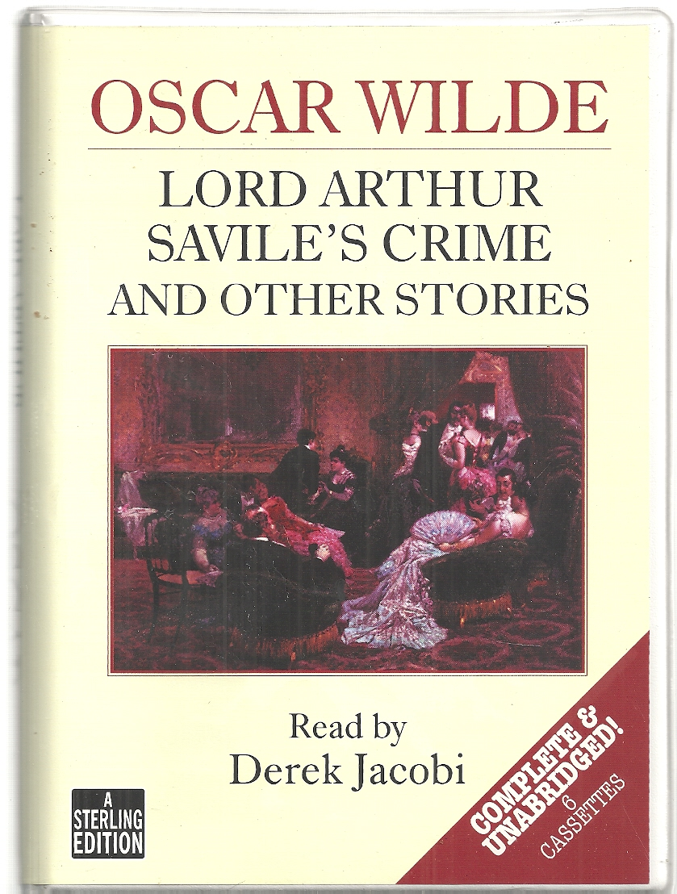

0
стр. з
0
сторінок

завантаження...

Оскар Уайльд
Преступление лорда Артура Сэвила и другие рассказы
Перевел Андрей Еремин
Метод чтения Ильи Франка
Сontents
LORD ARTHUR SAVILE’S CRIME
(Преступление лорда Артура Сэвила).
CHAPTER I
It was Lady Windermere’s last reception before Easter (это был последний прием леди Уиндермир перед пасхой), and Bentinck House was even more crowded than usual (и Бентинк-Хаус был даже более переполнен, чем обычно; house — дом; здание; crowd — толпа; to crowd — толпиться; переполнять, набивать /помещение, пространство/). Six Cabinet Ministers had come on from the Speaker’s Levée in their stars and ribands (шесть министров явились с приема у парламентского спикера в своих орденах и лентах; Cabinet Minister — министр-член кабинета; to come on — появляться в назначенное время; to speak — говорить; выступать с речью; levée — дневной прием при дворе монарха с присутствием одних мужчин; star — звезда, звездочка /знак отличия/; riband /уст./ = ribbon — лента; знак отличия), all the pretty women wore their smartest dresses (все прелестные женщины были в своих изящнейших платьях; woman — женщина; to wear — быть одетым /во что-л./, носить /что-л./; smart — нарядный; изящный, элегантный; dress — платье, одежда), and at the end of the picture-gallery stood the Princess Sophia of Carlsruhe (а в конце картинной галереи стояла принцесса София из Карлсруэ; to stand), a heavy Tartar-looking lady (полная, с татарскими чертами дама; heavy — тяжелый; крупный, массивный; Tartar — татарин, татарка; татарский; to look — смотреть; выглядеть, иметь вид), with tiny black eyes and wonderful emeralds (с крохотными черными глазками и удивительными изумрудами; wonder — чудо; нечто удивительное), talking bad French at the top of her voice (говорившая очень громко на плохом французском; at the top of one`s voice — во весь голос, громогласно; top — вершина; высшая степень), and laughing immoderately at everything that was said to her (и смеявшаяся неумеренно над всем, что ей было сказано = что бы ей ни сказали; moderate — умеренный; to say). It was certainly a wonderful medley of people (несомненно, это была замечательная смесь людей = общество собралось на редкость пестрое; certain — верный, бесспорный; medley — смесь; смешанное общество; разношерстая компания). Gorgeous peeresses chatted affably to violent Radicals (сиятельные леди любезно беседовали с ярыми радикалами; gorgeous — великолепный, блестящий; peeress — супруга пэра; леди; chat — непринужденный разговор; беседа; болтовня; violent — неистовый, яростный), popular preachers brushed coat-tails with eminent sсeptics (прославленные проповедники и известные скептики задевали друг друга фалдами фрака = прославленные проповедники невольно сталкивались с известными скептиками; popular — популярный; to preach — проповедовать; to brush — слегка касаться, задевать; coat-tail — фалда /фрака, мундира/: coat — пиджак; пальто; tail — хвост; пола, фалда; tails — фрак /разг./), a perfect bevy of bishops kept following a stout prima-donna from room to room (целая толпа епископов неотступно следовала за дородной примадонной из комнаты в комнату; perfect — совершенный; полный, настоящий /эмоц.-усил./; bevy — компания, собрание /особ. женское/; стая, стадо; to keep doing /smth./ — продолжать делать /что-л./), on the staircase stood several Royal Academicians (на лестнице стояли несколько членов Королевской академии искусств; stair — ступень/ка/; case — коробка; лестничная клетка), disguised as artists (маскирующихся под художников; disguise — маскировка; переодевание; маска; art — искусство), and it was said (и говорили = прошел слух) that at one time the supper-room was absolutely crammed with geniuses (что одно время столовая была совершенно набита гениями = в столовой было не протолкнуться от гениев; cram — давка, толкотня /разг./; supper — ужин; room — комната; зал). In fact, it was one of Lady Windermere’s best nights (действительно, это был один из лучших вечеров леди Уиндермир; fact — факт; истина, действительность; night — ночь; вечер), and the Princess stayed till nearly half-past eleven (и принцесса задержалась почти до половины двенадцатого: «половины после одиннадцати»; to stay — оставаться, задерживаться).
reception [rI`sepS(q)n], crowded [`kraVdId], women [`wImIn], laughing [`lRfIN], disguised [dIs`gaIzd]
It was Lady Windermere’s last reception before Easter, and Bentinck House was even more crowded than usual. Six Cabinet Ministers had come on from the Speaker’s Levée in their stars and ribands, all the pretty women wore their smartest dresses, and at the end of the picture-gallery stood the Princess Sophia of Carlsruhe, a heavy Tartar-looking lady, with tiny black eyes and wonderful emeralds, talking bad French at the top of her voice, and laughing immoderately at everything that was said to her. It was certainly a wonderful medley of people. Gorgeous peeresses chatted affably to violent Radicals, popular preachers brushed coat-tails with eminent sceptics, a perfect bevy of bishops kept following a stout prima-donna from room to room, on the staircase stood several Royal Academicians, disguised as artists, and it was said that at one time the supper-room was absolutely crammed with geniuses. In fact, it was one of Lady Windermere’s best nights, and the Princess stayed till nearly half-past eleven.
As soon as she had gone (как только она ушла; soon — скоро, вскоре; to go — ходить; уходить, уезжать), Lady Windermere returned to the picture-gallery (леди Уиндермир вернулась в картинную галерею), where a celebrated political economist was solemnly explaining the scientific theory of music (где знаменитый экономист с серьезным видом объяснял научную теорию музыки; to celebrate — праздновать; славить/ся/; political economy — политическая экономия; solemn — серьезный, важный) to an indignant virtuoso from Hungary (негодующему виртуозу из Венгрии), and began to talk to the Duchess of Paisley (и начала говорить с герцогиней Пейсли; to begin). She looked wonderfully beautiful with her grand ivory throat (она выглядела изумительно прекрасно: величественная белоснежная шея; grand — великий; величественный, благородный; ivory — слоновая кость; цвета слоновой кости; throat — горло, гортань), her large blue forget-me-not eyes (большие светло-голубые глаза; blue — синий; голубой; forget-me-not — незабудка; светло-голубой цвет; to forget — забывать), and her heavy coils of golden hair (и густые, тяжелые локоны золотых волос; heavy — тяжелый; обильный, густой; coil — виток, кольцо). Or pur they were (это было чистое золото /фр./) — not that pale straw colour (не тот бледный соломенный цвет; straw — солома; цвет соломы, бледно-желтый) that nowadays usurps the gracious name of gold (который в наши дни удерживает благое имя золота = величается золотом; to usurp — узурпировать, незаконно захватывать; gracious — милостивый; благодатный), but such gold as is woven into sunbeams or hidden in strange amber (а такое золото, которое вплетено в солнечные лучи или сокрыто в таинственном янтаре; to weave — плести; сплетать; вплетать; sun — солнце; beam — луч; to hide — прятать/ся/, скрывать/ся/; strange — странный, необычный); and they gave to her face something of the frame of a saint (и они придавали ее лицу нечто от святого = святые черты; to give — давать; придавать; frame — каркас, остов; склад, характер), with not a little of the fascination of a sinner (с немалым очарованием грешницы; not a little — немало, изрядно; sin — грех). She was a curious psychological study (она являлась интересным психологическим феноменом; curious — любопытный; необычный, курьезный; study — изучение; предмет /достойный/ изучения).
solemnly [`sPlqmlI], talk [tLk], beautiful [`bjHtIf(q)l], colour [`kAlq], usurps [jH`zE:ps], psychological [,saIkq`lPGIk(q)l]
As soon as she had gone, Lady Windermere returned to the picture-gallery, where a celebrated political economist was solemnly explaining the scientific theory of music to an indignant virtuoso from Hungary, and began to talk to the Duchess of Paisley. She looked wonderfully beautiful with her grand ivory throat, her large blue forget-me-not eyes, and her heavy coils of golden hair. Or pur they were — not that pale straw colour that nowadays usurps the gracious name of gold, but such gold as is woven into sunbeams or hidden in strange amber; and they gave to her face something of the frame of a saint, with not a little of the fascination of a sinner. She was a curious psychological study.
Early in life she had discovered the important truth (в молодости: «рано в жизни» она открыла /для себя/ важную истину) that nothing looks so like innocence as an indiscretion (ничто не похоже на невинность так, как опрометчивость; to look like — быть похожим, выглядеть как; discretion — осторожность, благоразумие); and by a series of reckless escapades (и с помощью ряда опрометчивых проделок; escapade — веселая проделка, смелая выходка), half of them quite harmless (половина из них /была/ совершенно безобидной; harm — вред, ущерб; зло), she had acquired all the privileges of a personality (она приобрела все привилегии видной личности). She had more than once changed her husband (она более, чем однажды = не раз меняла мужа); indeed, Debrett credits her with three marriages (в действительности, «Дебретт» приписывает ей три брака; Debrett — «Дебретт» /ежегодный справочник дворянства; издается с 1802 г./; credit — вера, доверие; заслуга, честь; to credit with — приписывать /кому-л. что-л./; to marry — женить/ся/, выходить замуж); but as she had never changed her lover (но поскольку она никогда не меняла любовника), the world had long ago ceased to talk scandal about her (свет давно прекратил злословить на ее счет; world — мир, свет; общество; ago — тому назад; to talk — говорить; сплетничать, судачить; scandal — скандал; злословие, сплетни). She was now forty years of age, childless (теперь ей было сорок лет, /она была/ бездетна; age — возраст; child — дитя), and with that inordinate passion for pleasure (и обладала той неумеренной страстью к удовольствиям) which is the secret of remaining young (которая является секретом молодости: «/того, чтобы/ оставаться юной»).
Suddenly she looked eagerly round the room (вдруг она нетерпеливо оглядела комнату; to look round — оглядываться кругом; eager — страстно желающий /чего-л./, нетерпеливый), and said, in her clear contralto voice (и сказала чистым контральто), ‘Where is my cheiromantist (где мой хиромант)?’
‘Your what, Gladys (твое что, Глэдис)?’ exclaimed the Duchess, giving an involuntary start (воскликнула герцогиня, невольно вздрогнув; start — начало; вздрагивание; to give a start — вздрогнуть; voluntary — добровольный; сознательный).
discovered [dIs`kAvqd], truth [trHT], half [hRf], husband [`hAzbqnd], talk [tLk], pleasure [`pleZq], cheiromantist [`kaIqrqmxntIst]
Early in life she had discovered the important truth that nothing looks so like innocence as an indiscretion; and by a series of reckless escapades, half of them quite harmless, she had acquired all the privileges of a personality. She had more than once changed her husband; indeed, Debrett credits her with three marriages; but as she had never changed her lover, the world had long ago ceased to talk scandal about her. She was now forty years of age, childless, and with that inordinate passion for pleasure which is the secret of remaining young.
Suddenly she looked eagerly round the room, and said, in her clear contralto voice, ‘Where is my cheiromantist?’
‘Your what, Gladys?’ exclaimed the Duchess, giving an involuntary start.
‘My cheiromantist, Duchess (мой хиромант, герцогиня); I can’t live without him at present (не могу жить без него теперь; can’t = can not; present — настоящее /время/).’
‘Dear Gladys (дорогая Глэдис)! you are always so original (ты всегда так оригинальна),’ murmured the Duchess, trying to remember what a cheiromantist really was (пробормотала герцогиня, пытаясь вспомнить, что же такое хиромант; really — действительно, на самом деле), and hoping it was not the same as a cheiropodist (и надеясь, что это не то же самое, что и мозольный оператор).
‘He comes to see my hand twice a week regularly (он регулярно приходит дважды в неделю, чтобы посмотреть на мою руку; hand — рука /кисть/),’ continued Lady Windermere (продолжала леди Уиндермир), ‘and is most interesting about it (и очень ей интересуется; most — в высшей степени, чрезвычайно).’
‘Good heavens (о боже; heavens — небеса)!’ said the Duchess to herself (подумала герцогиня; to say to oneself — сказать себе; подумать про себя), ‘he is a sort of cheiropodist after all (все-таки: «после всего» он что-то вроде мозольного оператора; sort — сорт, вид, род). How very dreadful (как очень ужасно = какой кошмар; dread — страх, ужас). I hope he is a foreigner at any rate (надеюсь, он, по крайней мере, иностранец; foreign — иностранный, чужеземный). It wouldn’t be quite so bad then (тогда это не было бы так уж плохо).’
‘I must certainly introduce him to you (я должна непременно представить его вам).’
without [wI`DaVt], always [`Llw(e)Iz], murmured [`mE:mqd], foreigner [`fPrInq]
‘My cheiromantist, Duchess; I can’t live without him at present.’
‘Dear Gladys! you are always so original,’ murmured the Duchess, trying to remember what a cheiromantist really was, and hoping it was not the same as a cheiropodist.
‘He comes to see my hand twice a week regularly,’ continued Lady Windermere, ‘and is most interesting about it.’
‘Good heavens!’ said the Duchess to herself, ‘he is a sort of cheiropodist after all. How very dreadful. I hope he is a foreigner at any rate. It wouldn’t be quite so bad then.’
‘I must certainly introduce him to you.’
‘Introduce him (представить его)!’ cried the Duchess (вскричала герцогиня); ‘you don’t mean to say he is here (не хочешь ли ты сказать, что он здесь; don’t = do not; to mean — иметь в виду, подразумевать)?’ and she began looking about for a small tortoise-shell fan (и она начала искать глазами маленький черепаховый веер; to look about — оглядываться по сторонам; tortoise — черепаха /сухопутная/; shell — панцирь /черепахи, краба/) and a very tattered lace shawl (и весьма потрепанную кружевную шаль; to tatter — рвать/ся/ в клочья; превращать/ся/ в лохмотья; lace — шнурок; кружево), so as to be ready to go at a moment’s notice (с тем чтобы быть готовой уйти в любой момент; notice — извещение; предупреждение).
‘Of course he is here (разумеется, он здесь); I would not dream of giving a party without him (мне бы и в голову не пришло устроить прием без него; dream — сон; мечта; to dream — видеть сон; мечтать; to dream of — думать, помышлять; to give a party — позвать гостей, устроить вечер). He tells me I have a pure psychic hand (он говорит, у меня безупречная одухотворенная рука; psychic — духовный; психический; обладающий сверхъестественными способностями), and that if my thumb had been the least little bit shorter (и что если бы мой большой палец был чуть-чуть короче; least — самое меньшее; меньше всего), I should have been a confirmed pessimist, and gone into a convent (я была бы убежденной пессимисткой и ушла бы в монастырь).’
‘Oh, I see (а, понятно)!’ said the Duchess, feeling very much relieved (сказала герцогиня с большим облегчением: «чувствуя себя очень облегченной»); ‘he tells fortunes, I suppose (полагаю, он предсказывает судьбу; fortune — счастье; фортуна, судьба; to tell fortunes — гадать, предсказывать судьбу)?’
introduce [,Intrq`djHs], psychic [`saIkIk], thumb [TAm], convent [`kPnvqnt], fortunes [`fLC(q)nz]
‘Introduce him!’ cried the Duchess; ‘you don’t mean to say he is here?’ and she began looking about for a small tortoise-shell fan and a very tattered lace shawl, so as to be ready to go at a moment’s notice.
‘Of course he is here; I would not dream of giving a party without him. He tells me I have a pure psychic hand, and that if my thumb had been the least little bit shorter, I should have been a confirmed pessimist, and gone into a convent.’
‘Oh, I see!’ said the Duchess, feeling very much relieved; ‘he tells fortunes, I suppose?’
‘And misfortunes, too (и не судьбу = неудачи тоже; misfortune — беда, неудача, несчастье),’ answered Lady Windermere (ответила леди Уиндермир), ‘any amount of them (все, что угодно: «любое их количество»). Next year, for instance (в следующем году, например), I am in great danger, both by land and sea (я /буду/ в большой опасности и на суше, и на море; both — оба, обе; и тот и другой), so I am going to live in a balloon (поэтому я собираюсь жить на воздушном шаре), and draw up my dinner in a basket every evening (и поднимать /к себе/ обед в корзине каждый вечер; to draw — тащить, тянуть; dinner — /поздний/ обед, ужин). It is all written down on my little finger (это все написано на моем мизинце: «маленьком пальце»; to write), or on the palm of my hand, I forget which (или на ладони руки, я не помню, где; which — какой?, который? /из них/).’
‘But surely that is tempting Providence, Gladys (но это, несомненно, /означает/ искушать провидение, Глэдис; sure — уверенный; несомненный).’
‘My dear Duchess, surely Providence can resist temptation by this time (моя дорогая герцогиня, несомненно, провидение умеет не поддаваться искушению к этому времени = уже давно научилось не поддаваться искушению). I think every one should have their hands told once a month (я думаю, каждому следует гадать по руке раз в месяц; to tell), so as to know what not to do (чтобы знать, чего не /нужно/ делать). Of course, one does it all the same (конечно, /потом/ все равно это делаешь; one — один; используется в неопр.-личных предложениях; all the same — тем не менее; все равно), but it is so pleasant to be warned (но так приятно быть предупрежденной/предостереженной). Now if some one doesn’t go and fetch Mr. Podgers at once (так вот, если кто-нибудь сейчас же не приведет мистера Поджерса; to fetch — /сходить и/ привести, принести; at once — тотчас, немедленно), I shall have to go myself (мне придется пойти самой).’
answered [`Rnsqd], written [rItn], month [mAnT], warned [wLnd]
‘And misfortunes, too,’ answered Lady Windermere, ‘any amount of them. Next year, for instance, I am in great danger, both by land and sea, so I am going to live in a balloon, and draw up my dinner in a basket every evening. It is all written down on my little finger, or on the palm of my hand, I forget which.’
‘But surely that is tempting Providence, Gladys.’
‘My dear Duchess, surely Providence can resist temptation by this time. I think every one should have their hands told once a month, so as to know what not to do. Of course, one does it all the same, but it is so pleasant to be warned. Now if some one doesn’t go and fetch Mr. Podgers at once, I shall have to go myself.’
‘Let me go, Lady Windermere (позвольте мне /пойти/, леди Уиндермир),’ said a tall handsome young man (сказал высокий красивый молодой человек), who was standing by (который стоял рядом), listening to the conversation with an amused smile (слушая разговор с веселой улыбкой; to amuse — развлекать; позабавить, развеселить).
‘Thanks so much, Lord Arthur (большое спасибо, лорд Артур); but I am afraid you wouldn’t recognise him (но, боюсь, вы бы его не узнали = вы его не узнаете).’
‘If he is as wonderful as you say, Lady Windermere (если он такой замечательный, как вы говорите, леди Уиндермир), I couldn’t well miss him (я его сразу узнаю: «я совсем не мог бы его не заметить»; well — хорошо; вполне, весьма; to miss — упустить; не заметить). Tell me what he is like (скажите мне, как он выглядит; to be like — быть похожим /на кого-л., что-л./), and I’ll bring him to you at once (и я тотчас приведу его к вам).’
‘Well, he is not a bit like a cheiromantist (ну, он совсем не похож на хироманта; bit — небольшое количество, частица). I mean he is not mysterious, or esoteric, or romantic-looking (я хочу сказать, он не таинственный = в нем нет ничего таинственного, или эзотерического, или романтического). He is a little, stout man (это маленький, полный человечек), with a funny, bald head (со смешной лысой головой), and great gold-rimmed spectacles (в огромных очках с золотой оправой; to rim — снабжать ободком, обрамлять); something between a family doctor and a country attorney (что-то между семейным доктором и провинциальным адвокатом; country — сельская местность, провинция). I’m really very sorry, but it is not my fault (мне, право, очень жаль, но это не моя вина). People are so annoying (люди так раздражают; annoying — раздражающий; надоедливый; to annoy — досаждать; докучать, раздражать).
handsome [`hxnsqm], listening [`lIs(q)nIN], recognise [`rekqgnaIz]
‘Let me go, Lady Windermere,’ said a tall handsome young man, who was standing by, listening to the conversation with an amused smile.
‘Thanks so much, Lord Arthur; but I am afraid you wouldn’t recognise him.’
‘If he is as wonderful as you say, Lady Windermere, I couldn’t well miss him. Tell me what he is like, and I’ll bring him to you at once.’
‘Well, he is not a bit like a cheiromantist. I mean he is not mysterious, or esoteric, or romantic-looking. He is a little, stout man, with a funny, bald head, and great gold-rimmed spectacles; something between a family doctor and a country attorney. I’m really very sorry, but it is not my fault. People are so annoying.
All my pianists look exactly like poets (все мои пианисты выглядят в точности как поэты), and all my poets look exactly like pianists (а все мои поэты — точь-в-точь как пианисты); and I remember last season asking a most dreadful conspirator to dinner (помню, /как/ в прошлом сезоне я пригласила на обед одного весьма ужасного заговорщика), a man who had blown up ever so many people (человека, который взорвал страшно много людей; to blow up; ever so — в высшей степени, очень), and always wore a coat of mail (и всегда ходил в кольчуге; coat — пиджак; пальто; mail — кольчуга, броня; щиток /черепахи/), and carried a dagger up his shirt-sleeve (и носил кинжал в рукаве рубашки; to carry; shirt — рубашка, сорочка); and do you know that when he came (и знаете ли вы = представьте себе, что когда он пришел) he looked just like a nice old clergyman (то выглядел прямо как милый старый пастор), and cracked jokes all the evening (и отпускал шутки весь вечер; to crack — трескать/ся/, щелкать; crack — треск, щелчок; острота, шутка)? Of course, he was very amusing, and all that (конечно, он был очень забавный и всё такое прочее), but I was awfully disappointed (однако я была ужасно разочарована); and when I asked him about the coat of mail (а когда я спросила его о кольчуге), he only laughed, and said (он только рассмеялся и сказал) it was far too cold to wear in England (что ее слишком холодно носить в Англии; far — далеко; значительно, гораздо). Ah, here is Mr. Podgers (а вот и мистер Поджерс; here — здесь, тут; вот)! Now, Mr. Podgers, I want you to tell the Duchess of Paisley’s hand (итак, мистер Поджерс, я хочу, чтобы вы погадали по руке герцогине Пейсли). Duchess, you must take your glove off (герцогиня, вы должны снять перчатку). No, not the left hand, the other (нет, не /с/ левой руки, /с/ другой).’
exactly [Ig`zxktlI], clergyman [`klE:GImqn], England [`INglqnd]
All my pianists look exactly like poets, and all my poets look exactly like pianists; and I remember last season asking a most dreadful conspirator to dinner, a man who had blown up ever so many people, and always wore a coat of mail, and carried a dagger up his shirt-sleeve; and do you know that when he came he looked just like a nice old clergyman, and cracked jokes all the evening? Of course, he was very amusing, and all that, but I was awfully disappointed; and when I asked him about the coat of mail, he only laughed, and said it was far too cold to wear in England. Ah, here is Mr. Podgers! Now, Mr. Podgers, I want you to tell the Duchess of Paisley’s hand. Duchess, you must take your glove off. No, not the left hand, the other.’
‘Dear Gladys, I really don’t think it is quite right (дорогая Глэдис, я, право, не думаю, что это вполне прилично; right — правильный; уместный, подходящий),’ said the Duchess, feebly unbuttoning a rather soiled kid glove (проговорила герцогиня, нехотя расстегивая весьма запачканную лайковую перчатку; feebly — слабо; button — пуговица; kid — козленок; лайка /кожа/).
‘Nothing interesting ever is (ничто интересное никогда такое = все, что интересно, всегда неприлично),’ said Lady Windermere: ‘on a fait le monde ainsi (так уж устроен мир /фр./). But I must introduce you (однако я должна познакомить вас). Duchess, this is Mr. Podgers, my pet cheiromantist (герцогиня, это мистер Поджерс, мой прелестный хиромант; pet — любимец, баловень; домашний, ручной /о животном/). Mr. Podgers, this is the Duchess of Paisley (мистер Поджерс, это герцогиня Пейсли), and if you say that she has a larger mountain of the moon than I have (и если вы скажете, что у нее холм луны больше, чем у меня; mountain — гора), I will never believe in you again (я никогда больше не поверю в вас = навсегда утрачу в вас веру).’
‘I am sure, Gladys, there is nothing of the kind in my hand (я уверена, Глэдис, что у меня на руке нет ничего подобного; kind — сорт, вид, класс),’ said the Duchess gravely (степенно произнесла герцогиня; grave — серьезный; степенный, важный).
‘Your Grace is quite right (ваша светлость совершенно права),’ said Mr. Podgers, glancing at the little fat hand with its short square fingers (сказал мистер Поджерс, взглянув на маленькую пухлую ручку с короткими квадратными пальцами; to glance — бросить взгляд, мельком взглянуть), ‘the mountain of the moon is not developed (холм луны не развит). The line of life, however, is excellent (линия жизни, впрочем, превосходная). Kindly bend the wrist (будьте добры, согните запястье; kindly — доброжелательно; любезно). Thank you (благодарю вас). Three distinct lines on the rascette (три четкие линии на сгибе)! You will live to a great age, Duchess, and be extremely happy (вы доживете до глубокой старости: «до великого возраста», герцогиня, и будете на редкость счастливы; extreme — крайний; предельный, чрезвычайный). Ambition — very moderate (честолюбие… очень умеренное), line of intellect not exaggerated, line of heart — (линия ума не утрирована, линия сердца…; to exaggerate — преувеличивать, излишне подчеркивать) ’
mountain [`maVntIn], glancing [`glRnsIN], extremely [Ik`strJmlI]
‘Dear Gladys, I really don’t think it is quite right,’ said the Duchess, feebly unbuttoning a rather soiled kid glove.
‘Nothing interesting ever is,’ said Lady Windermere: ‘on a fait le monde ainsi. But I must introduce you. Duchess, this is Mr. Podgers, my pet cheiromantist. Mr. Podgers, this is the Duchess of Paisley, and if you say that she has a larger mountain of the moon than I have, I will never believe in you again.’
‘I am sure, Gladys, there is nothing of the kind in my hand,’ said the Duchess gravely.
‘Your Grace is quite right,’ said Mr. Podgers, glancing at the little fat hand with its short square fingers, ‘the mountain of the moon is not developed. The line of life, however, is excellent. Kindly bend the wrist. Thank you. Three distinct lines on the rascette! You will live to a great age, Duchess, and be extremely happy. Ambition - very moderate, line of intellect not exaggerated, line of heart — ’
‘Now, do be indiscreet, Mr. Podgers (будьте же несдержанны = ничего не утаивайте, мистер Поджерс; do — зд. используется для усиления; discreet — осторожный; неболтливый; тактичный),’ cried Lady Windermere (воскликнула леди Уиндермир).
‘Nothing would give me greater pleasure (ничто не доставило бы мне большего удовольствия),’ said Mr. Podgers, bowing (сказал мистер Поджерс, поклонившись; bow — поклон), ‘if the Duchess ever had been (если бы герцогиня когда-нибудь была такой /несдержанной/ = если бы герцогиня только дала повод), but I am sorry to say that I see great permanence of affection (но, к сожалению, должен сказать, что я вижу замечательное постоянство /в любви/; sorry — огорченный, сожалеющий; affection — привязанность, любовь), combined with a strong sense of duty (в сочетании с сильным чувством долга; to combine — объединять/ся/, соединять/ся/).’
‘Pray go on, Mr. Podgers (прошу вас, продолжайте, мистер Поджерс),’ said the Duchess, looking quite pleased (сказала герцогиня с весьма довольным видом).
‘Economy is not the least of your Grace’s virtues (бережливость — не самое маловажное из достоинств вашей светлости),’ continued Mr. Podgers, and Lady Windermere went off into fits of laughter (продолжал мистер Поджерс, и леди Уиндермир прыснула со смеху; to go off into — разразиться, закатиться /смехом, плачем/; fit — припадок, приступ).
‘Economy is a very good thing (бережливость — прекрасная вещь),’ remarked the Duchess complacently (удовлетворенно заметила герцогиня; complacent — благодушный, самодовольный); ‘when I married Paisley he had eleven castles (когда я вышла за Пейсли, у него было одиннадцать замков), and not a single house fit to live in (и ни одного дома, пригодного для жизни: «чтобы в нем жить»; single — один, единственный).’
‘And now he has twelve houses, and not a single castle (а теперь у него двенадцать домов и ни одного замка),’ cried Lady Windermere (воскликнула леди Уиндермир).
indiscreet [,IndI`skrJt], virtues [`vE:CH], castle [`kRs(q)l]
‘Now, do be indiscreet, Mr. Podgers,’ cried Lady Windermere.
‘Nothing would give me greater pleasure,’ said Mr. Podgers, bowing, ‘if the Duchess ever had been, but I am sorry to say that I see great permanence of affection, combined with a strong sense of duty.’
‘Pray go on, Mr. Podgers,’ said the Duchess, looking quite pleased.
‘Economy is not the least of your Grace’s virtues,’ continued Mr. Podgers, and Lady Windermere went off into fits of laughter.
‘Economy is a very good thing,’ remarked the Duchess complacently; ‘when I married Paisley he had eleven castles, and not a single house fit to live in.’
‘And now he has twelve houses, and not a single castle,’ cried Lady Windermere.
‘Well, my dear,’ said the Duchess, ‘I like — (видишь ли, дорогая, — сказала герцогиня, — я люблю…) ’
‘Comfort,’ said Mr. Podgers (комфорт, — сказал мистер Поджерс), ‘and modern improvements (современные удобства; to improve — улучшать/ся/, совершенствовать/ся/), and hot water laid on in every bedroom (и горячую воду в каждой спальне; to lay on — подводить /газ, воду/; bed — кровать). Your Grace is quite right (ваша светлость совершенно права). Comfort is the only thing our civilisation can give us (комфорт — единственное, что наша цивилизация может нам дать).
‘You have told the Duchess’s character admirably, Mr. Podgers (вы превосходно отгадали характер герцогини, мистер Поджерс; to tell — говорить; выдавать, сообщать /тайну/), and now you must tell Lady Flora’s’ (а теперь расскажите /о характере/ леди Флоры); and in answer to a nod from the smiling hostess (и в ответ на кивок улыбающейся хозяйки), a tall girl, with sandy Scotch hair (высокая девушка с рыжеватыми шотландскими волосами; sandy — песочного цвета, рыжеватый; sand — песок), and high shoulder-blades (и высокими = острыми лопатками; shoulder — плечо; blade — лезвие; лопасть /винта, весла/), stepped awkwardly from behind the sofa (выступила неловко из-за дивана; step — шаг; behind — позади), and held out a long, bony hand with spatulate fingers (и протянула длинную худую руку с приплюснутыми пальцами; to hold out; bony — костлявый; тощий; bone — кость; spatulate — лопатовидный).
‘Ah, a pianist! I see (а, пианистка! понятно/вижу),’ said Mr. Podgers, ‘an excellent pianist, but perhaps hardly a musician (превосходная пианистка, но, вероятно, едва ли музыкант /по профессии/). Very reserved, very honest (очень замкнутая, очень честная), and with a great love of animals (и обожает животных: «с сильной любовью животных»).’
comfort [`kAmfqt], improvements [Im`prHvmqnts], musician [mjH`zIS(q)n]
‘Well, my dear,’ said the Duchess, ‘I like — ’
‘Comfort,’ said Mr. Podgers, ‘and modern improvements, and hot water laid on in every bedroom. Your Grace is quite right. Comfort is the only thing our civilisation can give us.
‘You have told the Duchess’s character admirably, Mr. Podgers, and now you must tell Lady Flora’s’; and in answer to a nod from the smiling hostess, a tall girl, with sandy Scotch hair, and high shoulder-blades, stepped awkwardly from behind the sofa, and held out a long, bony hand with spatulate fingers.
‘Ah, a pianist! I see,’ said Mr. Podgers, ‘an excellent pianist, but perhaps hardly a musician. Very reserved, very honest, and with a great love of animals.’
‘Quite true (совершенно верно)!’ exclaimed the Duchess, turning to Lady Windermere (воскликнула герцогиня, обращаясь к леди Уиндермир; to turn — поворачивать/ся/; обращаться), ‘absolutely true (абсолютно верно)! Flora keeps two dozen collie dogs at Macloskie (Флора держит две дюжины овчарок в Макклоски; collie — колли, шотландская овчарка; dog — собака), and would turn our town house into a menagerie (и превратила бы наш городской дом в зверинец) if her father would let her (если бы отец ей позволил).’
‘Well, that is just what I do with my house every Thursday evening (что ж, именно это я проделываю со своим домом каждый четверг вечером),’ cried Lady Windermere, laughing (смеясь, воскликнула леди Уиндермир), ‘only I like lions better than collie dogs (только мне больше нравятся львы, чем овчарки; better — лучше; в большей степени).’
‘Your one mistake, Lady Windermere (ваша ошибка = тут вы ошибаетесь, леди Уиндермир),’ said Mr. Podgers, with a pompous bow (сказал мистер Поджерс с напыщенным поклоном = важно поклонившись; pompous — напыщенный, эффектный).
‘If a woman can’t make her mistakes charming, she is only a female (если женщина не может сделать свои ошибки прелестными, она всего лишь особь женского пола),’ was the answer (был ответ). ‘But you must read some more hands for us (однако вы должны погадать нам ещё: «прочитать больше рук для нас»). Come, Sir Thomas, show Mr. Podgers yours (давайте же, сэр Томас, покажите мистеру Поджерсу вашу руку) ’; and a genial-looking old gentleman, in a white waistcoat (и добродушного вида пожилой джентльмен в белом жилете; waist — талия), came forward, and held out a thick rugged hand (выступил вперед и протянул толстую грубую руку; rugged — негладкий, шершавый /о поверхности/; rug — ковер; грубая шерстяная материя), with a very long third finger (с очень длинным средним: «третьим» пальцем).
dozen [`dAz(q)n], pompous [`pPmpqs], female [`fJmeIl]
‘Quite true!’ exclaimed the Duchess, turning to Lady Windermere, ‘absolutely true! Flora keeps two dozen collie dogs at Macloskie, and would turn our town house into a menagerie if her father would let her.’
‘Well, that is just what I do with my house every Thursday evening,’ cried Lady Windermere, laughing, ‘only I like lions better than collie dogs.’
‘Your one mistake, Lady Windermere,’ said Mr. Podgers, with a pompous bow.
‘If a woman can’t make her mistakes charming, she is only a female,’ was the answer. ‘But you must read some more hands for us. Come, Sir Thomas, show Mr. Podgers yours’; and a genial-looking old gentleman, in a white waistcoat, came forward, and held out a thick rugged hand, with a very long third finger.
‘An adventurous nature (авантюрный характер; adventure — приключение; авантюра; nature — природа; нрав, характер); four long voyages in the past, and one to come (четыре долгих путешествия в прошлом и /еще/ одно предстоит; voyage — плавание, морское путешествие). Been ship-wrecked three times (попадал в кораблекрушение три раза; ship — корабль; wreck — крушение, авария; to wreck — терпеть крушение). No, only twice, but in danger of a shipwreck your next journey (нет, только дважды, однако в опасности кораблекрушения ваша следующая поездка = есть риск попасть в кораблекрушение во время следующей поездки; journey — поездка, путешествие /преим. сухопутное/). A strong Conservative, very punctual (убежденный консерватор, очень пунктуальный; strong — сильный; твердый /во взглядах/), and with a passion for collecting curiosities (имеет страсть к коллекционированию редкостей; curiosity — любопытство; диковина, редкая антикварная вещь). Had a severe illness between the ages sixteen and eighteen (имел тяжелую болезнь = тяжело болел в возрасте между шестнадцатью и восемнадцатью /годами/; severe — жестокий, суровый; ill — больной). Was left a fortune when about thirty (ему оставили состояние, когда /ему было/ около тридцати; to leave). Great aversion to cats and Radicals (/питает/ огромную неприязнь к кошкам и радикалам).’
‘Extraordinary!’ exclaimed Sir Thomas (поразительно! — воскликнул сэр Томас; ordinary — обычный, заурядный); ‘you must really tell my wife’s hand, too (вы непременно должны погадать /на руке/ и моей жене).’
‘Your second wife’s (вашей второй жене),’ said Mr. Podgers quietly, still keeping Sir Thomas’s hand in his (тихо произнес мистер Поджерс, все еще держа руку сэра Томаса в своей). ‘Your second wife’s (вашей второй жене). I shall be charmed’ (буду очарован = с удовольствием); but Lady Marvel, a melancholy-looking woman (но леди Марвел, меланхоличного вида дама), with brown hair and sentimental eyelashes (с каштановыми волосами и сентиментальными ресницами; brown — коричневый; eye — глаз; lash — плеть, хлыст), entirely declined to have her past or her future exposed (наотрез отказалась, чтобы раскрывали ее прошлое или будущее; entirely — полностью, совершенно; to decline — отклонять/ся/, уклонять/ся/; to expose — делать видимым, выставлять напоказ); and nothing that Lady Windermere could do would induce Monsieur de Koloff, the Russian Ambassador (и ничего /из того/, что леди Уиндермир делала, не могло убедить мосье де Колова, русского посла), even to take his gloves off (даже снять перчатки).
adventurous [qd`venC(q)rqs], voyages [`vOIIGIz], shipwreck [`SIprek]
‘An adventurous nature; four long voyages in the past, and one to come. Been ship-wrecked three times. No, only twice, but in danger of a shipwreck your next journey. A strong Conservative, very punctual, and with a passion for collecting curiosities. Had a severe illness between the ages sixteen and eighteen. Was left a fortune when about thirty. Great aversion to cats and Radicals.’
‘Extraordinary!’ exclaimed Sir Thomas; ‘you must really tell my wife’s hand, too.’
‘Your second wife’s,’ said Mr. Podgers quietly, still keeping Sir Thomas’s hand in his. ‘Your second wife’s. I shall be charmed’; but Lady Marvel, a melancholy-looking woman, with brown hair and sentimental eyelashes, entirely declined to have her past or her future exposed; and nothing that Lady Windermere could do would induce Monsieur de Koloff, the Russian Ambassador, even to take his gloves off.
In fact, many people seemed afraid to face the odd little man with his stereotyped smile (в сущности, многие люди, казалось, боялись предстать перед странным человечком с шаблонной улыбкой; face — лицо; to face — стоять лицом к лицу; встречаться), his gold spectacles, and his bright, beady eyes (золотыми очками и блестящими глазами-бусинками; bead — шарик; бусина); and when he told poor Lady Fermor, right out before every one (а когда он сказал бедной леди Фермор, прямо перед всеми), that she did not care a bit for music (что она совершенно равнодушна к музыке; to care for — проявлять интерес к /чему-л./), but was extremely fond of musicians (но чрезвычайно любит музыкантов; to be fond of), it was generally felt that cheiromancy was a most dangerous science (все осознали, что хиромантия — очень опасная наука; to feel — ощущать; считать, полагать), and one that ought not to be encouraged (и такая /наука/, которую не следует поощрять), except in a tête-à-tête (кроме как с глазу на глаз /фр./).
Lord Arthur Savile, however (однако лорд Артур Сэвил), who did not know anything about Lady Fermor’s unfortunate story (который ничего не знал о конфузе: «неудачной истории» леди Фермор), and who had been watching Mr. Podgers with a great deal of interest (и который наблюдал за мистером Поджерсом с большим интересом; deal — некоторое количество), was filled with an immense curiosity to have his own hand read (был исполнен огромного любопытства = очень захотел, чтобы и ему погадали по руке; own — свой собственный), and feeling somewhat shy about putting himself forward (и, испытывая некоторую робость в предложении себя = стесняясь предложить свою руку; shy — робкий, застенчивый; to put forward — выдвигать, предлагать /идею, кандидатуру/; forward — вперед), crossed over the room to where Lady Windermere was sitting (пересек комнату /и подошел туда,/ где сидела леди Уиндермир), and, with a charming blush (и, очаровательно покраснев: «с очаровательным румянцем»; to blush — краснеть, вспыхивать /от смущения, стыда/; blush — смущение, краска стыда), asked her if she thought Mr. Podgers would mind (спросил ее, как она считает, не откажется ли мистер Поджерс /погадать ему/; to think; to mind — возражать, иметь что-л. против).
stereotyped [`sterIqtaIpt], generally [`Gen(q)rqlI], encouraged [In`kArIGd]
In fact, many people seemed afraid to face the odd little man with his stereotyped smile, his gold spectacles, and his bright, beady eyes; and when he told poor Lady Fermor, right out before every one, that she did not care a bit for music, but was extremely fond of musicians, it was generally felt that cheiromancy was a most dangerous science, and one that ought not to be encouraged, except in a tête-à-tête.
Lord Arthur Savile, however, who did not know anything about Lady Fermor’s unfortunate story, and who had been watching Mr. Podgers with a great deal of interest, was filled with an immense curiosity to have his own hand read, and feeling somewhat shy about putting himself forward, crossed over the room to where Lady Windermere was sitting, and, with a charming blush, asked her if she thought Mr. Podgers would mind.
‘Of course, he won’t mind (разумеется, он не откажется; won’t = will not),’ said Lady Windermere, ‘that is what he is here for (он здесь именно для этого). All my lions, Lord Arthur, are performing lions (все мои львы, лорд Артур, это дрессированные львы; to perform — исполнять; делать трюки /о дрессированных животных/), and jump through hoops whenever I ask them (и прыгают через обручи когда бы я их ни попросила). But I must warn you beforehand that I shall tell Sybil everything (но должна вас предупредить заранее, я все расскажу Сибилле). She is coming to lunch with me to-morrow, to talk about bonnets (она придет завтра пообедать со мной, поболтать о шляпках), and if Mr. Podgers finds out that you have a bad temper (и если мистер Поджерс выяснит, что у вас дурной характер), or a tendency to gout (или склонность к подагре), or a wife living in Bayswater (или жена, живущая в Бэйсуотере), I shall certainly let her know all about it (я непременно дам ей знать все об этом = все ей расскажу).’
Lord Arthur smiled, and shook his head (лорд Сэвил улыбнулся и покачал головой; to shake). ‘I am not afraid,’ he answered (я не боюсь, — ответил он). ‘Sybil knows me as well as I know her (Сибилла знает меня так же /хорошо/, как я ее).’
beforehand [bI`fLhxnd], talk [tLk], gout [gaVt]
‘Of course, he won’t mind,’ said Lady Windermere, ‘that is what he is here for. All my lions, Lord Arthur, are performing lions, and jump through hoops whenever I ask them. But I must warn you beforehand that I shall tell Sybil everything. She is coming to lunch with me to-morrow, to talk about bonnets, and if Mr. Podgers finds out that you have a bad temper, or a tendency to gout, or a wife living in Bayswater, I shall certainly let her know all about it.’
Lord Arthur smiled, and shook his head. ‘I am not afraid,’ he answered. ‘Sybil knows me as well as I know her.’
‘Ah! I am a little sorry to hear you say that (ах, мне немножко жаль слышать /, что ты говоришь/ это). The proper basis for marriage is a mutual misunderstanding (подходящая основа для брака — это взаимное недопонимание; proper — присущий, свойственный; правильный, должный; надлежащий; подходящий; to understand — понимать; misunderstanding — неправильное понимание, неверное толкование, неправильное представление). No, I am not at all cynical (нет, я вовсе не цинична), I have merely got experience (просто у меня есть опыт; merely — только, всего лишь), which, however, is very much the same thing (что, впрочем, одно и то же). Mr. Podgers, Lord Arthur Savile is dying to have his hand read (мистер Поджерс, лорд Артур Сэвил ужасно хочет: «/просто/ умирает», чтобы ему погадали). Don’t tell him that he is engaged to one of the most beautiful girls in London (/только/ не говорите ему, что он обручен с одной из прекраснейших девушек в Лондоне), because that appeared in the Morning Post a month ago (потому что это /известие/ появлялось в «Морнинг пост» месяц назад).
‘Dear Lady Windermere,’ cried the Marchioness of Jedburgh (дорогая леди Уиндермир, — воскликнула маркиза Джедбург), ‘do let Mr. Podgers stay here a little longer (позвольте же мистеру Поджерсу побыть здесь еще немного = не забирайте мистера Поджерса). He has just told me I should go on the stage, and I am so interested (он только что сказал мне, что я стану актрисой: «поднимусь на сцену», и я очень заинтересована).’
‘If he has told you that, Lady Jedburgh (если он вам это сказал, леди Джедбург), I shall certainly take him away (я непременно заберу его). Come over at once, Mr. Podgers, and read Lord Arthur’s hand (идите же /сюда/, мистер Поджерс, и погадайте лорду Артуру; to come over — подходить, присоединяться /к кому-л./).’
marriage [`mxrIG], mutual [`mjHCVql], cynical [`sInIk(q)l]
‘Ah! I am a little sorry to hear you say that. The proper basis for marriage is a mutual misunderstanding. No, I am not at all cynical, I have merely got experience, which, however, is very much the same thing. Mr. Podgers, Lord Arthur Savile is dying to have his hand read. Don’t tell him that he is engaged to one of the most beautiful girls in London, because that appeared in the Morning Post a month ago.
‘Dear Lady Windermere,’ cried the Marchioness of Jedburgh, ‘do let Mr. Podgers stay here a little longer. He has just told me I should go on the stage, and I am so interested.’
‘If he has told you that, Lady Jedburgh, I shall certainly take him away. Come over at once, Mr. Podgers, and read Lord Arthur’s hand.’
‘Well,’ said Lady Jedburgh, making a little moue as she rose from the sofa (что ж, — сказала леди Джедбург, делая обиженную гримасу и поднимаясь с дивана; moue — недовольная или презрительная гримаса), ‘if I am not to be allowed to go on the stage (если /уж/ мне не позволено стать актрисой), I must be allowed to be part of the audience at any rate (мне должны, по крайней мере, разрешить быть частью публики).’
‘Of course; we are all going to be part of the audience (разумеется; мы все собираемся стать частью публики = все будем зрителями),’ said Lady Windermere; ‘and now, Mr. Podgers, be sure and tell us something nice (а теперь, мистер Поджерс, сообщите же нам что-нибудь приятное; sure — уверенный; обязательный, непременный). Lord Arthur is one of my special favourites (лорд Артур — один из моих особенных любимцев).’
But when Mr. Podgers saw Lord Arthur’s hand he grew curiously pale (но когда мистер Поджерс увидел руку лорда Артура, он сильно побледнел; to see; to grow — расти; делаться /каким-л./; curiously — любопытно; странно; очень), and said nothing (и ничего не сказал). A shudder seemed to pass through him (дрожь как будто пробежала по нему), and his great bushy eyebrows twitched convulsively (и его большие кустистые брови судорожно задергались), in an odd, irritating way they had when he was puzzled (тем странным, раздражающим образом, /как случалось,/ когда он был в замешательстве; way — путь; способ, манера; puzzle — трудный вопрос; головоломка). Then some huge beads of perspiration broke out on his yellow forehead (затем огромные капли пота выступили на его желтом лбу; to break out — появляться /на поверхности/; высыпать /о сыпи/; fore — передняя часть; head — голова), like a poisonous dew (подобно ядовитой росе; poison — яд), and his fat fingers grew cold and clammy (а его толстые пальцы сделались холодными и влажными; clammy — липкий; холодный и влажный на ощупь /о руках, коже/).
moue [mH], audience [`LdIqns], favourites [`feIv(q)rIts]
‘Well,’ said Lady Jedburgh, making a little moue as she rose from the sofa, ‘if I am not to be allowed to go on the stage, I must be allowed to be part of the audience at any rate.’
‘Of course; we are all going to be part of the audience,’ said Lady Windermere; ‘and now, Mr. Podgers, be sure and tell us something nice. Lord Arthur is one of my special favourites.’
But when Mr. Podgers saw Lord Arthur’s hand he grew curiously pale, and said nothing. A shudder seemed to pass through him, and his great bushy eyebrows twitched convulsively, in an odd, irritating way they had when he was puzzled. Then some huge beads of perspiration broke out on his yellow forehead, like a poisonous dew, and his fat fingers grew cold and clammy.
Lord Arthur did not fail to notice these strange signs of agitation (лорд Артур не мог не заметить эти странные признаки смятения; to fail — потерпеть неудачу; не суметь /сделать что-л./), and, for the first time in his life, he himself felt fear (и — первый раз в жизни — он сам почувствовал страх). His impulse was to rush from the room (его /первым/ порывом было броситься прочь из комнаты), but he restrained himself (но он сдержал себя). It was better to know the worst, whatever it was (лучше узнать самое плохое, что бы это ни было), than to be left in this hideous uncertainty (чем быть оставленным = оставаться в этой ужасной неизвестности).
‘I am waiting, Mr. Podgers (я жду, мистер Поджерс),’ he said.
‘We are all waiting (мы все ждем),’ cried Lady Windermere, in her quick, impatient manner (воскликнула леди Уиндермир в своей быстрой, нетерпеливой манере), but the cheiromantist made no reply (но хиромант не ответил: «не сделал ответа»).
‘I believe Arthur is going on the stage (полагаю, Артур станет актером),’ said Lady Jedburgh, ‘and that, after your scolding, Mr. Podgers is afraid to tell him so (и /что/ после вашего выговора мистер Поджерс боится сказать ему об этом; to scold — бранить/ся/, ругать/ся/).’
hideous [`hIdIqs], know [nqV], after [`Rftq]
Lord Arthur did not fail to notice these strange signs of agitation, and, for the first time in his life, he himself felt fear. His impulse was to rush from the room, but he restrained himself. It was better to know the worst, whatever it was, than to be left in this hideous uncertainty.
‘I am waiting, Mr. Podgers,’ he said.
‘We are all waiting,’ cried Lady Windermere, in her quick, impatient manner, but the cheiromantist made no reply.
‘I believe Arthur is going on the stage,’ said Lady Jedburgh, ‘and that, after your scolding, Mr. Podgers is afraid to tell him so.’
Suddenly Mr. Podgers dropped Lord Arthur’s right hand (вдруг мистер Поджерс отпустил правую руку лорда Артура; to drop — ронять, выпускать), and seized hold of his left, bending down so low to examine it (и схватил левую, склонившись так низко, чтобы рассмотреть ее; hold — удерживание; захват) that the gold rims of his spectacles seemed almost to touch the palm (что золотая оправа его очков почти коснулась ладони). For a moment his face became a white mask of horror (на мгновение его лицо стало белой маской ужаса), but he soon recovered his sang-froid (но вскоре он вновь обрел самообладание /фр./), and looking up at Lady Windermere, said with a forced smile (поднял глаза на леди Уиндермир и произнес с натянутой улыбкой; to force — заставлять, принуждать; делать через силу /что-л./; force — сила; принуждение), ‘It is the hand of a charming young man (это рука очаровательного молодого человека).
‘Of course it is!’ answered Lady Windermere (разумеется, это так! — ответила леди Уиндермир), ‘but will he be a charming husband (но будет ли он очаровательным мужем)? That is what I want to know (вот что я хочу узнать).’
‘All charming young men are (все очаровательные молодые люди такие),’ said Mr. Podgers.
‘I don’t think a husband should be too fascinating (не думаю, что мужу следует быть слишком обворожительным),’ murmured Lady Jedburgh pensively (задумчиво пробормотала леди Джедбург), ‘it is so dangerous (это так опасно).’
seized [sJzd], touch [tAC], recovered [rI`kAvqd]
Suddenly Mr. Podgers dropped Lord Arthur’s right hand, and seized hold of his left, bending down so low to examine it that the gold rims of his spectacles seemed almost to touch the palm. For a moment his face became a white mask of horror, but he soon recovered his sang-froid, and looking up at Lady Windermere, said with a forced smile, ‘It is the hand of a charming young man.
‘Of course it is!’ answered Lady Windermere, ‘but will he be a charming husband? That is what I want to know.’
‘All charming young men are,’ said Mr. Podgers.
‘I don’t think a husband should be too fascinating,’ murmured Lady Jedburgh pensively, ‘it is so dangerous.’
‘My dear child, they never are too fascinating,’ cried Lady Windermere (дитя мое, они никогда не бывают слишком обворожительны, — воскликнула леди Уиндермир). ‘But what I want are details (но чего я хочу, так это подробностей). Details are the only things that interest (подробности — единственное, что вызывает интерес). What is going to happen to Lord Arthur (что же произойдет с лордом Артуром; to be going to — зд. употребляется для предсказания вероятного будущего)?’
‘Well, within the next few months Lord Arthur will go a voyage — (ну, в течение следующих нескольких месяцев лорд Артур отправится в путешествие…; within — внутри; не позднее /чем/) ’
‘Oh yes, his honeymoon, of course (ну конечно, медовый месяц)!’
‘And lose a relative (и потеряет одного из родственников).’
‘Not his sister, I hope (не сестру, надеюсь)?’ said Lady Jedburgh, in a piteous tone of voice (спросила леди Джедбург жалобным голосом; tone — тон; интонация, эмоциональная окраска; pity — жалость).
‘Certainly not his sister (разумеется, не сестру),’ answered Mr. Podgers, with a deprecating wave of the hand (ответил мистер Поджерс, протестующее взмахнув рукой; to deprecate — протестовать, энергично возражать), ‘a distant relative merely (всего лишь дальнего родственника).’
fascinating [`fxsIneItIN], few [fjH], honeymoon [`hAnImHn]
‘My dear child, they never are too fascinating,’ cried Lady Windermere. ‘But what I want are details. Details are the only things that interest. What is going to happen to Lord Arthur?’
‘Well, within the next few months Lord Arthur will go a voyage —’
‘Oh yes, his honeymoon, of course!’
‘And lose a relative.’
‘Not his sister, I hope?’ said Lady Jedburgh, in a piteous tone of voice.
‘Certainly not his sister,’ answered Mr. Podgers, with a deprecating wave of the hand, ‘a distant relative merely.’
‘Well, I am dreadfully disappointed (что ж, я ужасно разочарована),’ said Lady Windermere. ‘I have absolutely nothing to tell Sybil to-morrow (мне совершенно нечего рассказывать завтра Сибилле). No one cares about distant relatives nowadays (никого не волнуют дальние родственники в наше время). They went out of fashion years ago (они вышли из моды /много/ лет назад). However, I suppose she had better have a black silk by her (впрочем, думаю, ей лучше иметь при себе черный шелк); it always does for church, you know (он всегда подходит для церкви, знаете ли). And now let us go to supper (а теперь пойдемте ужинать). They are sure to have eaten everything up (/они/ наверняка уже все съели), but we may find some hot soup (но мы, возможно, найдем горячий суп). François used to make excellent soup once (Франсуа когда-то готовил превосходный суп; used to — привыкший /делать что-л./, имевший обыкновение /делать что-л./), but he is so agitated about politics at present (но в настоящее время он так увлекся политикой; to agitate — волновать; горячо обсуждать), that I never feel quite certain about him (что я никогда полностью не уверена в нем = не знаю, чего от него ждать). I do wish General Boulanger would keep quiet (я очень хочу /, чтобы/ этот генерал Буланже угомонился; quiet — тихий, спокойный). Duchess, I am sure you are tired (герцогиня, уверена, вы устали)?’
nothing [`nATIN], politics [`pPlItIks], present [`prez(q)nt]
‘Well, I am dreadfully disappointed,’ said Lady Windermere. ‘I have absolutely nothing to tell Sybil to-morrow. No one cares about distant relatives nowadays. They went out of fashion years ago. However, I suppose she had better have a black silk by her; it always does for church, you know. And now let us go to supper. They are sure to have eaten everything up, but we may find some hot soup. François used to make excellent soup once, but he is so agitated about politics at present, that I never feel quite certain about him. I do wish General Boulanger would keep quiet. Duchess, I am sure you are tired?’
‘Not at all, dear Gladys (вовсе нет, дорогая Глэдис),’ answered the Duchess, waddling towards the door (ответила герцогиня, вперевалку идя к двери; to waddle — ходить раскачиваясь, вперевалку /как утка/). ‘I have enjoyed myself immensely (я получила огромное удовольствие/отлично провела время; to enjoy — наслаждаться /чем-л./, получать удовольствие /от чего-л./), and the cheiropodist, I mean the cheiromantist, is most interesting (а этот хиропод, то есть хиромант, весьма интересен). Flora, where can my tortoise-shell fan be (Флора, где может быть мой черепаховый веер)? Oh, thank you, Sir Thomas, so much (ах, большое спасибо, сэр Томас). And my lace shawl, Flora (а моя кружевная шаль, Флора)? Oh, thank you, Sir Thomas, very kind, I’m sure’ (благодарю вас, сэр Томас, /вы/ очень любезны); and the worthy creature finally managed to get downstairs (и это почтенное создание сумело наконец спуститься по лестнице; worthy — достойный, заслуживающий /чего-л./; важная особа /ирон., разг./) without dropping her scent-bottle more than twice (не уронив свой флакон с духами более двух раз; without — без; так, чтобы не; scent — духи; аромат; bottle — бутылка; флакон).
All this time Lord Arthur Savile had remained standing by the fireplace (все это время лорд Артур Сэвил продолжал стоять у камина; fire — огонь; place — место), with the same feeling of dread over him (с тем же чувством страха над ним = объятый тем же страхом), the same sickening sense of coming evil (тем же отвратительным чувством грядущего зла). He smiled sadly at his sister (он грустно улыбнулся сестре), as she swept past him on Lord Plymdale’s arm (когда она величало прошла мимо него под руку с лордом Плимдейлом; to sweep — мести; двигаться величаво), looking lovely in her pink brocade and pearls (восхитительно выглядя в розовой парче и жемчугах), and he hardly heard Lady Windermere when she called to him to follow her (и он едва услышал леди Уиндермир, когда она пригласила его следовать за ней). He thought of Sybil Merton (он думал о Сибилле Мертон), and the idea that anything could come between them made his eyes dim with tears (и мысль, что что-то может встать между ними = разлучить их, затуманила его глаза слезами; dim — тусклый; туманный).
towards [tq`wLdz; tLdz], tortoise [`tLtqs], creature [`krJCq]
‘Not at all, dear Gladys,’ answered the Duchess, waddling towards the door. ‘I have enjoyed myself immensely, and the cheiropodist, I mean the cheiromantist, is most interesting. Flora, where can my tortoise-shell fan be? Oh, thank you, Sir Thomas, so much. And my lace shawl, Flora? Oh, thank you, Sir Thomas, very kind, I’m sure’; and the worthy creature finally managed to get downstairs without dropping her scent-bottle more than twice.
All this time Lord Arthur Savile had remained standing by the fireplace, with the same feeling of dread over him, the same sickening sense of coming evil. He smiled sadly at his sister, as she swept past him on Lord Plymdale’s arm, looking lovely in her pink brocade and pearls, and he hardly heard Lady Windermere when she called to him to follow her. He thought of Sybil Merton, and the idea that anything could come between them made his eyes dim with tears.
Looking at him, one would have said (глада на него, можно было сказать = подумать) that Nemesis had stolen the shield of Pallas (что Немезида похитила щит Афины; Nemesis — Немезида /богиня возмездия/; to steal), and shown him the Gorgon’s head (и показала ему голову Горгоны; to show). He seemed turned to stone (казалось, он обратился в камень), and his face was like marble in its melancholy (а его лицо было словно мрамор в своей меланхолии = от уныния побелело как мрамор). He had lived the delicate and luxurious life of a young man of birth and fortune (он прожил изысканную и роскошную жизнь молодого человека из знатной и богатой семьи; birth — рождение; /знатное/ происхождение), a life exquisite in its freedom from sordid care (жизнь превосходную в ее свободе от презренных забот; exquisite — изысканный, изящный, тонкий; лучший, наилучший, отборный; freedom — свобода; независимость; sordid — грязный, отвратительный; постыдный), its beautiful boyish insouciance (в ее прекрасной, мальчишеской безмятежности; insouciance — беззаботность; безразличие); and now for the first time he became conscious of the terrible mystery of Destiny (и теперь, впервые, он постиг ужасную тайну Судьбы; conscious — сознающий, понимающий), of the awful meaning of Doom (страшный смысл Рока; awful — страшный, ужасный; awe — /благоговейный/ страх, трепет, благоговение).
How mad and monstrous it all seemed (как безумно и чудовищно казалось все это)! Could it be that written on his hand, in characters that he could not read himself (может ли /такое/ быть, чтобы на его руке написано знаками, которые он сам не может прочесть), but that another could decipher (но которые другой смог расшифровать), was some fearful secret of sin (некая ужасная тайна греха), some blood-red sign of crime (кроваво-красный знак преступления; sign — признак, примета)? Was there no escape possible (/неужели/ нет возможного спасения)?
melancholy [`melqnk(q)lI], insouciance [In`sHsIqns], decipher [dI`saIfq]
Looking at him, one would have said that Nemesis had stolen the shield of Pallas, and shown him the Gorgon’s head. He seemed turned to stone, and his face was like marble in its melancholy. He had lived the delicate and luxurious life of a young man of birth and fortune, a life exquisite in its freedom from sordid care, its beautiful boyish insouciance; and now for the first time he became conscious of the terrible mystery of Destiny, of the awful meaning of Doom.
How mad and monstrous it all seemed! Could it be that written on his hand, in characters that he could not read himself, but that another could decipher, was some fearful secret of sin, some blood-red sign of crime? Was there no escape possible?
Were we no better than chessmen, moved by an unseen power (неужели мы всего лишь: «/ничуть/ не лучше чем» шахматные фигуры, передвигаемые невидимой силой; chess — шахматы), vessels the potter fashions at his fancy (сосуды /, которым/ гончар придает любую форму по своей прихоти; pot — горшок; fashion — форма, очертания; fancy — фантазия; прихоть, каприз; вкус), for honour or for shame (для славы или позора)? His reason revolted against it, and yet he felt (его разум восставал против этого, и все же он чувствовал) that some tragedy was hanging over him (что трагедия нависает над ним), and that he had been suddenly called upon to bear an intolerable burden (и что внезапно он был призван = вынужден нести непосильную ношу/бремя; tolerable — сносный, терпимый; to tolerate — выносить, терпеть). Actors are so fortunate (актеры такие счастливые). They can choose whether they will appear in tragedy or in comedy (они могут выбирать, играть ли в трагедии или в комедии; to appear — появляться; выступать /на сцене/, играть роль), whether they will suffer or make merry, laugh or shed tears (страдать или веселиться, смеяться или проливать слезы; merry — веселый). But in real life it is different (но в настоящей жизни /все/ по-другому). Most men and women are forced to perform parts (большинство мужчин и женщин вынуждены исполнять роли) for which they have no qualifications (для которых они не подходят; qualifications — квалификация, пригодность). Our Guildensterns play Hamlet for us (наши Гильденстерны играют Гамлета для нас), and our Hamlets have to jest like Prince Hal (а нашим Гамлетам приходится острить, как принц Хэл). The world is a stage, but the play is badly cast (мир — это сцена, но роли в пьесе распределены скверно; cast — распределение ролей; состав исполнителей; to cast — распределять роли).
honour [`Pnq], fortunate [`fLC(q)nqt], cast [kRst]
Were we no better than chessmen, moved by an unseen power, vessels the potter fashions at his fancy, for honour or for shame? His reason revolted against it, and yet he felt that some tragedy was hanging over him, and that he had been suddenly called upon to bear an intolerable burden. Actors are so fortunate. They can choose whether they will appear in tragedy or in comedy, whether they will suffer or make merry, laugh or shed tears. But in real life it is different. Most men and women are forced to perform parts for which they have no qualifications. Our Guildensterns play Hamlet for us, and our Hamlets have to jest like Prince Hal. The world is a stage, but the play is badly cast.
Suddenly Mr. Podgers entered the room (внезапно в комнату вошел мистер Поджерс). When he saw Lord Arthur he started (когда он увидел лорда Артура, он вздрогнул), and his coarse, fat face became a sort of greenish-yellow colour (и его грубое, толстое лицо стало какого-то зеленовато-желтого цвета). The two men’s eyes met, and for a moment there was silence (глаза двух мужчин встретились, и с минуту стояла тишина/молчание).
‘The Duchess has left one of her gloves here, Lord Arthur (герцогиня оставила здесь одну из перчаток, лорд Артур), and has asked me to bring it to her (и попросила меня принести ее),’ said Mr. Podgers finally (сказал наконец мистер Поджерс). ‘Ah, I see it on the sofa (а, вижу ее на диване)! Good evening (до свидания; good evening! — добрый вечер!; до свидания! /при расставании вечером/).’
‘Mr. Podgers, I must insist on your giving me a straightforward answer to a question I am going to put to you (мистер Поджерс, я должен настоять /на том/, чтобы вы дали мне прямой ответ на один вопрос, /который/ я собираюсь вам задать; straight — прямой; честный).’
‘Another time, Lord Arthur, but the Duchess is anxious (в другой раз: «в другое время», лорд Артур, ведь герцогиня волнуется; anxious — озабоченный, беспокоящийся). I am afraid I must go (боюсь, мне нужно идти).’
‘You shall not go (не пойдете). The Duchess is in no hurry (герцогиня никуда не спешит: «в никакой спешке»).’
‘Ladies should not be kept waiting, Lord Arthur (не следует заставлять ждать дам, лорд Артур),’ said Mr. Podgers, with his sickly smile (проговорил мистер Поджерс со слащавой улыбкой; sickly — болезненный, слабый; тошнотворный; слащавый). ‘The fair sex is apt to be impatient (прекрасный пол склонен к нетерпению; patient — терпеливый).’
coarse [kLs], gloves [glAvz], anxious [`xNkSqs]
Suddenly Mr. Podgers entered the room. When he saw Lord Arthur he started, and his coarse, fat face became a sort of greenish-yellow colour. The two men’s eyes met, and for a moment there was silence.
‘The Duchess has left one of her gloves here, Lord Arthur, and has asked me to bring it to her,’ said Mr. Podgers finally. ‘Ah, I see it on the sofa! Good evening.’
‘Mr. Podgers, I must insist on your giving me a straightforward answer to a question I am going to put to you.’
‘Another time, Lord Arthur, but the Duchess is anxious. I am afraid I must go.’
‘You shall not go. The Duchess is in no hurry.’
‘Ladies should not be kept waiting, Lord Arthur,’ said Mr. Podgers, with his sickly smile. ‘The fair sex is apt to be impatient.’
Lord Arthur’s finely-chiselled lips curled in petulant disdain (тонкие губы лорда Артура изогнулись в раздражительном презрении; fine — тонкий; изящный; chiselled — точеный, отделанный; chisel — стамеска; резец /гравера, скульптора/; to chisel — работать зубилом, долотом, стамеской, чеканом; высекать). The poor Duchess seemed to him of very little importance at that moment (бедная герцогиня казалась ему очень маленькой важности в эту минуту = какое ему было дело до бедной герцогини в эту минуту!). He walked across the room to where Mr. Podgers was standing, and held his hand out (он пересек комнату /и подошел туда,/ где стоял мистер Поджерс, и протянул руку; to walk — ходить; across — поперек).
‘Tell me what you saw there (скажите, что вы так увидели),’ he said. ‘Tell me the truth (скажите мне правду). I must know it (я должен это знать). I am not a child (я не ребенок).’
Mr. Podgers’s eyes blinked behind his gold-rimmed spectacles (глаза мистера Поджерса заморгали за очками в золотой оправе), and he moved uneasily from one foot to the other (и он неловко переминался с одной ноги на другую; easy — легкий, свободный, непринужденный), while his fingers played nervously with a flash watch-chain (в то время как его пальцы нервно теребили блестящую цепочку для часов; to play — играть; вертеть /в руках что-л./; watch — часы /карманные, наручные/; flash — вспышка, сверкание).
‘What makes you think that I saw anything in your hand, Lord Arthur, more than I told you (что заставляет вас думать, что я увидел в вашей руке что-то, лорд Артур, о чем вам не сказал: «больше, чем я вам сказал»)?’
petulant [`petjVlqnt], saw [sL], uneasily [An`JzIlI]
Lord Arthur’s finely-chiselled lips curled in petulant disdain. The poor Duchess seemed to him of very little importance at that moment. He walked across the room to where Mr. Podgers was standing, and held his hand out.
‘Tell me what you saw there,’ he said. ‘Tell me the truth. I must know it. I am not a child.’
Mr. Podgers’s eyes blinked behind his gold-rimmed spectacles, and he moved uneasily from one foot to the other, while his fingers played nervously with a flash watch-chain.
‘What makes you think that I saw anything in your hand, Lord Arthur, more than I told you?’
‘I know you did, and I insist on your telling me what it was (я знаю, что это так, и настаиваю на том, чтобы вы рассказали мне, что вы увидели). I will pay you (я заплачу вам). I will give you a cheque for a hundred pounds (я дам вам чек на сто фунтов).’
The green eyes flashed for a moment, and then became dull again (зеленые глаза сверкнули на миг и затем снова стали тусклыми).
‘Guineas?’ said Mr. Podgers at last, in a low voice (гиней? — спросил наконец мистер Поджерс тихим голосом; guinea — гинея /золотая монета и денежная единица; = 21 шиллингу/).
‘Certainly (разумеется; certain — определенный; точный). I will send you a cheque to-morrow (я отправлю вам чек завтра). What is your club (какой у вас клуб)?’
‘I have no club (у меня нет клуба). That is to say, not just at present (то есть, прямо сейчас нет). My address is — (мой адрес…), but allow me to give you my card’ (впрочем, позвольте дать вам мою карточку); and producing a bit of gilt-edge pasteboard from his waistcoat pocket (и, вынув кусочек картона с золотым обрезом из жилетного кармана; to produce — производить; предъявлять; edge — край, кромка), Mr. Podgers handed it, with a low bow, to Lord Arthur (мистер Поджерс с низким поклоном вручил его лорду Артуру), who read on it (который прочитал на нем),
Mr. SEPTIMUS R. PODGERS (м-р Септимус Р. Поджерс).
Professional Cheiromantist (профессиональный хиромант).
103a West Moon Street (Уэст-Мун-стрит, 103а).
pounds [paVndz], Guinea [`gInI], bow [baV]
‘I know you did, and I insist on your telling me what it was. I will pay you. I will give you a cheque for a hundred pounds.’
The green eyes flashed for a moment, and then became dull again.
‘Guineas?’ said Mr. Podgers at last, in a low voice.
‘Certainly. I will send you a cheque to-morrow. What is your club?’
‘I have no club. That is to say, not just at present. My address is —, but allow me to give you my card’; and producing a bit of gilt-edge pasteboard from his waistcoat pocket, Mr. Podgers handed it, with a low bow, to Lord Arthur, who read on it,
Mr. SEPTIMUS R. PODGERS
Professional Cheiromantist
103a West Moon Street
‘My hours are from ten to four (мои часы /приема/ с десяти до четырех),’ murmured Mr. Podgers mechanically (машинально пробормотал мистер Поджерс), ‘and I make a reduction for families (и я делаю скидку для семей).’
‘Be quick,’ cried Lord Arthur (быстрее: «будьте быстры»! — вскричал лорд Артур), looking very pale, and holding his hand out (очень бледный и с протянутой рукой).
Mr. Podgers glanced nervously round (мистер Поджерс нервно/опасливо огляделся), and drew the heavy portière across the door (и задернул тяжелую портьеру /на двери/; to draw).
‘It will take a little time, Lord Arthur, you had better sit down (это займет немного времени, лорд Артур, вам лучше присесть).’
‘Be quick, sir,’ cried Lord Arthur again (быстрее, сэр! — снова вскричал лорд Артур), stamping his foot angrily on the polished floor (рассерженно топнув ногой по полированному полу; angry — сердитый, гневный; anger — гнев; раздражение).
Mr. Podgers smiled, drew from his breast-pocket a small magnifying glass (мистер Поджерс улыбнулся, вынул из нагрудного кармана маленькое увеличительное стекло), and wiped it carefully with his handkerchief (и тщательно протер его носовым платком).
‘I am quite ready,’ he said (я готов: «вполне готов», — сказал он).
hours [`aVqz], portiere [,pLtI`eq], handkerchief [`hxNkqCIf]
‘My hours are from ten to four,’ murmured Mr. Podgers mechanically, ‘and I make a reduction for families.’
‘Be quick,’ cried Lord Arthur, looking very pale, and holding his hand out.
Mr. Podgers glanced nervously round, and drew the heavy portière across the door.
‘It will take a little time, Lord Arthur, you had better sit down.’
‘Be quick, sir,’ cried Lord Arthur again, stamping his foot angrily on the polished floor.
Mr. Podgers smiled, drew from his breast-pocket a small magnifying glass, and wiped it carefully with his handkerchief.
‘I am quite ready,’ he said.
CHAPTER II
Ten minutes later, with face blanched by terror (десять минут спустя, с лицом, отбеленным страхом = с бледным от ужаса лицом), and eyes wild with grief (и безумными от горя глазами), Lord Arthur Savile rushed from Bentinck House (лорд Артур выбежал из Бентинк-Хаус), crushing his way through the crowd of fur-coated footmen (протиснувшись сквозь толпу лакеев в шубах; crush — скопление; давка, толкотня; fur — мех) that stood round the large striped awning (стоявших под большим полосатым навесом; stripe — полоса), and seeming not to see or hear anything (как будто ничего не видя и не слыша: «и казавшихся ничего не видеть и не слышать»). The night was bitter cold (ночь была очень холодная; bitter — горький; сильный, резкий), and the gas-lamps round the square flared and flickered in the keen wind (и газовые фонари на площади то вспыхивали, то тускнели на пронизывающем ветру; to flare — ярко вспыхивать; to flicker — мерцать, дрожать; вспыхивать и гаснуть; keen — острый; резкий, пронзительный); but his hands were hot with fever (но его руки горели; hot — горячий; fever — жар, лихорадка), and his forehead burned like fire (и лоб пылал огнем). On and on he went (он шел, не останавливаясь; to go on — продолжать /путь/), almost with the gait of a drunken man (почти походкой пьяного). A policeman looked curiously at him as he passed (полицейский поглядел на него с любопытством = внимательно, когда он проходил мимо), and a beggar, who slouched from an archway to ask for alms (а нищий, который высунулся было из-под арки, чтобы попросить милостыню; to slouch — сутулиться, горбиться; ходить неуклюжей, тяжелой походкой), grew frightened, seeing misery greater than his own (перепугался, увидев страдания большие, чем его собственные). Once he stopped under a lamp, and looked at his hands (один раз он остановился под фонарем и посмотрел на свои руки). He thought he could detect the stain of blood already upon them (ему показалось, он уже /сейчас/ может разглядеть на них пятно крови; to think — дамать; полагать; to detect — заметить, обнаружить), and a faint cry broke from his trembling lips (и слабый крик сорвался с его дрожащих губ; to break from).
through [TrH], awning [`LnIN], fever [`fJvq]
Ten minutes later, with face blanched by terror, and eyes wild with grief, Lord Arthur Savile rushed from Bentinck House, crushing his way through the crowd of fur-coated footmen that stood round the large striped awning, and seeming not to see or hear anything. The night was bitter cold, and the gas-lamps round the square flared and flickered in the keen wind; but his hands were hot with fever, and his forehead burned like fire. On and on he went, almost with the gait of a drunken man. A policeman looked curiously at him as he passed, and a beggar, who slouched from an archway to ask for alms, grew frightened, seeing misery greater than his own. Once he stopped under a lamp, and looked at his hands. He thought he could detect the stain of blood already upon them, and a faint cry broke from his trembling lips.
Murder (убийство)! that is what the cheiromantist had seen there (вот что хиромант увидел /там/). Murder! The very night seemed to know it (казалось, сама ночь знает об этом), and the desolate wind to howl it in his ear (и одинокий, несчастный ветер ревел это /слово/ ему в ухо). The dark corners of the streets were full of it (темные углы улиц были заполнены им). It grinned at him from the roofs of the houses (это /слово/ ухмылялось ему с крыш домов).
First he came to the Park, whose sombre woodland seemed to fascinate him (сначала он отправился в Гайд-Парк, темные, мрачные деревья которого словно зачаровали его; woodland — лес, лесистая местность; wood — лес; древесина; land — земля). He leaned wearily up against the railings (он устало прислонился к ограде), cooling his brow against the wet metal (охлаждая лоб о влажный металл; cool — прохладный), and listening to the tremulous silence of the trees (и прислушиваясь к дрожащей тишине деревьев). ‘Murder! murder!’ he kept repeating (убийство! убийство! — все повторял он), as though iteration could dim the horror of the word (как будто повторение могло притупить ужас этого слова; dim — тусклый; to dim — затемнять, затуманивать; притуплять). The sound of his own voice made him shudder (звук его собственного голоса заставлял его содрогаться), yet he almost hoped that Echo might hear him (однако он почти надеялся, что Эхо услышит его), and wake the slumbering city from its dreams (и разбудит спящий город; to slumber — дремать; dream — сон, сновидение). He felt a mad desire to stop the casual passer-by, and tell him everything (он ощутил безумное желание остановить случайного прохожего и все ему рассказать).
desolate [`des(q)lqt], houses [`haVzIz], tremulous [`tremjVlqs]
Murder! that is what the cheiromantist had seen there. Murder! The very night seemed to know it, and the desolate wind to howl it in his ear. The dark corners of the streets were full of it. It grinned at him from the roofs of the houses.
First he came to the Park, whose sombre woodland seemed to fascinate him. He leaned wearily up against the railings, cooling his brow against the wet metal, and listening to the tremulous silence of the trees. ‘Murder! murder!’ he kept repeating, as though iteration could dim the horror of the word. The sound of his own voice made him shudder, yet he almost hoped that Echo might hear him, and wake the slumbering city from its dreams. He felt a mad desire to stop the casual passer-by, and tell him everything.
Then he wandered across Oxford Street into narrow, shameful alleys (затем он пересек Оксфорд-стрит /и углубился/ в узкие, позорные улочки; to wander — бродить, скитаться; shame — стыд; позор; alley — узкая улочка, переулок). Two women with painted faces mocked at him as he went by (две женщины с /ярко/ раскрашенными лицами насмехались над ним, когда он проходил мимо; painted woman — проститутка /уст., пренебр./). From a dark courtyard came a sound of oaths and blows (из темного двора донесся звук проклятий и ударов), followed by shrill screams (за которыми последовали пронзительные вопли), and, huddled upon a damp door-step (и, съежившиеся на сыром пороге; to huddle — толпиться, жаться /друг к другу/; съеживаться; door — дверь; step — ступень/ка/), he saw the crook-backed forms of poverty and eld (он увидел сгорбленные фигуры нищеты и старости = нищих стариков; crook — крюк; изгиб; back — спина; form — форма; фигура /человека/; eld — старость /уст./). A strange pity came over him (странная жалость охватила его; to come over). Were these children of sin and misery predestined to their end, as he to his (следовали ли эти дети греха и бедности своему предначертанию, как он — своему; to predestine — предопределять, предназначать; end — конец; смерть; будущность /библ./)? Were they, like him, merely the puppets of a monstrous show (были ли они, как и он, всего лишь марионетками в чудовищном спектакле)?
And yet it was not the mystery (и все же не тайна), but the comedy of suffering that struck him (а комедия страданий поразила его; to strike — бить, ударять; поражать); its absolute uselessness, its grotesque want of meaning (ее абсолютная бесполезность, ее гротескная бессмысленность; useful — полезный; want of — недостаток, отсутствие /чего-л./). How incoherent everything seemed (как все /казалось/ несвязно, непонятно; coherent — связанный; гармоничный)! How lacking in all harmony (полностью лишено гармонии; lack — недостаток; /полное/ отсутствие; to lack — испытывать недостаток, нуждаться; не иметь)! He was amazed at the discord between the shallow optimism of the day (он был поражен расхождением между мелким, пустым оптимизмом дня = повседневности), and the real facts of existence (и подлинной картиной жизни; to exist — жить, существовать). He was still very young (он был еще очень молод).
courtyard [`kLtjRd], poverty [`pPvqtI], incoherent [,InkqV`hI(q)rqnt]
Then he wandered across Oxford Street into narrow, shameful alleys. Two women with painted faces mocked at him as he went by. From a dark courtyard came a sound of oaths and blows, followed by shrill screams, and, huddled upon a damp door-step, he saw the crook-backed forms of poverty and eld. A strange pity came over him. Were these children of sin and misery predestined to their end, as he to his? Were they, like him, merely the puppets of a monstrous show?
And yet it was not the mystery, but the comedy of suffering that struck him; its absolute uselessness, its grotesque want of meaning. How incoherent everything seemed! How lacking in all harmony! He was amazed at the discord between the shallow optimism of the day, and the real facts of existence. He was still very young.
After a time he found himself in front of Marylebone Church (спустя некоторое время он оказался: «обнаружил себя» перед Марилебонской церковью). The silent roadway looked like a long riband of polished silver (безмолвная мостовая была похожа на длинную ленту отполированного серебра), flecked here and there by the dark arabesques of waving shadows (испещренную тут и там темными арабесками колышущихся теней; fleck — пятно, пятнышко; wave — волна). Far into the distance curved the line of flickering gas-lamps (вдаль, извиваясь, /убегал/ ряд мерцающих газовых фонарей; far — далеко; distance — расстояние), and outside a little walled-in house stood a solitary hansom, the driver asleep inside (у маленького обнесенного стеной дома стоял одинокий экипаж, кучер спал внутри; outside — снаружи, на улице; wall — стена; to drive — водить /машину/; править /лошадьми/; ездить). He walked hastily in the direction of Portland Place (лорд Артур торопливо зашагал по направлению к Портланд-Плейс), now and then looking round (время от времени оглядываясь), as though he feared that he was being followed (словно опасаясь, что за ним следят). At the corner of Rich Street stood two men, reading a small bill upon a hoarding (на углу Рич-стрит стояли двое, читая небольшой плакат на щите). An odd feeling of curiosity stirred him, and he crossed over (странное чувство любопытства проснулось в нем, и он пересек /дорогу/; to stir — шевелить/ся/; волновать/ся/). As he came near, the word ‘Murder,’ printed in black letters, met his eye (когда он приблизился, слово «Убийство», напечатанное черными буквами, бросилось ему в глаза: «встретило его глаз/взгляд»; to meet). He started, and a deep flush came into his cheek (он вздрогнул, и густая краска бросилась ему в щеки; flush — внезапный прилив, повышение уровня /о жидкости, потоке/; прилив, приток крови; краска, румянец /на лице/).
arabesque [,xrq`besk], though [DqV], murder [`mE:dq]
After a time he found himself in front of Marylebone Church. The silent roadway looked like a long riband of polished silver, flecked here and there by the dark arabesques of waving shadows. Far into the distance curved the line of flickering gas-lamps, and outside a little walled-in house stood a solitary hansom, the driver asleep inside. He walked hastily in the direction of Portland Place, now and then looking round, as though he feared that he was being followed. At the corner of Rich Street stood two men, reading a small bill upon a hoarding. An odd feeling of curiosity stirred him, and he crossed over. As he came near, the word ‘Murder,’ printed in black letters, met his eye. He started, and a deep flush came into his cheek.
It was an advertisement offering a reward for any information (это было объявление, предлагавшее вознаграждение за любые сведения) leading to the arrest of a man of medium height (которые приведут к аресту мужчины среднего роста), between thirty and forty years of age (в возрасте между тридцатью и сорока годами), wearing a billy-cock hat (который носит котелок; hat — шляпа), a black coat (черное пальто), and check trousers (и клетчатые брюки), and with a scar upon his right cheek (имеет шрам на правой щеке). He read it over and over again (он перечитывал объявление снова и снова), and wondered if the wretched man would be caught (и задавался вопросом, будет ли пойман этот несчастный; to catch), and how he had been scarred (и как он получил шрам). Perhaps, some day, his own name might be placarded on the walls of London (возможно, когда-нибудь его собственное имя будет расклеено на стенах по /всему/ Лондону). Some day, perhaps, a price would be set on his head also (когда-нибудь, возможно, и за его голову назначат награду; price — цена; награда /за чью-л. голову/).
The thought made him sick with horror (эта мысль наполнила его страхом; sick — больной; чувствующий тошноту). He turned on his heel, and hurried on into the night (он резко повернулся: «повернулся на каблуке» и поспешил /скрыться/ в ночи).
Where he went he hardly knew (куда он идет, он почти не понимал). He had a dim memory of wandering through a labyrinth of sordid houses (он смутно вспоминал, как бродил в лабиринте грязных домов; memory — память; воспоминания /о чем-л./), of being lost in a giant web of sombre streets (как заблудился в гигантской паутине темных улиц), and it was bright dawn when he found himself at last in Piccadilly Circus (и был яркий рассвет = уже рассвело, когда он наконец очутился на площади Пиккадилли; circus — цирк; круглая площадь с радиально расходящимися улицами).
advertisement [qd`vE:tIsmqnt], reward [rI`wLd], medium [`mJdIqm]
It was an advertisement offering a reward for any information leading to the arrest of a man of medium height, between thirty and forty years of age, wearing a billy-cock hat, a black coat, and check trousers, and with a scar upon his right cheek. He read it over and over again, and wondered if the wretched man would be caught, and how he had been scarred. Perhaps, some day, his own name might be placarded on the walls of London. Some day, perhaps, a price would be set on his head also.
The thought made him sick with horror. He turned on his heel, and hurried on into the night.
Where he went he hardly knew. He had a dim memory of wandering through a labyrinth of sordid houses, of being lost in a giant web of sombre streets, and it was bright dawn when he found himself at last in Piccadilly Circus.
As he strolled home towards Belgrave Square (когда он медленно шел домой в сторону Белгрейв-Сквер; stroll — /неторопливая/ прогулка), he met the great waggons on their way to Covent Garden (он повстречал большие повозки, направлявшиеся к Ковент-Гарден /главный лондонский рынок фруктов, овощей и цветов; существовал с 1661 до 1974/). The white-smocked carters (возчики в белых халатах; cart — телега; повозка), with their pleasant sunburnt faces and coarse curly hair (с приятными загорелыми лицами и жесткими курчавыми волосами), strode sturdily on, cracking their whips (уверенно шагали, щелкая кнутами; to stride — шагать /большими шагами/; sturdy — сильный, крепкий), and calling out now and then to each other (и время от времени перебрасывались короткими фразами; to call — кричать; звать; to call out — выкрикивать); on the back of a huge grey horse (верхом на огромной серой лошади), the leader of a jangling team (шедшей в голове позвякивающей упряжки; leader — лидер, глава; передняя лошадь /в упряжке/; to jangle — издавать резкие, нестройные звуки; звенеть), sat a chubby boy, with a bunch of primroses in his battered hat (сидел круглолицый мальчишка с букетиком примул в сильно изношенной шляпе; chubby — круглолицый, полнощекий; to batter — сильно бить, колотить), keeping tight hold of the mane with his little hands, and laughing (который крепко вцепился в гриву маленькими ручками и смеялся); and the great piles of vegetables looked like masses of jade against the morning sky (большие горы овощей были похожи на груды нефрита на фоне утреннего неба), like masses of green jade against the pink petals of some marvellous rose (на груды зеленого нефрита на фоне розовых лепестков какой-то удивительной розы). Lord Arthur felt curiously affected, he could not tell why (лорд Артур был необычайно взволнован, он не мог сказать, почему; to affect — воздействовать /на что-л./; волновать, трогать /эмоционально/). There was something in the dawn’s delicate loveliness (в хрупкой прелести рассвета было нечто /такое/) that seemed to him inexpressibly pathetic (что показалось ему невыразимо трогательным; to express — выражать), and he thought of all the days that break in beauty, and that set in storm (и он подумал обо всех днях, которые начинаются красотой, а заканчиваются бурей; to set — садиться, заходить /о солнце, луне/).
carter [`kRtq], delicate [`delIkIt], beauty [`bjHtI]
As he strolled home towards Belgrave Square, he met the great waggons on their way to Covent Garden. The white-smocked carters, with their pleasant sunburnt faces and coarse curly hair, strode sturdily on, cracking their whips, and calling out now and then to each other; on the back of a huge grey horse, the leader of a jangling team, sat a chubby boy, with a bunch of primroses in his battered hat, keeping tight hold of the mane with his little hands, and laughing; and the great piles of vegetables looked like masses of jade against the morning sky, like masses of green jade against the pink petals of some marvellous rose. Lord Arthur felt curiously affected, he could not tell why. There was something in the dawn’s delicate loveliness that seemed to him inexpressibly pathetic, and he thought of all the days that break in beauty, and that set in storm.
These rustics, too, with their rough, good-humoured voices (и эти крестьяне с резкими, добродушными голосами; rustic — сельский житель, крестьянин; humour — юмор; настроение; нрав), and their nonchalant ways, what a strange London they saw (и беспечными манерами = непринужденные, какой странный Лондон они увидели)! A London free from the sin of night and the smoke of day (Лондон, свободный от ночных пороков и дневного дыма), a pallid, ghost-like city, a desolate town of tombs (бледный, призрачный город, безлюдный город могил; ghost — привидение)! He wondered what they thought of it (лорд Артур спрашивал себя: что они думают о городе), and whether they knew anything of its splendour and its shame (знают ли что-нибудь о его великолепии и позоре), of its fierce, fiery-coloured joys (о его безудержных, бешеных забавах; fiery — огненный, пламенный; горячий; joy — радость, веселье; удовольствие), and its horrible hunger (и отвратительном голоде), of all it makes and mars from morn to eve (обо всем, что он создает и разрушает с утра до вечера; to mar — портить, повреждать; morn /поэт./ = morning; eve /поэт./ = evening). Probably it was to them merely a mart where they brought their fruits to sell (возможно, для них это всего лишь рынок, куда они привозят на продажу свои плоды; to bring; fruit — плод/ы/, фрукт/ы/; to sell — продавать), and where they tarried for a few hours at most (и где они пребывают не больше нескольких часов), leaving the streets still silent, the houses still asleep (покидая еще безмолвные улицы, еще спящие дома). It gave him pleasure to watch them as they went by (ему доставляло удовольствие смотреть на них, когда они проходили мимо). Rude as they were, with their heavy, hob-nailed shoes (как бы ни были они грубы, в тяжелых, подбитых гвоздями башмаках; hob — сапожный гвоздь с большой шляпкой; nail — гвоздь; to nail — прибивать гвоздями), and their awkward gait (с неуклюжей походкой), they brought a little of a ready with them (они привезли с собой немного наличных /денег/; ready — готовый; the ready — наличные). He felt that they had lived with Nature (он чувствовал, что они жили /в гармонии/ с природой), and that she had taught them peace (и она научила их /сохранять в душе/ мир; to teach). He envied them all that they did not know (он завидовал им, всему тому, что они не знают = завидовал их невежеству).
By the time he had reached Belgrave Square the sky was a faint blue (к тому времени, как он добрался до Белгрейв-Сквер, небо было /уже/ бледно голубым), and the birds were beginning to twitter in the gardens (и птицы начинали щебетать в садах).
rustics [`rAstIks], nonchalant [`nPnSqlqnt], tombs [tHmz]
These rustics, too, with their rough, good-humoured voices, and their nonchalant ways, what a strange London they saw! A London free from the sin of night and the smoke of day, a pallid, ghost-like city, a desolate town of tombs! He wondered what they thought of it, and whether they knew anything of its splendour and its shame, of its fierce, fiery-coloured joys, and its horrible hunger, of all it makes and mars from morn to eve. Probably it was to them merely a mart where they brought their fruits to sell, and where they tarried for a few hours at most, leaving the streets still silent, the houses still asleep. It gave him pleasure to watch them as they went by. Rude as they were, with their heavy, hob-nailed shoes, and their awkward gait, they brought a little of a ready with them. He felt that they had lived with Nature, and that she had taught them peace. He envied them all that they did not know.
By the time he had reached Belgrave Square the sky was a faint blue, and the birds were beginning to twitter in the gardens.
CHAPTER III
When Lord Arthur woke it was twelve o’clock (когда лорд Артур проснулся, было двенадцать часов; to wake), and the midday sun was streaming through the ivory-silk curtains of his room (и /лучи/ полуденного солнца струились сквозь кремовые шелковые занавески его комнаты; stream — поток, струя). He got up and looked out of the window (он встал и выглянул в окно; to get up). A dim haze of heat was hanging over the great city (легкая дымка жары висела над огромным городом; haze — легкий туман, дымка), and the roofs of the houses were like dull silver (и крыши домов были словно тусклое серебро). In the flickering green of the square below some children were flitting about like white butterflies (на колеблющемся /от горячего воздуха/ зеленом газоне внизу порхали дети, словно белые бабочки; square — квадрат; площадь; green — зеленый; лужайка, луг), and the pavement was crowded with people on their way to the Park (а тротуар был запружен людьми, идущими в Гайд-Парк; to pave — мостить). Never had life seemed lovelier to him (никогда /еще/ жизнь не казалась ему чудеснее), never had the things of evil seemed more remote (никогда дурное и зловещее не казалось более далеким).
curtains [kE:tnz], square [skweq], remote [rI`mqVt]
When Lord Arthur woke it was twelve o’clock, and the midday sun was streaming through the ivory-silk curtains of his room. He got up and looked out of the window. A dim haze of heat was hanging over the great city, and the roofs of the houses were like dull silver. In the flickering green of the square below some children were flitting about like white butterflies, and the pavement was crowded with people on their way to the Park. Never had life seemed lovelier to him, never had the things of evil seemed more remote.
Then his valet brought him a cup of chocolate on a tray (затем его слуга принес чашку шоколада на подносе). After he had drunk it, he drew aside a heavy portière of peach-coloured plush (после того, как лорд Артур выпил его = выпив шоколад, он отодвинул /в сторону/ тяжелую плюшевую портьеру персикового цвета), and passed into the bathroom (и прошел в ванную). The light stole softly from above, through thin slabs of transparent onyx (свет мягко падал сверху, через тонкие пластины прозрачного оникса; to steal — красть; красться, проскальзывать), and the water in the marble tank glimmered like a moonstone (и вода в мраморной ванне мерцала, словно лунный камень; tank — бак, резервуар). He plunged hastily in, till the cool ripples touched throat and hair (он поспешно погрузился в нее, и прохладная рябь коснулась шеи и волос; till — /до тех пор/ пока /не/), and then dipped his head right under (а потом окунул голову /прямо под /воду/), as though he would have wiped away the stain of some shameful memory (будто пытаясь смыть пятно какого-то постыдного воспоминания; to wipe — вытирать; стирать). When he stepped out he felt almost at peace (когда он вылез, то ощутил почти полную гармонию с собой; to be at peace with oneself — быть в гармонии с собой; peace — мир, покой). The exquisite physical conditions of the moment had dominated him (это минутное физическое наслаждение овладело им; exquisite — изысканный; острый, сильный /об ощущениях/; condition — условие; состояние), as indeed often happens in the case of very finely-wrought natures (как весьма часто происходит в случае очень тонких натур = с весьма тонкими, чувствительными натурами; wrought — выделанный, отточенный /от to work/), for the senses, like fire, can purify as well as destroy (поскольку чувства, как огонь, могут очищать, так же как и разрушать; pure — чистый).
chocolate [`CPklIt], exquisite [Ik`skwIzIt], often [`Pf(t)qn]
Then his valet brought him a cup of chocolate on a tray. After he had drunk it, he drew aside a heavy portière of peach-coloured plush, and passed into the bathroom. The light stole softly from above, through thin slabs of transparent onyx, and the water in the marble tank glimmered like a moonstone. He plunged hastily in, till the cool ripples touched throat and hair, and then dipped his head right under, as though he would have wiped away the stain of some shameful memory. When he stepped out he felt almost at peace. The exquisite physical conditions of the moment had dominated him, as indeed often happens in the case of very finely-wrought natures, for the senses, like fire, can purify as well as destroy.
After breakfast, he flung himself down on a divan, and lit a cigarette (после завтрака он бросился на тахту и закурил сигарету; to fling — бросать, швырять; to light — зажигать). On the mantel-shelf, framed in dainty old brocade (на каминной полке, в изящной рамке из старинной парчи; mantel — облицовка камина; каминная доска), stood a large photograph of Sybil Merton (стояла большая фотография Сибиллы Мертон), as he had seen her first at Lady Noel’s ball (какой он впервые увидел ее на балу /у/ леди Ноэл). The small, exquisitely-shaped head drooped slightly to one side (маленькая, изысканная головка слегка наклонена в сторону), as though the thin, reed-like throat could hardly bear the burden of so much beauty (словно тонкая, похожая на тростинку шея с трудом удерживала бремя такой красоты); the lips were slightly parted, and seemed made for sweet music (губы слегка приоткрыты и кажутся созданными для приятной музыки; to part — разделять/ся/, разлучать/ся/; sweet — сладкий; мелодичный, благозвучный); and all the tender purity of girlhood looked out in wonder from the dreaming eyes (и вся нежная чистота девичества выглядывает в удивлении из мечтающих глаз = мечтательные глаза ее смотрят удивленно на мир, полные девичьей нежности и невинности). With her soft, clinging dress of crêpe-de-chine (в мягком, облегающем платье из крепдешина; to cling — цепляться; облегать /об одежде/), and her large leaf-shaped fan (с большим веером в форме листа), she looked like one of those delicate little figures (она была похожа на одну из тех изящных статуэток) men find in the olive-woods near Tanagra (/которые/ находят в оливковых рощах возле Танагры; Tanagra — Танагра; древнегреческая терракотовая статуэтка); and there was a touch of Greek grace in her pose and attitude (в ее позе, ее осанке была неуловимая греческая грация; touch — прикосновение; примесь, оттенок). Yet she was not petite (и все же она не была миниатюрной). She was simply perfectly proportioned — (просто она обладала совершенными пропорциями) a rare thing in an age when so many women are either over life-size or insignificant (/что/ редкость в наше время, когда многие женщины либо крупнее, чем предназначено им природой, либо слишком мелки; life-size — в натуральную величину /о портрете, статуе/; significant — важный, значительный).
brocade [brq`keId], parted [`pRtId], crêpe-de-chine [,kreIpdq`SJn]
After breakfast, he flung himself down on a divan, and lit a cigarette. On the mantel-shelf, framed in dainty old brocade, stood a large photograph of Sybil Merton, as he had seen her first at Lady Noel’s ball. The small, exquisitely-shaped head drooped slightly to one side, as though the thin, reed-like throat could hardly bear the burden of so much beauty; the lips were slightly parted, and seemed made for sweet music; and all the tender purity of girlhood looked out in wonder from the dreaming eyes. With her soft, clinging dress of crêpe-de-chine, and her large leaf-shaped fan, she looked like one of those delicate little figures men find in the olive-woods near Tanagra; and there was a touch of Greek grace in her pose and attitude. Yet she was not petite. She was simply perfectly proportioned — a rare thing in an age when so many women are either over life-size or insignificant.
Now as Lord Arthur looked at her (теперь, взглянув на нее), he was filled with the terrible pity that is born of love (лорд Артур наполнился ужасной жалостью, рожденной любовью). He felt that to marry her, with the doom of murder hanging over his head (он понимал, что жениться на ней, когда тень убийства нависает над его головой; to feel — чувствовать; doom — рок, судьба), would be a betrayal like that of Judas (будет предательством сродни предательству Иуды), a sin worse than any the Borgia had ever dreamed of (грехом хуже, чем любой, который когда-либо снился Борджиа = грехом, какой и не снился Борджиа). What happiness could there be for them (что за счастье уготовано для них), when at any moment he might be called upon to carry out the awful prophecy written in his hand (когда в любую минуту он может быть призван выполнить страшное пророчество, написанное на его руке)? What manner of life would be theirs (что за жизнь их ожидает: «была бы их») while Fate still held this fearful fortune in the scales (когда Судьба по-прежнему держит на весах его ужасный жребий = вот-вот решит его ужасную участь; scale — чаша весов; to be in the scale — быть нерешенным/неясным)? The marriage must be postponed, at all costs (свадьбу нужно отложить любой ценой). Of this he was quite resolved (в этом он был тверд; to resolve — решаться, принимать решение). Ardently though he loved the girl (несмотря на то, что он страстно любил эту девушку; ardent — горячий, пылкий, страстный), and the mere touch of her fingers, when they sat together (и одно лишь прикосновение ее пальцев, когда они сидят вместе), made each nerve of his body thrill with exquisite joy (заставляет каждый нерв его тела дрожать от беспредельной радости = наполняет его волнением и бесконечной радостью; thrill — нервная дрожь, трепет), he recognised none the less clearly where his duty lay (он, тем не менее, ясно понимал, в чем состоит его долг; to recognise — узнавать; /о/сознавать; to lie — лежать; находиться), and was fully conscious of the fact (и полностью осознавал /тот факт/) that he had no right to marry until he had committed the murder (что не имеет права жениться, пока не совершит убийство).
pity [`pItI], Judas [`GHdqs], ardently [`Rd(q)ntlI]
Now as Lord Arthur looked at her, he was filled with the terrible pity that is born of love. He felt that to marry her, with the doom of murder hanging over his head, would be a betrayal like that of Judas, a sin worse than any the Borgia had ever dreamed of. What happiness could there be for them, when at any moment he might be called upon to carry out the awful prophecy written in his hand? What manner of life would be theirs while Fate still held this fearful fortune in the scales? The marriage must be postponed, at all costs. Of this he was quite resolved. Ardently though he loved the girl, and the mere touch of her fingers, when they sat together, made each nerve of his body thrill with exquisite joy, he recognised none the less clearly where his duty lay, and was fully conscious of the fact that he had no right to marry until he had committed the murder.
This done, he could stand before the altar with Sybil Merton (сделав это, он сможет встать перед алтарем с Сибиллой Мертон), and give his life into her hands without terror of wrongdoing (и передать свою жизнь в ее руки без страха совершить недостойный поступок; wrongdoing — грех; проступок; преступление; правонарушение). This done, he could take her to his arms (сделав это, он сможет обнять ее: «взять ее в свои руки»), knowing that she would never have to blush for him (зная, что ей никогда не придется краснеть за него), never have to hang her head in shame (никогда не придется склонять голову от стыда). But done it must be first (но сначала это /преступление/ должно быть совершено); and the sooner the better for both (и чем скорее, тем лучше для них обоих).
Many men in his position would have preferred the primrose path of dalliance to the steep heights of duty (многие в его положении предпочли бы /легкий/ путь наслаждений: «путь праздности, усыпанный примулами» крутым вершинам долга; dalliance — праздное времяпрепровождение; to dally — тратить время впустую, бездельничать); but Lord Arthur was too conscientious to set pleasure above principle (но лорд Артур был слишком честен, чтобы ставить удовольствие выше принципа = долга; conscientious — добросовестный, сознательный, честный; conscience — совесть). There was more than mere passion in his love (в его любви было нечто большее, чем просто страсть); and Sybil was to him a symbol of all that is good and noble (и Сибилла была для него символом всего хорошего и благородного). For a moment he had a natural repugnance against what he was asked to do (на минуту у него возникло естественное отвращение /к тому/, что его попросили сделать), but it soon passed away (но вскоре оно ушло/исчезло). His heart told him that it was not a sin, but a sacrifice (сердце говорило ему, что это не грех, а жертва); his reason reminded him that there was no other course open (разум напоминал, что другого /открытого/ пути нет; course — курс, направление).
altar [`Lltq], wrongdoing [`rPN,dHIN], pleasure [`pleZq]
This done, he could stand before the altar with Sybil Merton, and give his life into her hands without terror of wrongdoing. This done, he could take her to his arms, knowing that she would never have to blush for him, never have to hang her head in shame. But done it must be first; and the sooner the better for both.
Many men in his position would have preferred the primrose path of dalliance to the steep heights of duty; but Lord Arthur was too conscientious to set pleasure above principle. There was more than mere passion in his love; and Sybil was to him a symbol of all that is good and noble. For a moment he had a natural repugnance against what he was asked to do, but it soon passed away. His heart told him that it was not a sin, but a sacrifice; his reason reminded him that there was no other course open.
He had to choose between living for himself and living for others (он должен был сделать выбор: жить для себя или жить для других), and terrible though the task laid upon him undoubtedly was (и хотя задача, возложенная на него, была, несомненно, ужасна), yet he knew that he must not suffer selfishness to triumph over love (он все же понимал, что не должен позволить эгоизму восторжествовать над любовью; to suffer — страдать; позволять /книжн., уст./). Sooner or later we are all called upon to decide on the same issue (раньше или позже нас всех призывают решить ту же задачу; issue — исход, выход; спорный вопрос, проблема) — of us all, the same question is asked (всем нам задается один и тот же вопрос). To Lord Arthur it came early in life (с лордом Артуром это случилось в молодости) — before his nature had been spoiled by the calculating cynicism of middle-age (пока его характер не был испорчен расчетливым цинизмом зрелых лет; to calculate — вычислять, подсчитывать; middle-age — средний возраст, зрелые годы), or his heart corroded by the shallow, fashionable egotism of our day (и сердце не было разъедено мелким, модным ныне эгоизмом), and he felt no hesitation about doing his duty (и он не ощутил колебаний по поводу выполнения своего долга). Fortunately also, for him, he was no mere dreamer, or idle dilettante (кроме того, к счастью для него, он не был всего лишь мечтателем или праздным дилетантом). Had he been so (будь он таковым), he would have hesitated, like Hamlet (он бы колебался, как Гамлет), and let irresolution mar his purpose (и позволил бы нерешительности испортить намерение; to mar — искажать, портить, ухудшать). But he was essentially practical (но он был в сущности /человеком/ практичным). Life to him meant action, rather than thought (жизнь для него означала действие, а не мысль). He had that rarest of all things, common sense (он обладал редчайшей из всех вещей = редчайшим качеством — здравым смыслом).
triumph [`traIqmf], issue [`ISH; `IsjH], duty [`djHtI]
He had to choose between living for himself and living for others, and terrible though the task laid upon him undoubtedly was, yet he knew that he must not suffer selfishness to triumph over love. Sooner or later we are all called upon to decide on the same issue — of us all, the same question is asked. To Lord Arthur it came early in life — before his nature had been spoiled by the calculating cynicism of middle-age, or his heart corroded by the shallow, fashionable egotism of our day, and he felt no hesitation about doing his duty. Fortunately also, for him, he was no mere dreamer, or idle dilettante. Had he been so, he would have hesitated, like Hamlet, and let irresolution mar his purpose. But he was essentially practical. Life to him meant action, rather than thought. He had that rarest of all things, common sense.
The wild, turbid feelings of the previous night had by this time completely passed away (нелепые, неясные переживания прошлой ночи к этому времени полностью исчезли; turbid — мутный /о жидкости/; туманный; неясный, запутанный, путаный; feeling — чувство), and it was almost with a sense of shame that he looked back upon his mad wanderings from street to street, his fierce emotional agony (и теперь он почти со стыдом вспоминал свои безумные блуждания с улицы на улицу, свои невыносимые душевные муки; to look back — оглядываться; /мысленно/ обращаться к прошлому; fierce — жестокий, лютый, свирепый). The very sincerity of his sufferings made them seem unreal to him now (сама искренность его страданий, казалось, теперь лишила их реальности /для него/). He wondered how he could have been so foolish as to rant and rave about the inevitable (он удивлялся, как он мог быть настолько глупым, чтобы сетовать, протестовать против неизбежного; to rant — говорить напыщенно; разражаться тирадами; to rave — бредить; бесноваться). The only question that seemed to trouble him was, whom to make away with (казалось, единственный вопрос, беспокоивший его теперь: кого убить); for he was not blind to the fact that murder (ибо он ясно видел: «не был слепым», что убийство), like the religions of the Pagan world (как и религии языческого мира), requires a victim as well as a priest (требуют жертву, равно как и жреца). Not being a genius, he had no enemies (не будучи гением, он не имел врагов), and indeed he felt that this was not the time for the gratification of any personal pique or dislike (и четко понимал, что теперь не время для удовлетворения каких-то личных обид или неприязней = для сведения личных счетов; pique — досада, обида; уязвленное самолюбие), the mission in which he was engaged being one of great and grave solemnity (миссия, исполняемая им, была очень важной и ответственной; to engage — заниматься /чем-л./; solemnity — важность, значимость).
previous [`prJvIqs], almost [`LlmqVst], genius [`GJnIqs]
The wild, turbid feelings of the previous night had by this time completely passed away, and it was almost with a sense of shame that he looked back upon his mad wanderings from street to street, his fierce emotional agony. The very sincerity of his sufferings made them seem unreal to him now. He wondered how he could have been so foolish as to rant and rave about the inevitable. The only question that seemed to trouble him was, whom to make away with; for he was not blind to the fact that murder, like the religions of the Pagan world, requires a victim as well as a priest. Not being a genius, he had no enemies, and indeed he felt that this was not the time for the gratification of any personal pique or dislike, the mission in which he was engaged being one of great and grave solemnity.
He accordingly made out a list of his friends and relatives on a sheet of notepaper (поэтому он составил список друзей и родственников на листке бумаги; according to — в соответствии /с чем-л./; note — запись, заметка; paper — бумага), and after careful consideration (и после тщательного рассмотрения = тщательно все обдумав), decided in favour of Lady Clementina Beauchamp (сделал выбор в пользу леди Клементины Бичем), a dear old lady who lived in Curzon Street (милой старушки, которая жила на Керзон-стрит), and was his own second cousin by his mother’s side (и приходилась ему троюродной сестрой: «второй кузиной» с материнской стороны; cousin — кузен, кузина). He had always been very fond of Lady Clem, as every one called her (он всегда очень любил леди Клем, как все ее звали), and as he was very wealthy himself (и поскольку сам он был очень богат; wealth — богатство), having come into all Lord Rugby’s property when he came of age (унаследовав все имущество лорда Рэгби, когда достиг совершеннолетия), there was no possibility of his deriving any vulgar monetary advantage by her death (то у него не было возможности извлечь низменную денежную выгоду из ее смерти = низменно воспользоваться ее смертью в корыстных целях; vulgar — вульгарный, грубый; to take advantage of smth. — использовать в своих интересах /что-л./; извлечь выгоду /из чего-л./; advantage — преимущество). In fact, the more he thought over the matter (по сути, чем больше он обдумывал это дело), the more she seemed to him to be just the right person (тем больше она казалась ему самой подходящей особой), and, feeling that any delay would be unfair to Sybil (и, понимая, что любое промедление будет несправедливо по отношению к Сибилле), he determined to make his arrangements at once (он решил сейчас же заняться приготовлениями; to arrange — приводить в порядок; подготавливать).
favour [`feIvq], cousin [`kAz(q)n], advantage [qd`vRntIG]
He accordingly made out a list of his friends and relatives on a sheet of notepaper, and after careful consideration, decided in favour of Lady Clementina Beauchamp, a dear old lady who lived in Curzon Street, and was his own second cousin by his mother’s side. He had always been very fond of Lady Clem, as every one called her, and as he was very wealthy himself, having come into all Lord Rugby’s property when he came of age, there was no possibility of his deriving any vulgar monetary advantage by her death. In fact, the more he thought over the matter, the more she seemed to him to be just the right person, and, feeling that any delay would be unfair to Sybil, he determined to make his arrangements at once.
The first thing to be done was, of course, to settle with the cheiromantist (первой вещью, которая должна была быть сделана = прежде всего, нужно было, разумеется, расплатиться с хиромантом; to settle — селить/ся/; располагать/ся/, устраивать/ся/; улаживать); so he sat down at a small Sheraton writing-table that stood near the window (поэтому лорд Артур сел за небольшой письменный стол в стиле Шератон, который стоял у окна), drew a cheque for £105, payable to the order of Mr. Septimus Podgers (выписал чек на /сумму/ 105 фунтов на имя мистера Септимуса Поджерса; to draw; order — приказ; вексель, чек; payable to the order of A. — оплачиваемый по векселю на имя А.), and, enclosing it in an envelope (и, вложив его в конверт), told his valet to take it to West Moon Street (велел слуге отнести его на Уэст-Мун-стрит). He then telephoned to the stables for his hansom, and dressed to go out (затем он позвонил в конюшню /и распорядился приготовить/ экипаж, оделся и вышел). As he was leaving the room he looked back at Sybil Merton’s photograph (выходя из комнаты, он оглянулся на фотографию Сибиллы Мертон), and swore that, come what may (и поклялся, что, как бы все ни сложилось; to swear; come what may — что бы ни произошло: «/пусть/ придет, что хочет»), he would never let her know what he was doing for her sake (она никогда не узнает: «он никогда не позволит ей узнать», что он сделал ради нее), but would keep the secret of his self-sacrifice hidden always in his heart (но он всегда будет хранить в сердце эту тайну о своем самопожертвовании; to hide — прятать, скрывать).
envelope [`envqlqVp], secret [`sJkrIt], heart [hRt]
The first thing to be done was, of course, to settle with the cheiromantist; so he sat down at a small Sheraton writing-table that stood near the window, drew a cheque for £105, payable to the order of Mr. Septimus Podgers, and, enclosing it in an envelope, told his valet to take it to West Moon Street. He then telephoned to the stables for his hansom, and dressed to go out. As he was leaving the room he looked back at Sybil Merton’s photograph, and swore that, come what may, he would never let her know what he was doing for her sake, but would keep the secret of his self-sacrifice hidden always in his heart.
On his way to the Buckingham, he stopped at a florist’s (по пути в клуб «Букингем» он остановился в цветочной лавке; florist — торговец цветами), and sent Sybil a beautiful basket of narcissus (и послал Сибилле прекрасную корзину нарциссов; to send), with lovely white petals and staring pheasants’ eyes (с чудесными белыми лепестками и яркими фазаньими глазами; staring — широко раскрытый /о глазах/; яркий, кричащий; to stare — пристально глядеть, вглядываться; уставиться; «Глаз фазана» /вид нарцисса/), and on arriving at the club, went straight to the library (а приехав в клуб, сразу отправился в библиотеку; straight — прямо), rang the bell, and ordered the waiter to bring him a lemon-and-soda, and a book on Toxicology (позвонил в колокольчик и велел официанту принести лимонад и книгу по токсикологии; to ring; lemon — лимон; soda — содовая, газированная вода). He had fully decided that poison was the best means to adopt in this troublesome business (он уже твердо решил, что яд — лучшее средство в этом хлопотном деле; to adopt — принимать; выбирать; trouble — беспокойство; заботы, хлопоты). Anything like personal violence was extremely distasteful to him (/все, похожее на/ личное насилие было ему крайне противно; distaste — отвращение), and besides, he was very anxious not to murder Lady Clementina in any way (и кроме того, он очень беспокоился о том, чтобы не убить леди Клементину каким-либо способом) that might attract public attention (который может привлечь общественное внимание), as he hated the idea of being lionised at Lady Windermere’s (так как ему была отвратительна мысль, что его сделают «львом» в салоне леди Уиндермир; to lionise — носиться /с кем-л./ как со знаменитостью /шутл./), or seeing his name figuring in the paragraphs of vulgar society — newspapers (и /вероятность/ увидеть свое имя в заметках /для/ вульгарного общества — в газетах; to figure — появляться, фигурировать; paragraphs — абзац; газетная заметка).
narcissus [nR`sIsqs], poison [`pOIz(q)n], society [sq`saIqtI]
On his way to the Buckingham, he stopped at a florist’s, and sent Sybil a beautiful basket of narcissus, with lovely white petals and staring pheasants’ eyes, and on arriving at the club, went straight to the library, rang the bell, and ordered the waiter to bring him a lemon-and-soda, and a book on Toxicology. He had fully decided that poison was the best means to adopt in this troublesome business. Anything like personal violence was extremely distasteful to him, and besides, he was very anxious not to murder Lady Clementina in any way that might attract public attention, as he hated the idea of being lionised at Lady Windermere’s, or seeing his name figuring in the paragraphs of vulgar society — newspapers.
He had also to think of Sybil’s father and mother, who were rather old-fashioned people (также следовало подумать об отце и матери Сибиллы, которые были людьми весьма старомодными), and might possibly object to the marriage if there was anything like a scandal (и, вероятно, могли бы возражать против брака, если возникнет что-то вроде скандала), though he felt certain that if he told them the whole facts of the case (хотя он был уверен, что если рассказать им все обстоятельства этого дела) they would be the very first to appreciate the motives that had actuated him (они первыми оценят мотивы, побудившие его /сделать это/). He had every reason, then, to decide in favour of poison (итак, у него были все основания выбрать яд). It was safe, sure, and quiet (он безопасен, надежен, бесшумен), and did away with any necessity for painful scenes (и избавляет от какой бы то ни было необходимости мучительных сцен; to do away with — избавиться, отделаться /от кого-л., чего-л./; pain — боль; страдание), to which, like most Englishmen, he had a rooted objection (к которым он, как и большинство англичан, питал глубокую: «укоренившуюся» неприязнь; root — корень; to root — укореняться).
Of the science of poisons, however, he knew absolutely nothing (однако о науке о ядах он совершенно ничего не знал), and as the waiter seemed quite unable to find anything in the library but Ruff’s Guide and Bailey’s Magazine (и поскольку официант, похоже, был неспособен отыскать в библиотеке что-либо, кроме «Справочника Раффа» и «Бейли мэгэзин»; magazine — журнал), he examined the book-shelves himself (он сам внимательно осмотрел книжные полки), and finally came across a handsomely-bound edition of the Pharmacopoeia, and a copy of Erskine’s Toxicology (и наконец наткнулся на издание Фармакопеи в красивом переплете и экземпляр «Токсикологии» Эрскина; to bind — связывать; переплетать /книгу/), edited by Sir Mathew Reid, the President of the Royal College of Physicians (под редакцией сэра Мэтью Рида, президента Королевского общества врачей), and one of the oldest members of the Buckingham (и одного из старейших членов «Букингема»), having been elected in mistake for somebody else (избранного по ошибке вместо кого-то другого).
mother [`mADq], necessity [nI`sesItI], physician [fI`zIS(q)n]
He had also to think of Sybil’s father and mother, who were rather old-fashioned people, and might possibly object to the marriage if there was anything like a scandal, though he felt certain that if he told them the whole facts of the case they would be the very first to appreciate the motives that had actuated him. He had every reason, then, to decide in favour of poison. It was safe, sure, and quiet, and did away with any necessity for painful scenes, to which, like most Englishmen, he had a rooted objection.
Of the science of poisons, however, he knew absolutely nothing, and as the waiter seemed quite unable to find anything in the library but Ruff’s Guide and Bailey’s Magazine, he examined the book-shelves himself, and finally came across a handsomely-bound edition of the Pharmacopoeia, and a copy of Erskine’s Toxicology, edited by Sir Mathew Reid, the President of the Royal College of Physicians, and one of the oldest members of the Buckingham, having been elected in mistake for somebody else.
A contretemps that so enraged the Committee (эта неприятность так разозлила комитет; contretemps — неожиданное осложнение /фр./; rage — ярость), that when the real man came up they black-balled him unanimously (что когда появился настоящий кандидат, его единогласно забаллотировали; blackball — черный шар, голос против /при голосовании/). Lord Arthur was a good deal puzzled at the technical terms used in both books (лорд Артур был весьма озадачен специальными терминами, используемыми в обеих книгах), and had begun to regret that he had not paid more attention to his classics at Oxford (и начал было сожалеть, что не уделял больше внимания классическим языкам в Оксфорде), when in the second volume of Erskine, he found a very interesting and complete account of the properties of aconitine (как вдруг во втором томе Эрскина он обнаружил очень интересное и полное описание свойств аконитина), written in fairly clear English (написанное на довольно понятном /английском/ языке). It seemed to him to be exactly the poison he wanted (ему показалось, что это именно тот яд, который он хотел). It was swift — indeed, almost immediate, in its effect (он был быстрого, почти мгновенного действия) — perfectly painless, and when taken in the form of a gelatine capsule (совершенно безболезнен, и когда принимается в виде /пилюли в/ желатиновой капсуле), the mode recommended by Sir Mathew (способ, рекомендованный сэром Мэтью), not by any means unpalatable (никоим образом не невкусный = вовсе не противен на вкус). He accordingly made a note, upon his shirt-cuff (поэтому лорд Артур записал на манжете), of the amount necessary for a fatal dose (количество, необходимое для смертельной дозы), put the books back in their places (поставил книги на место), and strolled up St. James’s Street (и не спеша отправился по Сент-Джеймс-стрит; to stroll — прогуливаться, бродить, гулять /обычно медленно, праздно/), to Pestle and Humbey’s, the great chemists (к аптеке Пестла и Хамби, крупных аптекарей; chemist — химик; аптекарь).
contretemps [`kLntrq,tPN], volume [`vPljHm], account [q`kaVnt]
A contretemps that so enraged the Committee, that when the real man came up they black-balled him unanimously. Lord Arthur was a good deal puzzled at the technical terms used in both books, and had begun to regret that he had not paid more attention to his classics at Oxford, when in the second volume of Erskine, he found a very interesting and complete account of the properties of aconitine, written in fairly clear English. It seemed to him to be exactly the poison he wanted. It was swift — indeed, almost immediate, in its effect — perfectly painless, and when taken in the form of a gelatine capsule, the mode recommended by Sir Mathew, not by any means unpalatable. He accordingly made a note, upon his shirt-cuff, of the amount necessary for a fatal dose, put the books back in their places, and strolled up St. James’s Street, to Pestle and Humbey’s, the great chemists.
Mr. Pestle, who always attended personally on the aristocracy (мистер Пестл, который всегда лично обслуживал аристократию), was a good deal surprised at the order (весьма удивился заказу), and in a very deferential manner murmured something about a medical certificate being necessary (и очень почтительно пробормотал что-то насчет необходимости медицинского заключения). However, as soon as Lord Arthur explained to him that it was for a large Norwegian mastiff (однако как только лорд Артур объяснил, что это для большого норвежского мастиффа) that he was obliged to get rid of (от которого он обязан избавиться), as it showed signs of incipient rabies (поскольку тот обнаруживает признаки начинающегося бешенства), and had already bitten the coachman twice in the calf of the leg (и уже дважды укусил кучера в икру ноги; to bite), he expressed himself as being perfectly satisfied (он полностью удовлетворился /ответом/; to express oneself — выражаться, высказываться), complimented Lord Arthur on his wonderful knowledge of Toxicology (похвалил лорда Артура за блестящее знание токсикологии), and had the prescription made up immediately (и распорядился, чтобы лекарство было немедленно приготовлено; prescription — предписание; рецепт /врача/; прописанное лекарство; to make up a prescription — готовить лекарство согласно рецепту).
Lord Arthur put the capsule into a pretty little silver bonbonnière (лорд Артур положил капсулу в изящную маленькую серебряную бонбоньерку) that he saw in a shop window in Bond Street (которую увидел в витрине /магазина/ на Бонд-стрит), threw away Pestle and Humbey’s ugly pill-box (выбросил некрасивую аптечную коробочку для пилюль; to throw — бросать), and drove off at once to Lady Clementina’s (и незамедлительно поехал к леди Клементине; to drive).
aristocracy [,xrI`stPkrqsI], incipient [In`sIpIqnt], knowledge [`nPlIG]
Mr. Pestle, who always attended personally on the aristocracy, was a good deal surprised at the order, and in a very deferential manner murmured something about a medical certificate being necessary. However, as soon as Lord Arthur explained to him that it was for a large Norwegian mastiff that he was obliged to get rid of, as it showed signs of incipient rabies, and had already bitten the coachman twice in the calf of the leg, he expressed himself as being perfectly satisfied, complimented Lord Arthur on his wonderful knowledge of Toxicology, and had the prescription made up immediately.
Lord Arthur put the capsule into a pretty little silver bonbonnière that he saw in a shop window in Bond Street, threw away Pestle and Humbey’s ugly pill-box, and drove off at once to Lady Clementina’s.
‘Well, monsieur le mauvais sujet (ну-с, господин повеса /фр./),’ cried the old lady, as he entered the room (воскликнула старушка, когда он вошел в комнату), ‘why haven’t you been to see me all this time (почему ты все это время не приходил меня навестить)?’
‘My dear Lady Clem, I never have a moment to myself (дорогая леди Клем, у меня и для себя нет ни минуты),’ said Lord Arthur, smiling (сказал лорд Артур, улыбаясь).
‘I suppose you mean that you go about all day long with Miss Sybil Merton (полагаю, ты хочешь сказать, что весь день расхаживаешь с мисс Сибиллой Мертон), buying chiffons and talking nonsense (покупая туалеты и болтая о ерунде; chiffon — шифон; chiffons — женские наряды)? I cannot understand why people make such a fuss about being married (не понимаю, почему люди так суетятся из-за женитьбы; fuss — суета, суматоха). In my day we never dreamed of billing and cooing in public, or in private for that matter (в мое время мы и не думали ласкаться и ворковать на людях, да и наедине тоже; bill — клюв /у тех птиц, у которых он небольшой, плоский или тонкий, напр. у воробья, вороны, голубя/; to bill — ласкать друг друга клювами /о голубях/; ласкать друг друга; нежничать /тж. to bill and coo/; for that matter — если на то пошло).’
‘I assure you I have not seen Sybil for twenty-four hours, Lady Clem (уверяю вас, леди Клем, я не видел Сибиллу /уже/ двадцать четыре часа). As far as I can make out (насколько я понимаю), she belongs entirely to her milliners (она полностью принадлежит модисткам).’
suppose [sq`pqVz], buying [`baIIN], entirely [In`taIqlI]
‘Well, monsieur le mauvais sujet,’ cried the old lady, as he entered the room, ‘why haven’t you been to see me all this time?’
‘My dear Lady Clem, I never have a moment to myself,’ said Lord Arthur, smiling.
‘I suppose you mean that you go about all day long with Miss Sybil Merton, buying chiffons and talking nonsense? I cannot understand why people make such a fuss about being married. In my day we never dreamed of billing and cooing in public, or in private for that matter.’
‘I assure you I have not seen Sybil for twenty-four hours, Lady Clem. As far as I can make out, she belongs entirely to her milliners.’
‘Of course; that is the only reason you come to see an ugly old woman like myself (разумеется; это единственная причина /, почему/ ты пришел проведать такую безобразную старуху, как я). I wonder you men don’t take warning (удивляюсь, что вы, мужчины, не внимаете предостережению; to warn — предостерегать). On a fait des folies pour moi, and here I am, a poor rheumatic creature (ради меня совершали безумные поступки /фр./, и вот я /какая теперь/, бедное ревматическое создание = жалкое создание, больное ревматизмом), with a false front and a bad temper (с накладными волосами и скверным характером; false front — декоративный, фальшивый фасад; накладная челка). Why, if it were not for dear Lady Jansen (вот если бы не милая леди Джансен), who sends me all the worst French novels she can find (которая присылает мне все худшие французские романы, какие может найти), I don’t think I could get through the day (не думаю, что смогла бы выдержать день; to get through — выдержать /экзамен/; дойти /до конца/: «пробраться сквозь»). Doctors are no use at all (доктора совсем бесполезны), except to get fees out of one (только выуживают деньги из пациента; except — кроме, за исключением; fee — гонорар; взнос). They can’t even cure my heartburn (они не могут даже вылечить мою изжогу).’
‘I have brought you a cure for that, Lady Clem (я принес вам средство от этого, леди Клем),’ said Lord Arthur gravely (серьезно произнес лорд Артур). ‘It is a wonderful thing, invented by an American (чудесная вещь, изобретенная одним американцем).’
‘I don’t think I like American inventions, Arthur (не думаю, что люблю американские выдумки, Артур). I am quite sure I don’t (совершенно уверена, что не люблю). I read some American novels lately, and they were quite nonsensical (недавно читала какие-то американские романы, и они были абсолютно бессмысленные; nonsense — бессмыслица).’
warning [`wLnIN], American [q`merIkqn], novels [`nPv(q)lz]
‘Of course; that is the only reason you come to see an ugly old woman like myself. I wonder you men don’t take warning. On a fait des folies pour moi, and here I am, a poor rheumatic creature, with a false front and a bad temper. Why, if it were not for dear Lady Jansen, who sends me all the worst French novels she can find, I don’t think I could get through the day. Doctors are no use at all, except to get fees out of one. They can’t even cure my heartburn.’
‘I have brought you a cure for that, Lady Clem,’ said Lord Arthur gravely. ‘It is a wonderful thing, invented by an American.’
‘I don’t think I like American inventions, Arthur. I am quite sure I don’t. I read some American novels lately, and they were quite nonsensical.’
‘Oh, but there is no nonsense at all about this, Lady Clem (но в этом нет никакой бессмыслицы = это совсем другое дело, леди Клем)! I assure you it is a perfect cure (уверяю вас, это безупречное средство). You must promise to try it’ (обещайте, что попробуете его); and Lord Arthur brought the little box out of his pocket, and handed it to her (и лорд Артур вынул из кармана маленькую коробочку и подал ее старушке).
‘Well, the box is charming, Arthur (что ж, коробочка прелестная, Артур). Is it really a present (это в самом деле подарок)? That is very sweet of you (это очень мило с твоей стороны). And is this the wonderful medicine (а это чудесное лекарство)? It looks like a bonbon (похоже на конфету). I’ll take it at once (сейчас же приму его).’
‘Good heavens! Lady Clem (боже мой! Леди Клем),’ cried Lord Arthur, catching hold of her hand (вскричал лорд Артур, хватая ее за руку), ‘you mustn’t do anything of the kind (вы не должны делать ничего подобного). It is a homoeopathic medicine (это гомеопатическое лекарство), and if you take it without having heartburn (и если вы примете его, когда нет изжоги), it might do you no end of harm (оно может сильно вам навредить: «принести бесконечно много вреда»). Wait till you have an attack, and take it then (подождите, пока начнется приступ, тогда и примете). You will be astonished at the result (вы изумитесь результату).’
assure [q`SVq], medicine [`meds(q)n], homoeopathic [,hPmIq`pxTIk]
‘Oh, but there is no nonsense at all about this, Lady Clem! I assure you it is a perfect cure. You must promise to try it’; and Lord Arthur brought the little box out of his pocket, and handed it to her.
‘Well, the box is charming, Arthur. Is it really a present? That is very sweet of you. And is this the wonderful medicine? It looks like a bonbon. I’ll take it at once.’
‘Good heavens! Lady Clem,’ cried Lord Arthur, catching hold of her hand, ‘you mustn’t do anything of the kind. It is a homoeopathic medicine, and if you take it without having heartburn, it might do you no end of harm. Wait till you have an attack, and take it then. You will be astonished at the result.’
‘I should like to take it now (мне бы хотелось принять его сейчас),’ said Lady Clementina, holding up to the light the little transparent capsule (сказала леди Клементина, поднимая к свету = разглядывая на свет маленькую прозрачную капсулу), with its floating bubble of liquid aconitine (с движущимся пузырьком жидкого аконитина; floating — плавающий; подвижный, изменчивый; to float — держаться на поверхности, плавать). I am sure it is delicious (уверена, это вкусно). The fact is that, though I hate doctors, I love medicines (дело в том, что, хотя я ненавижу врачей, я люблю лекарства). However, I’ll keep it till my next attack (впрочем, оставлю его до следующего приступа).’
‘And when will that be (и когда это будет)?’ asked Lord Arthur eagerly (нетерпеливо спросил лорд Артур). ‘Will it be soon (скоро)?’
‘I hope not for a week (надеюсь, не раньше, чем через неделю). I had a very bad time yesterday morning with it (вчера утром мне было очень плохо от изжоги). But one never knows (однако никогда не знаешь /заранее/).’
‘You are sure to have one before the end of the month then, Lady Clem (но вы уверены, что приступ будет до конца месяца, леди Клем)?’
‘I am afraid so (боюсь, что так). But how sympathetic you are to-day, Arthur (но какой ты сегодня заботливый, Артур; sympathetic — полный сочувствия; благожелательный)! Really, Sybil has done you a great deal of good (Сибилла, право, очень хорошо на тебя повлияла; to do good — делать добро, приносить пользу /кому-л./). And now you must run away (а теперь тебе нужно бежать), for I am dining with some very dull people, who won’t talk scandal (поскольку я обедаю с прескучными людьми, которые не будут сплетничать), and I know that if I don’t get my sleep now (и /я знаю, что/ если я сейчас не посплю) I shall never be able to keep awake during dinner (то не смогу бодрствовать во время обеда). Good-bye, Arthur, give my love to Sybil (до свидания, Артур, передай сердечный привет Сибилле), and thank you so much for the American medicine (и большое спасибо за американское лекарство).’
transparent [trxn`spxrqnt], capsule [`kxpsjHl], liquid [`lIkwId]
‘I should like to take it now,’ said Lady Clementina, holding up to the light the little transparent capsule, with its floating bubble of liquid aconitine. I am sure it is delicious. The fact is that, though I hate doctors, I love medicines. However, I’ll keep it till my next attack.’
‘And when will that be?’ asked Lord Arthur eagerly. ‘Will it be soon?’
‘I hope not for a week. I had a very bad time yesterday morning with it. But one never knows.’
‘You are sure to have one before the end of the month then, Lady Clem?’
‘I am afraid so. But how sympathetic you are to-day, Arthur! Really, Sybil has done you a great deal of good. And now you must run away, for I am dining with some very dull people, who won’t talk scandal, and I know that if I don’t get my sleep now I shall never be able to keep awake during dinner. Good-bye, Arthur, give my love to Sybil, and thank you so much for the American medicine.’
‘You won’t forget to take it, Lady Clem, will you (вы ведь не забудете его принять, правда, леди Клем)?’ said Lord Arthur, rising from his seat (спросил лорд Артур, вставая; seat — место /для сиденья/; стул, кресло).
‘Of course I won’t, you silly boy (конечно, нет, дурачок: «глупый мальчишка»). I think it is most kind of you to think of me (очень любезно с твоей стороны, что ты заботишься обо мне), and I shall write and tell you if I want any more (я напишу тебе и сообщу, если мне понадобится еще /лекарство/).’
Lord Arthur left the house in high spirits (лорд Артур вышел из дома в приподнятом настроении; spirit — дух, душа; spirits — настроение, расположение духа), and with a feeling of immense relief (и с чувством огромного облегчения).
That night he had an interview with Sybil Merton (в тот вечер он встретился с Сибиллой Мертон; interview — встреча, беседа). He told her how he had been suddenly placed in a position of terrible difficulty (он сказал ей, что внезапно оказался в ужасно сложном положении: «был помещен…»), from which neither honour nor duty would allow him to recede (и ни честь, ни долг не позволят ему отступить). He told her that the marriage must be put off for the present (он сказал, что свадьбу нужно пока отложить), as until he had got rid of his fearful entanglements, he was not a free man (так как, пока он не разберется с ужасными обстоятельствами, он не свободен; to rid — освобождать, избавлять /от чего-л./; entanglement — запутанность; затруднительное положение; to entangle — запутывать; впутывать, втягивать). He implored her to trust him (он умолял ее довериться ему), and not to have any doubts about the future (и не сомневаться относительно будущего). Everything would come right, but patience was necessary (все будет хорошо, но необходимо терпение).
interview [`IntqvjH], neither [`naIDq], future [`fjHCq]
‘You won’t forget to take it, Lady Clem, will you?’ said Lord Arthur, rising from his seat.
‘Of course I won’t, you silly boy. I think it is most kind of you to think of me, and I shall write and tell you if I want any more.’
Lord Arthur left the house in high spirits, and with a feeling of immense relief.
That night he had an interview with Sybil Merton. He told her how he had been suddenly placed in a position of terrible difficulty, from which neither honour nor duty would allow him to recede. He told her that the marriage must be put off for the present, as until he had got rid of his fearful entanglements, he was not a free man. He implored her to trust him, and not to have any doubts about the future. Everything would come right, but patience was necessary.
The scene took place in the conservatory of Mr. Merton’s house, in Park Lane (этот разговор имел место = произошел в зимнем саду дома мистера Мертона на Парк-лейн; scene — сцена; крупный разговор, скандал), where Lord Arthur had dined as usual (где лорд Артур отобедал по обыкновению). Sybil had never seemed more happy (Сибилла никогда не выглядела более счастливой), and for a moment Lord Arthur had been tempted to play the coward’s part (и лорд Артур на миг искушался = чуть было не поддался соблазну проявить малодушие: «сыграть роль труса»), to write to Lady Clementina for the pill (написать леди Клементине насчет пилюли), and to let the marriage go on as if there was no such person as Mr. Podgers in the world (и позволить свадьбе случиться, как если бы в мире не существовало такого человека, как мистер Поджерс). His better nature, however, soon asserted itself (однако вскоре его лучшее «я» заявило о себе), and even when Sybil flung herself weeping into his arms, he did not falter (и даже когда Сибилла бросилась, рыдая, в его объятия, он не дрогнул; to fling — бросать, швырять; to falter — спотыкаться; идти неровной походкой, ковылять; колебаться; действовать нерешительно). The beauty that stirred his senses had touched his conscience also (красота, взволновавшая его чувства, также задела и совесть). He felt that to wreck so fair a life for the sake of a few months’ pleasure would be a wrong thing to do (он подумал, что погубить такую прелестную жизнь ради нескольких месяцев наслаждения будет неправильно).
He stayed with Sybil till nearly midnight (он оставался с Сибиллой почти до полуночи), comforting her and being comforted in turn (то утешая ее, то сам получая утешение; in turn — по очереди, в свою очередь), and early the next morning he left for Venice (а /следующим/ утром рано отбыл в Венецию), after writing a manly, firm letter to Mr. Merton about the necessary postponement of the marriage (написав мистеру Мертону мужественное, твердое письмо о необходимости отложить свадьбу; to postpone — откладывать; отсрочивать).
conservatory [kqn`sE:vqt(q)rI], coward [`kaVqd], conscience [`kPnS(q)ns]
The scene took place in the conservatory of Mr. Merton’s house, in Park Lane, where Lord Arthur had dined as usual. Sybil had never seemed more happy, and for a moment Lord Arthur had been tempted to play the coward’s part, to write to Lady Clementina for the pill, and to let the marriage go on as if there was no such person as Mr. Podgers in the world. His better nature, however, soon asserted itself, and even when Sybil flung herself weeping into his arms, he did not falter. The beauty that stirred his senses had touched his conscience also. He felt that to wreck so fair a life for the sake of a few months’ pleasure would be a wrong thing to do.
He stayed with Sybil till nearly midnight, comforting her and being comforted in turn, and early the next morning he left for Venice, after writing a manly, firm letter to Mr. Merton about the necessary postponement of the marriage.
CHAPTER IV
In Venice he met his brother, Lord Surbiton (в Венеции он встретил своего брата, лорда Сэрбитона; to meet), who happened to have come over from Corfu in his yacht (который, как оказалось, приплыл /сюда/ с Корфу на своей яхте). The two young men spent a delightful fortnight together (двое молодых людей провели вместе две восхитительные недели; to spend). In the morning they rode on the Lido (утром они катались по Лидо /остров, морской курорт недалеко от Венеции/; to ride), or glided up and down the green canals in their long black gondola (или скользили вверх и вниз по зеленым каналам в длинной черной гондоле); in the afternoon they usually entertained visitors on the yacht (днем обычно принимали гостей на яхте); and in the evening they dined at Florian’s (а вечером обедали в кафе «Флориан»), and smoked innumerable cigarettes on the Piazza (и курили бесчисленные сигареты на площади Сан Марко). Yet somehow Lord Arthur was not happy (и все же лорд Артур не был счастлив; somehow — так или иначе). Every day he studied the obituary column in the Times (каждый день он изучал колонку некрологов в «Таймс»), expecting to see a notice of Lady Clementina’s death (ожидая увидеть сообщение о смерти леди Клементины), but every day he was disappointed (но каждый день разочаровывался). He began to be afraid that some accident had happened to her (он начал опасаться, что с ней случилось какое-то несчастье), and often regretted that he had prevented her taking the aconitine (и часто сожалел, что помешал ей принять аконитин) when she had been so anxious to try its effect (когда ей так сильно хотелось испытать его действие). Sybil’s letters, too, though full of love, and trust, and tenderness (да и письма Сибиллы, хотя и исполненные любви, доверия и нежности), were often very sad in their tone (часто были очень печального тона), and sometimes he used to think that he was parted from her for ever (и порой ему стало казаться, что он расстался с ней навсегда).
brother [`brADq], yacht [jPt], visitors [`vIzItqz]
In Venice he met his brother, Lord Surbiton, who happened to have come over from Corfu in his yacht. The two young men spent a delightful fortnight together. In the morning they rode on the Lido, or glided up and down the green canals in their long black gondola; in the afternoon they usually entertained visitors on the yacht; and in the evening they dined at Florian’s, and smoked innumerable cigarettes on the Piazza. Yet somehow Lord Arthur was not happy. Every day he studied the obituary column in the Times, expecting to see a notice of Lady Clementina’s death, but every day he was disappointed. He began to be afraid that some accident had happened to her, and often regretted that he had prevented her taking the aconitine when she had been so anxious to try its effect. Sybil’s letters, too, though full of love, and trust, and tenderness, were often very sad in their tone, and sometimes he used to think that he was parted from her for ever.
After a fortnight Lord Surbiton got bored with Venice (через две недели лорду Сэрбитону наскучила Венеция; bore — скука), and determined to run down the coast to Ravenna (и он решил проплыть вдоль побережья до Равенны), as he heard that there was some capital cock-shooting in the Pinetum (поскольку слышал, что в тамошних сосновых лесах можно отлично поохотиться на пернатую дичь; capital — главный; превосходный /разг./; cock — петух; самец птицы; to shoot — стрелять; pine — сосна). Lord Arthur at first refused absolutely to come (сначала лорд Артур наотрез отказался поехать /с ним/), but Surbiton, of whom he was extremely fond (но Сэрбитон, которого он чрезвычайно любил), finally persuaded him that if he stayed at Danieli’s by himself (в конце концов убедил его, что если он останется один в гостинице Danieli) he would be moped to death (то будет смертельно хандрить), and on the morning of the 15th they started (и следующим утром, пятнадцатого /числа/, они отправились в путь; to start — начинать; отправляться), with a strong nor’-east wind blowing, and a rather choppy sea (дул сильный северо-восточный ветер, море было весьма неспокойно; nor’ = nord — север; east — восток). The sport was excellent, and the free, open-air life brought the colour back to Lord Arthur’s cheek (охота была превосходная, а свободная жизнь на открытом воздухе вернула румянец щекам лорда Артура; sport — развлечение; любительская охота; спорт; to bring back), but about the 22nd he became anxious about Lady Clementina (но где-то к двадцать второму числу он разволновался из-за леди Клементины), and, in spite of Surbiton’s remonstrances, came back to Venice by train (и, несмотря на уговоры Сэрбитона, он поездом вернулся в Венецию; to remonstrate — протестовать; уговаривать).
Venice [`venIs], determined [dI`tE:mInd], remonstrances [rI`mPnstrqnsIz]
After a fortnight Lord Surbiton got bored with Venice, and determined to run down the coast to Ravenna, as he heard that there was some capital cock-shooting in the Pinetum. Lord Arthur at first refused absolutely to come, but Surbiton, of whom he was extremely fond, finally persuaded him that if he stayed at Danieli’s by himself he would be moped to death, and on the morning of the 15th they started, with a strong nor’-east wind blowing, and a rather choppy sea. The sport was excellent, and the free, open-air life brought the colour back to Lord Arthur’s cheek, but about the 22nd he became anxious about Lady Clementina, and, in spite of Surbiton’s remonstrances, came back to Venice by train.
As he stepped out of his gondola on to the hotel steps (как только он вышел из гондолы на ступени гостиницы), the proprietor came forward to meet him with a sheaf of telegrams (как /сам/ хозяин вышел ему навстречу с пачкой телеграмм). Lord Arthur snatched them out of his hand, and tore them open (лорд Артур вырвал их у него из рук и вскрыл; to tear — рвать/ся/). Everything had been successful (все прошло удачно). Lady Clementina had died quite suddenly on the night of the 17th (леди Клементина умерла совершенно внезапно в ночь с семнадцатого /на восемнадцатое/)!
His first thought was for Sybil (его первая мысль была о Сибилле), and he sent her off a telegram announcing his immediate return to London (и он отправил ей телеграмму, извещая, что немедленно возвращается в Лондон). He then ordered his valet to pack his things for the night mail (затем он приказал лакею уложить вещи к ночному поезду; mail — почта; почтовый поезд), sent his gondoliers about five times their proper fare (послал гондольерам раз в пять больше надлежащей платы за проезд), and ran up to his sitting-room with a light step and a buoyant heart (и взбежал в свою гостиную легкими шагами = легко и с радостным сердцем; buoyant — плавучий; бодрый, жизнерадостный). There he found three letters waiting for him (там он обнаружил три письма, ожидавшие его). One was from Sybil herself, full of sympathy and condolence (одно было от самой Сибиллы, полное участия и соболезнований). The others were from his mother, and from Lady Clementina’s solicitor (другие были от его матери и от поверенного леди Клементины; solicitor — солиситор, адвокат /дает советы клиентам и выступает в судах низшей инстанции/).
gondola [`gPndqlq], London [`lAndqn], sympathy [`sImpqTI]
As he stepped out of his gondola on to the hotel steps, the proprietor came forward to meet him with a sheaf of telegrams. Lord Arthur snatched them out of his hand, and tore them open. Everything had been successful. Lady Clementina had died quite suddenly on the night of the 17th!
His first thought was for Sybil, and he sent her off a telegram announcing his immediate return to London. He then ordered his valet to pack his things for the night mail, sent his gondoliers about five times their proper fare, and ran up to his sitting-room with a light step and a buoyant heart. There he found three letters waiting for him. One was from Sybil herself, full of sympathy and condolence. The others were from his mother, and from Lady Clementina’s solicitor.
It seemed that the old lady had dined with the Duchess that very night (по-видимому, старушка обедала с герцогиней в тот самый вечер), had delighted every one by her wit and esprit (и восхищала всех остроумием и живостью ума; wit — ум; остроумие; esprit ум; живость ума), but had gone home somewhat early, complaining of heartburn (но уехала домой несколько рано, жалуясь на изжогу). In the morning she was found dead in her bed (утром ее нашли мертвой в постели), having apparently suffered no pain (очевидно, она не испытывала боли). Sir Mathew Reid had been sent for at once (тотчас послали за сэром Мэтью Ридом), but, of course, there was nothing to be done (но, разумеется, сделать что-либо было невозможно), and she was to be buried on the 22nd at Beauchamp Chalcote (и похороны назначены на двадцать второе в Бичем-Чалкоте; личная форма от be + инфинитив выражает долженствование; to bury — хоронить). A few days before she died she had made her will (за несколько дней до того, как она умерла, старушка составила завещание), and left Lord Arthur her little house in Curzon Street (и оставила лорду Артуру свой домик на Керзон-стрит), and all her furniture, personal effects, and pictures (и всю мебель, личные вещи и картины), with the exception of her collection of miniatures (за исключением коллекции миниатюр), which was to go to her sister, Lady Margaret Rufford (которая отходила ее сестре леди Маргарет Раффорд), and her amethyst necklace, which Sybil Merton was to have (и аметистового ожерелья, которое должна была получить Сибилла Мертон; neck — шея; lace — шнурок).
heartburn [`hRtbE:n], buried [`berId], furniture [`fE:nICq]
It seemed that the old lady had dined with the Duchess that very night, had delighted every one by her wit and esprit, but had gone home somewhat early, complaining of heartburn. In the morning she was found dead in her bed, having apparently suffered no pain. Sir Mathew Reid had been sent for at once, but, of course, there was nothing to be done, and she was to be buried on the 22nd at Beauchamp Chalcote. A few days before she died she had made her will, and left Lord Arthur her little house in Curzon Street, and all her furniture, personal effects, and pictures, with the exception of her collection of miniatures, which was to go to her sister, Lady Margaret Rufford, and her amethyst necklace, which Sybil Merton was to have.
The property was not of much value (имущество не представляло большой ценности); but Mr. Mansfield, the solicitor, was extremely anxious for Lord Arthur to return at once, if possible (однако мистер Мансфилд, поверенный, очень желал, чтобы лорд Артур вернулся без промедления, если возможно), as there were a great many bills to be paid (так как оставалось огромное количество неоплаченных счетов), and Lady Clementina had never kept any regular accounts (леди Клементина никогда не вела счета аккуратно; regular — регулярный, правильный).
Lord Arthur was very much touched by Lady Clementina’s kind remembrance of him (лорд Артур был чрезвычайно тронут доброй памятью о нем леди Клементины), and felt that Mr. Podgers had a great deal to answer for (и подумал, что мистер Поджерс должен за многое ответить). His love of Sybil, however, dominated every other emotion (однако его любовь к Сибилле затмила все другие чувства), and the consciousness that he had done his duty gave him peace and comfort (и осознание /того/, что он выполнил свой долг, дало ему мир и покой). When he arrived at Charing Cross, he felt perfectly happy (когда он прибыл на станцию Чаринг-Кросс, он был совершенно счастлив).
The Mertons received him very kindly (Мертоны приняли его очень радушно). Sybil made him promise that he would never again allow anything to come between them (Сибилла заставила его пообещать, что он больше никогда не позволит чему бы то ни было разлучить их), and the marriage was fixed for the 7th June (и свадьбу назначили на седьмое июня; to fix — закреплять; устанавливать, назначать). Life seemed to him once more bright and beautiful (жизнь опять казалась ему яркой и прекрасной), and all his old gladness came back to him again (и вся его прежняя жизнерадостность снова вернулась к нему).
value [`vxljH], consciousness [`kPnSqsnIs], would [wVd]
The property was not of much value; but Mr. Mansfield, the solicitor, was extremely anxious for Lord Arthur to return at once, if possible, as there were a great many bills to be paid, and Lady Clementina had never kept any regular accounts.
Lord Arthur was very much touched by Lady Clementina’s kind remembrance of him, and felt that Mr. Podgers had a great deal to answer for. His love of Sybil, however, dominated every other emotion, and the consciousness that he had done his duty gave him peace and comfort. When he arrived at Charing Cross, he felt perfectly happy.
The Mertons received him very kindly. Sybil made him promise that he would never again allow anything to come between them, and the marriage was fixed for the 7th June. Life seemed to him once more bright and beautiful, and all his old gladness came back to him again.
One day, however, as he was going over the house in Curzon Street (но однажды, когда он разбирал /вещи/ в доме на Керзон-стрит; to go over — осматривать, разбирать), in company with Lady Clementina’s solicitor and Sybil herself (вместе с поверенным леди Клементины и Сибиллой), burning packages of faded letters (сжигал связки пожелтевших писем), and turning out drawers of odd rubbish (и выгребал из ящиков всякое старье; to turn out — выворачивать /карманы/; наводить порядок, чистоту; rubbish — мусор, хлам), the young girl suddenly gave a little cry of delight (молодая девушка вдруг восторженно вскрикнула: «издала короткий крик восторга»).
‘What have you found, Sybil (что ты нашла, Сибилла)?’ said Lord Arthur, looking up from his work, and smiling (спросил лорд Артур, поднимая глаза = отрываясь от своего занятия и улыбаясь).
‘This lovely little silver bonbonnière, Arthur (эту прелестную маленькую серебряную бонбоньерку, Артур). Isn’t it quaint and Dutch (она такая необычная и голландской /работы/, правда; isn’t = is not; quaint — привлекательный своей оригинальностью, стариной; причудливый)? Do give it to me (пожалуйста, подари ее мне)! I know amethysts won’t become me till I am over eighty (я знаю, аметисты будут мне к лицу, только когда мне будет за восемьдесят; to become — становиться; быть к лицу, идти).’
It was the box that had held the aconitine (это была коробочка, в которой хранился аконитин; to hold — содержать, вмещать).
Lord Arthur started, and a faint blush came into his cheek (лорд Артур вздрогнул, и слабый румянец разлился по его щекам). He had almost entirely forgotten what he had done (он почти совсем забыл /о том/, что сделал; to forget), and it seemed to him a curious coincidence that Sybil (и ему показалось удивительным совпадением, что Сибилла), for whose sake he had gone through all that terrible anxiety (ради которой он пережил все эти ужасные тревоги), should have been the first to remind him of it (первая напомнила ему о них).
company [`kAmpqnI], drawer [`drLq], amethyst [`xmqTIst]
One day, however, as he was going over the house in Curzon Street, in company with Lady Clementina’s solicitor and Sybil herself, burning packages of faded letters, and turning out drawers of odd rubbish, the young girl suddenly gave a little cry of delight.
‘What have you found, Sybil?’ said Lord Arthur, looking up from his work, and smiling.
‘This lovely little silver bonbonnière, Arthur. Isn’t it quaint and Dutch? Do give it to me! I know amethysts won’t become me till I am over eighty.’
It was the box that had held the aconitine.
Lord Arthur started, and a faint blush came into his cheek. He had almost entirely forgotten what he had done, and it seemed to him a curious coincidence that Sybil, for whose sake he had gone through all that terrible anxiety, should have been the first to remind him of it.
‘Of course you can have it, Sybil (конечно, ты можешь взять ее, Сибилла). I gave it to poor Lady Clem myself (это я подарил ее бедной леди Клем).’
‘Oh! thank you, Arthur; and may I have the bonbon too (правда? Спасибо, Артур; и конфетку тоже можно взять)? I had no notion that Lady Clementina liked sweets (я и понятия не имела, что леди Клементина любила сладости). I thought she was far too intellectual (я думала, она была слишком умна /для этого/).’
Lord Arthur grew deadly pale, and a horrible idea crossed his mind (лорд Артур побледнел как смерть, и ужасная мысль мелькнула у него в голове: «пересекла его разум»).
‘Bonbon, Sybil? What do you mean (конфетку, Сибилла? ты о чем)?’ he said in a slow, hoarse voice (спросил он тихим хриплым голосом).
‘There is one in it, that is all (в коробочке лежит конфетка, только и всего). It looks quite old and dusty (кажется, она очень старая и пыльная), and I have not the slightest intention of eating it (и у меня нет ни малейшего намерения ее съесть). What is the matter, Arthur (в чем дело, Артур)? How white you look (какой ты бледный)!’
Lord Arthur rushed across the room, and seized the box (лорд Артур бросился /к ней/ через всю комнату и схватил коробочку). Inside it was the amber-coloured capsule, with its poison-bubble (внутри лежала янтарного цвета капсула с пузырьком яда). Lady Clementina had died a natural death after all (и все-таки леди Клементина умерла своей естественной смертью)!
The shock of the discovery was almost too much for him (потрясение от этого открытия было почти слишком для него = лорд Артур был чрезвычайно потрясен этой новостью). He flung the capsule into the fire (он швырнул капсулу в камин; to fling), and sank on the sofa with a cry of despair (и повалился на диван, отчаянно вскрикнув: «с криком отчаяния»).
intellectual [,IntI`lekCVql], seized [sJzd], discovery [dIs`kAv(q)rI]
‘Of course you can have it, Sybil. I gave it to poor Lady Clem myself.’
‘Oh! thank you, Arthur; and may I have the bonbon too? I had no notion that Lady Clementina liked sweets. I thought she was far too intellectual.’
Lord Arthur grew deadly pale, and a horrible idea crossed his mind.
‘Bonbon, Sybil? What do you mean?’ he said in a slow, hoarse voice.
‘There is one in it, that is all. It looks quite old and dusty, and I have not the slightest intention of eating it. What is the matter, Arthur? How white you look!’
Lord Arthur rushed across the room, and seized the box. Inside it was the amber-coloured capsule, with its poison-bubble. Lady Clementina had died a natural death after all!
The shock of the discovery was almost too much for him. He flung the capsule into the fire, and sank on the sofa with a cry of despair.
CHAPTER V
Mr. Merton was a good deal distressed at the second postponement of the marriage (мистер Мертон сильно огорчился из-за второго откладывания свадьбы), and Lady Julia, who had already ordered her dress for the wedding (а леди Джулия, которая уже заказала себе платье для свадьбы), did all in her power to make Sybil break off the match (сделала все, что в ее силах, чтобы убедить Сибиллу расстроить бракосочетание; to break off — прерывать, прекращать /разговор, знакомство и т.д./; match — партия, пара /при женитьбе/; брак). Dearly, however, as Sybil loved her mother (как бы нежно ни любила Сибилла мать), she had given her whole life into Lord Arthur’s hands (она передала всю свою жизнь в руки лорда Артура), and nothing that Lady Julia could say could make her waver in her faith (и ничто /из того,/ что говорила леди Джулия, не могло поколебать ее; faith — вера; обещание, данное слово). As for Lord Arthur himself (что до самого лорда Артура), it took him days to get over his terrible disappointment (ему потребовалось несколько дней, чтобы преодолеть ужасное разочарование), and for a time his nerves were completely unstrung (и некоторое время его нервы были совершенно расшатаны; string — струна; to string — натягивать /струну, тетиву/; to unstring — снимать, ослаблять /струны муз. инструмента, тетиву лука/; расшатывать/ся/ /о нервах/). His excellent common sense, however, soon asserted itself (однако вскоре его исключительный здравый смысл восторжествовал: «заявил о себе»), and his sound, practical mind did not leave him long in doubt about what to do (и его здравый, практичный ум не оставил его надолго в сомнении относительно того, что делать = подсказал ему, что делать). Poison having proved a complete failure (раз яд оказался полным провалом), dynamite, or some other form of explosive, was obviously the proper thing to try (динамит или какое-либо другое взрывчатое вещество было, очевидно, подходящей вещью: «подходящей вещью, чтобы попробовать»).
postponement [,pqVs(t)`pqVnmqnt], power [`paVq], dynamite [`daInqmaIt]
Mr. Merton was a good deal distressed at the second postponement of the marriage, and Lady Julia, who had already ordered her dress for the wedding, did all in her power to make Sybil break off the match. Dearly, however, as Sybil loved her mother, she had given her whole life into Lord Arthur’s hands, and nothing that Lady Julia could say could make her waver in her faith. As for Lord Arthur himself, it took him days to get over his terrible disappointment, and for a time his nerves were completely unstrung. His excellent common sense, however, soon asserted itself, and his sound, practical mind did not leave him long in doubt about what to do. Poison having proved a complete failure, dynamite, or some other form of explosive, was obviously the proper thing to try.
He accordingly looked again over the list of his friends and relatives (поэтому он снова тщательно изучил список друзей и родственников; accordingly — соответственно; так, таким образом; следовательно), and, after careful consideration, determined to blow up his uncle, the Dean of Chichester (и, хорошенько поразмыслив: «после тщательного рассмотрения/размышления», решил взорвать своего дядю, декана Чичестера; dean — декан /духовный сан ниже епископа/). The Dean, who was a man of great culture and learning (декан, человек весьма культурный и образованный), was extremely fond of clocks (необычайно любил часы), and had a wonderful collection of timepieces (и обладал изумительной коллекцией этих механизмов; timepiece — часы; хронометр; time — время; piece — кусок; штука, отдельный предмет), ranging from the fifteenth century to the present day (от пятнадцатого века до наших дней; range — ряд, линия; ассортимент; to range — выстраивать/ся/ в ряд), and it seemed to Lord Arthur that this hobby of the good Dean’s (и лорду Артуру подумалось, что это увлечение достопочтенного декана) offered him an excellent opportunity for carrying out his scheme (предлагает = предоставляет ему прекрасную возможность для осуществления своего плана). Where to procure an explosive machine was, of course, quite another matter (где достать взрывное устройство, это, разумеется, другое дело). The London Directory gave him no information on the point («Лондонский справочник» не дал ему сведений на этот счет), and he felt that there was very little use in going to Scotland Yard about it (и он решил, что очень мало толка обращаться с этим в Скотленд-Ярд), as they never seemed to know anything about the movements of the dynamite faction (ибо они, похоже, никогда ничего не знают о действиях динамитной группировки; movement — /пере/движение; действие, поступок; faction — фракция; группировка: extremist faction — экстремистская группировка) till after an explosion had taken place, and not much even then (до того, как произойдет взрыв, да и потом /знает/ немного).
accordingly [q`kLdINlI], century [`senCqrI], machine [mq`SJn]
He accordingly looked again over the list of his friends and relatives, and, after careful consideration, determined to blow up his uncle, the Dean of Chichester. The Dean, who was a man of great culture and learning, was extremely fond of clocks, and had a wonderful collection of timepieces, ranging from the fifteenth century to the present day, and it seemed to Lord Arthur that this hobby of the good Dean’s offered him an excellent opportunity for carrying out his scheme. Where to procure an explosive machine was, of course, quite another matter. The London Directory gave him no information on the point, and he felt that there was very little use in going to Scotland Yard about it, as they never seemed to know anything about the movements of the dynamite faction till after an explosion had taken place, and not much even then.
Suddenly he thought of his friend Rouvaloff (вдруг он вспомнил о своем приятеле Рувалове), a young Russian of very revolutionary tendencies (молодом русском весьма революционных настроений; tendency — тенденция; склонность), whom he had met at Lady Windermere’s in the winter (с которым познакомился зимой в салоне леди Уиндермир). Count Rouvaloff was supposed to be writing a life of Peter the Great (считалось, что граф Рувалов пишет жизнеописание Петра Великого; to suppose — предполагать), and to have come over to England for the purpose of studying the documents (и прибыл в Англию с целью изучить документы) relating to that Tsar’s residence in this country as a ship carpenter (связанные с пребыванием царя в этом государстве в качестве корабельного плотника); but it was generally suspected that he was a Nihilist agent (однако многие подозревали, что он — агент нигилистов; agent — агент, представитель), and there was no doubt that the Russian Embassy did not look with any favour upon his presence in London (и не было никаких сомнений, что российское посольство вовсе не одобряет его присутствие в Лондоне; favour — благосклонность, расположение). Lord Arthur felt that he was just the man for his purpose (лорд Артур решил, что это именно тот человек /, который нужен/ для этой цели), and drove down one morning to his lodgings in Bloomsbury (и однажды утром отправился к нему в Блумзбери; lodging — /временное/ жилье; lodgings — сдаваемая комната), to ask his advice and assistance (чтобы просить совета и помощи).
revolutionary [,revq`lHSqn(q)rI], country [`kAntrI], purpose [`pE:pqs]
Suddenly he thought of his friend Rouvaloff, a young Russian of very revolutionary tendencies, whom he had met at Lady Windermere’s in the winter. Count Rouvaloff was supposed to be writing a life of Peter the Great, and to have come over to England for the purpose of studying the documents relating to that Tsar’s residence in this country as a ship carpenter; but it was generally suspected that he was a Nihilist agent, and there was no doubt that the Russian Embassy did not look with any favour upon his presence in London. Lord Arthur felt that he was just the man for his purpose, and drove down one morning to his lodgings in Bloomsbury, to ask his advice and assistance.
‘So you are taking up politics seriously (значит, вы всерьез занимаетесь политикой)?’ said Count Rouvaloff, when Lord Arthur had told him the object of his mission (спросил граф Рувалов, когда лорд Артур рассказал ему о своей цели; mission — миссия; /боевая/ задача); but Lord Arthur, who hated swagger of any kind (но лорд Артур, который терпеть не мог какого-либо бахвальства), felt bound to admit to him that he had not the slightest interest in social questions (почувствовал себя обязанным признаться, что не имеет ни малейшего интереса к социальным вопросам), and simply wanted the explosive machine for a purely family matter (а просто нуждается во взрывном устройстве для чисто семейного дела), in which no one was concerned but himself (которое никого кроме него не касается).
Count Rouvaloff looked at him for some moments in amazement (граф Рувалов в изумлении смотрел на него некоторое время), and then seeing that he was quite serious (а затем, видя, что он совершенно серьезен), wrote an address on a piece of paper (написал адрес на листке бумаги), initialled it, and handed it to him across the table (поставил на нем свои инициалы и протянул его лорду Артуру через стол).
‘Scotland Yard would give a good deal to know this address, my dear fellow (Скотленд-Ярд многое бы отдал, чтобы узнать этот адрес, старина; fellow — человек, парень /разг./).’
seriously [`sI(q)rIqslI], explosive [Ik`splqVsIv], initialled [I`nIS(q)ld]
‘So you are taking up politics seriously?’ said Count Rouvaloff, when Lord Arthur had told him the object of his mission; but Lord Arthur, who hated swagger of any kind, felt bound to admit to him that he had not the slightest interest in social questions, and simply wanted the explosive machine for a purely family matter, in which no one was concerned but himself.
Count Rouvaloff looked at him for some moments in amazement, and then seeing that he was quite serious, wrote an address on a piece of paper, initialled it, and handed it to him across the table.
‘Scotland Yard would give a good deal to know this address, my dear fellow.’
‘They shan’t have it (они его не получат; shan’t = shall not),’ cried Lord Arthur, laughing (воскликнул лорд Артур, смеясь); and after shaking the young Russian warmly by the hand he ran downstairs (и, с чувством пожав молодому русскому руку, он сбежал вниз по лестнице; to shake — трясти; пожимать /руку/; warmly — тепло; сердечно), examined the paper, and told the coachman to drive to Soho Square (прочитал записку и велел кучеру ехать на Сохо-Сквер).
There he dismissed him, and strolled down Greek Street (там он отпустил кучера и пошел по Грик-стрит), till he came to a place called Bayle’s Court (пока не дошел до места под названием Бейлз-Корт). He passed under the archway, and found himself in a curious cul-de-sac (он прошел под аркой и очутился в глухом переулке; curious — возбуждающий любопытство; чудной, необычный), that was apparently occupied by a French Laundry (который, по-видимому, занимала французская прачечная), as a perfect network of clothes-lines was stretched across from house to house (так как целая сеть бельевых веревок была протянута от дома к дому), and there was a flutter of white linen in the morning air (и на утреннем ветерке трепетали белые простыни; linen — белье, особ. постельное и столовое). He walked right to the end, and knocked at a little green house (он дошел до самого конца и постучал в /дверь/ маленького зеленого домика). After some delay (после небольшой задержки), during which every window in the court became a blurred mass of peering faces (в течение которой каждое окно во дворе почернело от любопытных лиц: «стало замутненной массой глазеющих лиц»; blur — пятно, помутнение; неясные очертания; to blur — сделать неясным; затуманить; затемнить; to peer — вглядываться; выглядывать), the door was opened by a rather rough-looking foreigner (дверь открыл довольно свирепый на вид иностранец; rough — грубый; суровый), who asked him in very bad English what his business was (который спросил на очень скверном английском, что ему нужно: «что у него за дело»).
examined [Ig`zxmInd], laundry [`lLndrI], rough [rAf]
‘They shan’t have it,’ cried Lord Arthur, laughing; and after shaking the young Russian warmly by the hand he ran downstairs, examined the paper, and told the coachman to drive to Soho Square.
There he dismissed him, and strolled down Greek Street, till he came to a place called Bayle’s Court. He passed under the archway, and found himself in a curious cul-de-sac, that was apparently occupied by a French Laundry, as a perfect network of clothes-lines was stretched across from house to house, and there was a flutter of white linen in the morning air. He walked right to the end, and knocked at a little green house. After some delay, during which every window in the court became a blurred mass of peering faces, the door was opened by a rather rough-looking foreigner, who asked him in very bad English what his business was.
Lord Arthur handed him the paper Count Rouvaloff had given him (лорд Артур протянул ему лист бумаги, которую ему дал граф Рувалов). When the man saw it he bowed (когда иностранец увидел ее, он поклонился), and invited Lord Arthur into a very shabby front parlour on the ground floor (и проводил лорда Артура в весьма обшарпанную гостиную на первом этаже; to invite — приглашать; front room — комната, выходящая окнами на главный фасад здания; ground — земля), and in a few moments Herr Winckelkopf, as he was called in England (и очень скоро герр Винкелькопф, как его звали в Англии), bustled into the room (торопливо вошел в комнату; to bustle — торопиться, спешить), with a very wine-stained napkin round his neck, and a fork in his left hand (с салфеткой вокруг шеи, сильно залитой вином, и вилкой в левой руке; stain — пятно; to stain — пятнать).
‘Count Rouvaloff has given me an introduction to you (граф Рувалов рекомендовал мне обратиться к вам; introduction — /официальное/ представление; letter of introduction — рекомендательное письмо),’ said Lord Arthur, bowing (сказал лорд Артур, поклонившись), ‘and I am anxious to have a short interview with you on a matter of business (и я хотел бы быстро переговорить с вами по деловому вопросу). My name is Smith, Mr. Robert Smith, and I want you to supply me with an explosive clock (меня зовут Смит, мистер Роберт Смит, и я хочу купить у вас часы со взрывным механизмом; to supply — снабжать /чем-л./; поставлять).’
‘Charmed to meet you, Lord Arthur (очень приятно с вами познакомиться, лорд Артур),’ said the genial little German, laughing (сказал добродушный маленький немец, улыбаясь). ‘Don’t look so alarmed, it is my duty to know everybody (не тревожьтесь так, это моя обязанность — всех знать; alarm — тревога; смятение), and I remember seeing you one evening at Lady Windermere’s (и я помню, как видел вас однажды вечером у леди Уиндермир).
parlour [`pRlq], business [`bIznIs], alarmed [q`lRmd]
Lord Arthur handed him the paper Count Rouvaloff had given him. When the man saw it he bowed, and invited Lord Arthur into a very shabby front parlour on the ground floor, and in a few moments Herr Winckelkopf, as he was called in England, bustled into the room, with a very wine-stained napkin round his neck, and a fork in his left hand.
‘Count Rouvaloff has given me an introduction to you,’ said Lord Arthur, bowing, ‘and I am anxious to have a short interview with you on a matter of business. My name is Smith, Mr. Robert Smith, and I want you to supply me with an explosive clock.’
‘Charmed to meet you, Lord Arthur,’ said the genial little German, laughing. ‘Don’t look so alarmed, it is my duty to know everybody, and I remember seeing you one evening at Lady Windermere’s.
I hope her ladyship is quite well (надеюсь, ее светлость отлично поживает). Do you mind sitting with me while I finish my breakfast (вы не откажетесь присесть со мной, пока я не закончу завтрак)? There is an excellent pâté (есть великолепный паштет), and my friends are kind enough to say that my Rhine wine is better than any they get at the German Embassy (а друзья весьма любезно утверждают, что мой рейнвейн лучше того, что /подают/ в немецком посольстве),’ and before Lord Arthur had got over his surprise at being recognised (и не успел лорд Артур оправиться от удивления, что его узнали), he found himself seated in the back-room (он оказался сидящим = как уже сидел в задней комнате), sipping the most delicious Marcobrünner out of a pale yellow hock-glass marked with the Imperial monogram (потягивая отменный «Маркобрюннер» из бледно-желтого бокала с имперской монограммой; to sip — пить маленькими глотками; hock — белый рейнвейн; to mark — отмечать), and chatting in the friendliest manner possible to the famous conspirator (и болтал со знаменитым заговорщиком самым дружеским образом).
‘Explosive clocks (взрывающиеся часы),’ said Herr Winckelkopf, ‘are not very good things for foreign exportation (не самая лучшая вещь для вывоза за границу), as, even if they succeed in passing the Custom House, the train service is so irregular (поскольку, даже если им удастся пройти таможню, поезда так часто выбиваются из графика: «служба движения /поездов/ настолько нерегулярная»; customs — таможенные пошлины), that they usually go off before they have reached their proper destination (что часы обычно взрываются прежде, чем доедут до пункта назначения; to reach — достигать; доезжать).
pâté [`pxteI], delicious [dI`lISqs], famous [`feImqs]
I hope her ladyship is quite well. Do you mind sitting with me while I finish my breakfast? There is an excellent pâté, and my friends are kind enough to say that my Rhine wine is better than any they get at the German Embassy,’ and before Lord Arthur had got over his surprise at being recognised, he found himself seated in the back-room, sipping the most delicious Marcobrünner out of a pale yellow hock-glass marked with the Imperial monogram, and chatting in the friendliest manner possible to the famous conspirator.
‘Explosive clocks,’ said Herr Winckelkopf, ‘are not very good things for foreign exportation, as, even if they succeed in passing the Custom House, the train service is so irregular, that they usually go off before they have reached their proper destination.
If, however, you want one for home use (однако если вам нужны часы для домашнего применения = внутри страны), I can supply you with an excellent article (могу предоставить вам отличную вещь), and guarantee that you will be satisfied with the result (и гарантировать, что вы будете удовлетворены результатом). May I ask for whom it is intended (можно спросить, для кого это предназначается)? If it is for the police, or for any one connected with Scotland Yard (если для полиции или кого-то, связанного со Скотленд-Ярдом), I am afraid I cannot do anything for you (то, боюсь, что не смогу ничего для вас сделать). The English detectives are really our best friends (английские сыщики, право же, наши лучшие друзья), and I have always found that by relying on their stupidity (и я всегда убеждался, что, полагаясь на их тупость), we can do exactly what we like (мы можем делать все, что пожелаем). I could not spare one of them (я не мог бы обойтись /хотя бы/ без одного из них; spare — запасной; лишний; to spare — экономить; обходиться /без чего-л./).’
‘I assure you,’ said Lord Arthur (уверяю вас, — сказал лорд Артур), ‘that it has nothing to do with the police at all (что это вообще никак не связано с полицией). In fact, the clock is intended for the Dean of Chichester (на самом деле часы предназначаются для декана Чичестера).’
‘Dear me (неужели?/вот те на!)! I had no idea that you felt so strongly about religion, Lord Arthur (я понятия не имел, что вы испытываете столь сильные чувства в отношении религии, лорд Артур; to feel — чувствовать). Few young men do nowadays (не многие молодые люди в наше время таковы).’
guarantee [,gxrqn`tJ], police [pq`lJs], religion [rI`lIG(q)n]
If, however, you want one for home use, I can supply you with an excellent article, and guarantee that you will be satisfied with the result. May I ask for whom it is intended? If it is for the police, or for any one connected with Scotland Yard, I am afraid I cannot do anything for you. The English detectives are really our best friends, and I have always found that by relying on their stupidity, we can do exactly what we like. I could not spare one of them.’
‘I assure you,’ said Lord Arthur, ‘that it has nothing to do with the police at all. In fact, the clock is intended for the Dean of Chichester.’
‘Dear me! I had no idea that you felt so strongly about religion, Lord Arthur. Few young men do nowadays.’
‘I am afraid you overrate me, Herr Winckelkopf (боюсь, вы меня переоцениваете, герр Винкелькопф),’ said Lord Arthur, blushing (сказал лорд Артур, краснея). ‘The fact is, I really know nothing about theology (дело в том, что я, право, ничего не смыслю в теологии).’
‘It is a purely private matter then (значит, дело исключительно личное)?’
‘Purely private (исключительно личное).’
Herr Winckelkopf shrugged his shoulders, and left the room (герр Винкелькопф пожал плечами и вышел из комнаты), returning in a few minutes with a round cake of dynamite about the size of a penny (вернувшись через несколько минут с круглым кусочком динамита где-то с пенни размером; cake — торт; кусок /мыла/; таблетка /лекарства/), and a pretty little French clock, surmounted by an ormolu figure of Liberty trampling on the hydra of Despotism (и изящными маленькими французскими часами, увенчанными фигуркой Свободы из золоченой бронзы, топчущей гидру Деспотии).
Lord Arthur’s face brightened up when he saw it (лицо лорда Артура просияло, когда он увидел часы). ‘That is just what I want,’ he cried (это как раз то, что мне нужно! — воскликнул он), ‘and now tell me how it goes off (а теперь расскажите, как они действуют; to go off — выстреливать /об орудии/; взрываться /о бомбе/).’
theology [TI`PlqGI], minutes [`mInIts], surmounted [sq`maVntId]
‘I am afraid you overrate me, Herr Winckelkopf,’ said Lord Arthur, blushing. ‘The fact is, I really know nothing about theology.’
‘It is a purely private matter then?’
‘Purely private.’
Herr Winckelkopf shrugged his shoulders, and left the room, returning in a few minutes with a round cake of dynamite about the size of a penny, and a pretty little French clock, surmounted by an ormolu figure of Liberty trampling on the hydra of Despotism.
Lord Arthur’s face brightened up when he saw it. ‘That is just what I want,’ he cried, ‘and now tell me how it goes off.’
‘Ah! there is my secret (а вот это мой секрет),’ answered Herr Winckelkopf, contemplating his invention with a justifiable look of pride (ответил герр Винкелькопф, созерцая свое изобретение с законной гордостью; to justify — оправдывать; объяснять); ‘let me know when you wish it to explode, and I will set the machine to the moment (скажите мне, когда хотите их взорвать, и я установлю механизм /точно/ на эту минуту).’
‘Well, to-day is Tuesday, and if you could send it off at once — (так, сегодня вторник, и если бы вы могли послать их немедленно…) ’
‘That is impossible (это невозможно); I have a great deal of important work on hand for some friends of mine in Moscow (у меня сейчас много важной работы для друзей в Москве; work on hand — текущая работа). Still, I might send it off to-morrow (однако я мог бы их отправить завтра).’
‘Oh, it will be quite time enough (о, будет вполне достаточно времени = меня вполне устроит)!’ said Lord Arthur politely (вежливо сказал лорд Артур), ‘if it is delivered to-morrow night or Thursday morning (если их доставят завтра вечером или в четверг утром). For the moment of the explosion, say Friday at noon exactly (что касается времени взрыва, скажем, в пятницу, ровно в полдень). The Dean is always at home at that hour (декан всегда дома в этот час).’
justifiable [`GAstIfaIqbl], Tuesday [`tjHzdI], enough [I`nAf]
‘Ah! there is my secret,’ answered Herr Winckelkopf, contemplating his invention with a justifiable look of pride; ‘let me know when you wish it to explode, and I will set the machine to the moment.’
‘Well, to-day is Tuesday, and if you could send it off at once —’
‘That is impossible; I have a great deal of important work on hand for some friends of mine in Moscow. Still, I might send it off to-morrow.’
‘Oh, it will be quite time enough!’ said Lord Arthur politely, ‘if it is delivered to-morrow night or Thursday morning. For the moment of the explosion, say Friday at noon exactly. The Dean is always at home at that hour.’
‘Friday, at noon,’ repeated Herr Winckelkopf (пятница, в полдень, — повторил герр Винкелькопф), and he made a note to that effect in a large ledger (и сделал запись об этом в большом журнале; ledger — главная книга, гроссбух) that was lying on a bureau near the fireplace (лежавшем на бюро у камина).
‘And now,’ said Lord Arthur, rising from his seat (а теперь, — сказал лорд Артур, вставая), ‘pray let me know how much I am in your debt (прошу вас, скажите, сколько я вам должен; debt — долг).’
‘It is such a small matter, Lord Arthur, that I do not care to make any charge (это такое мелкое дело = такой пустяк, лорд Артур, что я не хочу брать с вас плату; charge — зд.: цена, плата). The dynamite comes to seven and sixpence, the clock will be three pounds ten (динамит стоит семь /шиллингов/ шесть пенсов, часы — три фунта десять /шиллингов/), and the carriage about five shillings (и перевозка/доставка — около пяти шиллингов). I am only too pleased to oblige any friend of Count Rouvaloff’s (я просто рад оказать услугу другу графа Рувалова; to oblige — обязать; сделать одолжение, оказать услугу).’
‘But your trouble, Herr Winckelkopf (но ваши труды: «беспокойство», герр Винкелькопф)?’
‘Oh, that is nothing (о, ерунда)! It is a pleasure to me (для меня это развлечение/мне это приятно). I do not work for money; I live entirely for my art (я не работаю ради денег; я живу исключительно ради своего искусства).’
bureau [`bjV(q)rqV], debt [det], oblige [q`blaIG]
‘Friday, at noon,’ repeated Herr Winckelkopf, and he made a note to that effect in a large ledger that was lying on a bureau near the fireplace.
‘And now,’ said Lord Arthur, rising from his seat, ‘pray let me know how much I am in your debt.’
‘It is such a small matter, Lord Arthur, that I do not care to make any charge. The dynamite comes to seven and sixpence, the clock will be three pounds ten, and the carriage about five shillings. I am only too pleased to oblige any friend of Count Rouvaloff’s.’
‘But your trouble, Herr Winckelkopf?’
‘Oh, that is nothing! It is a pleasure to me. I do not work for money; I live entirely for my art.’
Lord Arthur laid down £4, 2s. 6d. on the table (лорд Артур положил на стол четыре фунта, два шиллинга и шесть пенсов), thanked the little German for his kindness (поблагодарил маленького немца за любезность), and, having succeeded in declining an invitation to meet some Anarchists at a meat-tea on the following Saturday (и, сумев отклонить приглашение встретиться с анархистами за ужином в следующую субботу; meat-tea — плотный ужин с чаем = afternoon tea, high tea; meat — мясо), left the house and went off to the Park (вышел из дома и отправился в Гайд-Парк).
For the next two days he was in a state of the greatest excitement (следующие два дня он был в состоянии крайнего возбуждения), and on Friday at twelve o’clock he drove down to the Buckingham to wait for news (и в пятницу в двенадцать часов поехал в «Букингем» ждать новостей). All the afternoon the stolid hall-porter kept posting up telegrams from various parts of the country (все время после полудня флегматичный швейцар то и дело вывешивал телеграммы из разных частей страны) giving the results of horse-races (сообщающие о результатах скачек), the verdicts in divorce suits (о судейских решениях в бракоразводных процессах), the state of the weather, and the like (и состоянии погоды и тому подобное), while the tape ticked out wearisome details about an all-night sitting in the House of Commons (в то время как /телеграфный аппарат/ выстукивал на ленте утомительные подробности ночного заседания палаты общин), and a small panic on the Stock Exchange (и /детали/ небольшой паники на фондовой бирже).
German [`GE:mqn], anarchist [`xnqkIst], verdicts [`vE:dIkts]
Lord Arthur laid down £4, 2s. 6d. on the table, thanked the little German for his kindness, and, having succeeded in declining an invitation to meet some Anarchists at a meat-tea on the following Saturday, left the house and went off to the Park.
For the next two days he was in a state of the greatest excitement, and on Friday at twelve o’clock he drove down to the Buckingham to wait for news. All the afternoon the stolid hall-porter kept posting up telegrams from various parts of the country giving the results of horse-races, the verdicts in divorce suits, the state of the weather, and the like, while the tape ticked out wearisome details about an all-night sitting in the House of Commons, and a small panic on the Stock Exchange.
At four o’clock the evening papers came in (в четыре часа поступили вечерние газеты), and Lord Arthur disappeared into the library with the Pall Mall (и лорд Артур скрылся в библиотеке, /взяв газету/ «Пэлл-Мэлл /газетт/»; to appear — появляться, показываться), the St. James’s, the Globe, and the Echo («Сент-Джеймс /газетт/», «Глобус» и «Эхо»), to the immense indignation of Colonel Goodchild (к крайнему возмущению полковника Гудчайлда), who wanted to read the reports of a speech he had delivered that morning at the Mansion House (желавшего прочесть сообщения о речи, которую он произнес в то утро в Мэншн-Хаус; mansion house — помещичий дом; официальная резиденция; the Mansion House — резиденция лорд-мэра лондонского Сити), on the subject of South African Missions (по вопросу о южноафриканских представительствах), and the advisability of having black Bishops in every province (и о целесообразности назначения черных епископов в каждой провинции), and for some reason or other had a strong prejudice against the Evening News (и по той или иной причине имевшего сильное предубеждение против «Ивнинг ньюс»). None of the papers, however, contained even the slightest allusion to Chichester (ни одна из газет, однако, не содержала даже малейшего упоминания Чичестера), and Lord Arthur felt that the attempt must have failed (и лорд Артур понял, что покушение /, должно быть,/ провалилось; attempt — попытка; покушение). It was a terrible blow to him, and for a time he was quite unnerved (это было ужасным ударом для него, и на какое-то время он совершенно лишился присутствия духа). Herr Winckelkopf, whom he went to see the next day was full of elaborate apologies (герр Винкелькопф, с которым он пошел повидаться на следующий день, был полон пространных извинений = без конца извинялся; elaborate — тщательно разработанный; замысловатый), and offered to supply him with another clock free of charge (и предложил ему еще одни часы бесплатно), or with a case of nitro-glycerine bombs at cost price (или ящик нитроглицериновых бомб по себестоимости).
mansion [`mxnS(q)n], prejudice [`preGqdIs], allusion [q`lHZ(q)n]
At four o’clock the evening papers came in, and Lord Arthur disappeared into the library with the Pall Mall, the St. James’s, the Globe, and the Echo, to the immense indignation of Colonel Goodchild, who wanted to read the reports of a speech he had delivered that morning at the Mansion House, on the subject of South African Missions, and the advisability of having black Bishops in every province, and for some reason or other had a strong prejudice against the Evening News. None of the papers, however, contained even the slightest allusion to Chichester, and Lord Arthur felt that the attempt must have failed. It was a terrible blow to him, and for a time he was quite unnerved. Herr Winckelkopf, whom he went to see the next day was full of elaborate apologies, and offered to supply him with another clock free of charge, or with a case of nitro-glycerine bombs at cost price.
But he had lost all faith in explosives (но лорд Артур разуверился во взрывчатых веществах: «потерял веру…»), and Herr Winckelkopf himself acknowledged that everything is so adulterated nowadays (да и сам герр Винкелькопф признал, что в наше время во всем столько примесей; to adulterate — ухудшать примесями; фальсифицировать), that even dynamite can hardly be got in a pure condition (что даже динамит едва ли достанешь в чистом виде). The little German, however, while admitting that something must have gone wrong with the machinery (однако маленький немец, признавая, что что-то, должно быть, сломалось в механизме), was not without hope that the clock might still go off (не терял надежды, что часы все еще могут взорваться), and instanced the case of a barometer that he had once sent to the military Governor at Odessa (и в качестве примера привел случай с барометром, который он однажды послал военному губернатору в Одессе), which, though timed to explode in ten days (и этот барометр, хотя и должен был взорваться через десять дней; to time — устанавливать время), had not done so for something like three months (не взрывался: «не делал так» около трех месяцев). It was quite true that when it did go off (правда, когда он действительно сработал), it merely succeeded in blowing a housemaid to atoms (то всего лишь смог разнести вдребезги горничную; maid — служанка, горничная; atom — атом; мельчайшая частица), the Governor having gone out of town six weeks before (поскольку губернатор уехал из города шестью неделями ранее), but at least it showed that dynamite, as a destructive force (но по крайней мере этот /случай/ показал, что динамит как разрушительная сила), was, when under the control of machinery, a powerful, though a somewhat unpunctual agent (/находясь/ под управлением механизма, является мощным, хотя и несколько непунктуальным средством).
adulterated [q`dAltqreItId], barometer [bq`rPmItq], Governor [`gAv(q)nq]
But he had lost all faith in explosives, and Herr Winckelkopf himself acknowledged that everything is so adulterated nowadays, that even dynamite can hardly be got in a pure condition. The little German, however, while admitting that something must have gone wrong with the machinery, was not without hope that the clock might still go off, and instanced the case of a barometer that he had once sent to the military Governor at Odessa, which, though timed to explode in ten days, had not done so for something like three months. It was quite true that when it did go off, it merely succeeded in blowing a housemaid to atoms, the Governor having gone out of town six weeks before, but at least it showed that dynamite, as a destructive force, was, when under the control of machinery, a powerful, though a somewhat unpunctual agent.
Lord Arthur was a little consoled by this reflection (лорд Артур был немного утешен этой мыслью; reflection — отражение; размышление, мнение), but even here he was destined to disappointment (но даже тут ему суждено было разочароваться), for two days afterwards, as he was going upstairs (ибо два дня спустя, когда он поднимался по лестнице), the Duchess called him into her boudoir (герцогиня позвала его в свой будуар), and showed him a letter she had just received from the Deanery (и показала ему письмо, которое только что получила из дома декана).
‘Jane writes charming letters (Джейн пишет прелестные письма),’ said the Duchess; ‘you must really read her last (тебе непременно нужно прочесть последнее). It is quite as good as the novels Mudie sends us (оно почти столь же хорошо, как романы, что присылает нам Мьюди).’
Lord Arthur seized the letter from her hand (лорд Артур выхватил письмо у нее из рук). It ran as follows (в нем говорилось следующее; to run — бежать; гласить):
THE DEANERY, CHICHESTER (дом декана, Чичестер),
27th May (27 мая).
My Dearest Aunt (дражайшая тетушка),
destined [`destInd], boudoir [`bHdwR], aunt [Rnt]
Lord Arthur was a little consoled by this reflection, but even here he was destined to disappointment, for two days afterwards, as he was going upstairs, the Duchess called him into her boudoir, and showed him a letter she had just received from the Deanery.
‘Jane writes charming letters,’ said the Duchess; ‘you must really read her last. It is quite as good as the novels Mudie sends us.’
Lord Arthur seized the letter from her hand. It ran as follows:
THE DEANERY, CHICHESTER,
27th May.
My Dearest Aunt,
Thank you so much for the flannel for the Dorcas Society, and also for the gingham (большое спасибо за фланель для общества «Доркас», а также за гинем; Dorcas Society — «Доркас» /английское женское благотворительное общество для снабжения одеждой бедных/; gingham — гинем /легкая х/б ткань, обычно в полоску или клетку/). I quite agree with you that it is nonsense their wanting to wear pretty things (я совершенно согласна с Вами, что их желание носить красивые вещи — нелепость), but everybody is so Radical and irreligious nowadays (но в наше время все такие радикальные и нерелигиозные = радикалы и атеисты), that it is difficult to make them see that they should not try and dress like the upper classes (что трудно убедить их /в том/, что им не следует пытаться одеваться как высшие классы). I am sure I don’t know what we are coming to (я совершенно не знаю, к чему мы идем). As papa has often said in his sermons, we live in an age of unbelief (как папа часто говорил в своих проповедях, мы живем в век неверия).
We have had great fun over a clock that an unknown admirer sent papa last Thursday (нас очень повеселили часы, которые неизвестный почитатель прислал папе в прошлый четверг; fun — веселье, забава; to have fun — веселиться; to admire — восхищаться). It arrived in a wooden box from London, carriage paid (они прибыли в деревянном ящике из Лондона, с оплаченной перевозкой), and papa feels it must have been sent by some one who had read his remarkable sermon, ‘Is Licence Liberty? (и папа считает, что их наверняка послал кто-то, прочитавший его замечательную проповедь «Является ли вседозволенность свободой?»; licence — разрешение; злоупотребление свободой; распущенность) ’ for on the top of the clock was a figure of a woman (потому что сверху на часах расположена фигура женщины), with what papa said was the cap of Liberty on her head (как сказал папа, с фригийским колпаком: «колпаком свободы» на голове).
gingham [`gINqm], sermon [`sE:mqn], Liberty [`lIbqtI]
Thank you so much for the flannel for the Dorcas Society, and also for the gingham. I quite agree with you that it is nonsense their wanting to wear pretty things, but everybody is so Radical and irreligious nowadays, that it is difficult to make them see that they should not try and dress like the upper classes. I am sure I don’t know what we are coming to. As papa has often said in his sermons, we live in an age of unbelief.
We have had great fun over a clock that an unknown admirer sent papa last Thursday. It arrived in a wooden box from London, carriage paid, and papa feels it must have been sent by some one who had read his remarkable sermon, ‘Is Licence Liberty?’ for on the top of the clock was a figure of a woman, with what papa said was the cap of Liberty on her head.
I didn’t think it very becoming myself, but papa said it was historical (по-моему, колпак совсем не к лицу, но папа сказал, что он исторический), so I suppose it is all right (поэтому, наверное, все нормально). Parker unpacked it, and papa put it on the mantelpiece in the library (Паркер распаковал часы, и папа поставил их на каминную полку в библиотеке), and we were all sitting there on Friday morning (и мы все там сидели в пятницу утром), when just as the clock struck twelve, we heard a whirring noise (а когда часы пробили двенадцать, мы услышали какое-то жужжание; to strike; to whirr — шуметь /о машинах/; жужжать, стрекотать), a little puff of smoke came from the pedestal of the figure (пошел дымок от пьедестала фигурки; puff — порыв /ветра/; клуб /дыма, пара/), and the goddess of Liberty fell off, and broke her nose on the fender (и богиня свободы упала и разбила нос о каминную решетку; to fall; to break)! Maria was quite alarmed, but it looked so ridiculous (Мария весьма встревожилась, но это было так смешно), that James and I went off into fits of laughter (что мы с Джеймсом расхохотались), and even papa was amused (и даже папа развеселился). When we examined it, we found it was a sort of alarum clock (рассмотрев часы, мы обнаружили, что это вроде будильника; alarum — звук будильника; механизм боя в часах), and that, if you set it to a particular hour, and put some gunpowder and a cap under a little hammer (и что если установить их на определенный час и положить немного пороху и капсюль под молоточек), it went off whenever you wanted (то они «взрываются», когда захочешь).
becoming [bI`kAmIN], ridiculous [rI`dIkjVlqs], gunpowder [`gAn,paVdq]
I didn’t think it very becoming myself, but papa said it was historical, so I suppose it is all right. Parker unpacked it, and papa put it on the mantelpiece in the library, and we were all sitting there on Friday morning, when just as the clock struck twelve, we heard a whirring noise, a little puff of smoke came from the pedestal of the figure, and the goddess of Liberty fell off, and broke her nose on the fender! Maria was quite alarmed, but it looked so ridiculous, that James and I went off into fits of laughter, and even papa was amused. When we examined it, we found it was a sort of alarum clock, and that, if you set it to a particular hour, and put some gunpowder and a cap under a little hammer, it went off whenever you wanted.
Papa said it must not remain in the library, as it made a noise (папа сказал, что они не должны оставаться в библиотеке, потому что шумят), so Reggie carried it away to the schoolroom (поэтому Реджи унес их в классную комнату; school — школа), and does nothing but have small explosions all day long (и не делает ничего, кроме = только и делает, что устраивает крошечные взрывы весь день напролет). Do you think Arthur would like one for a wedding present (как Вы думаете, Артур хотел бы получить такие часы в качестве свадебного подарка)? I suppose they are quite fashionable in London (наверное, в Лондоне они довольно модные). Papa says they should do a great deal of good (папа говорит, от них огромная польза), as they show that Liberty can’t last, but must fall down (так как они показывают, что свобода не может продолжаться /долго/, но /обязательно/ должна пасть). Papa says Liberty was invented at the time of the French Revolution (папа говорит, свободу придумали во времена французской революции). How awful it seems (какой ужас: «как ужасно это выглядит»)!
I have now to go to the Dorcas, where I will read them your most instructive letter (сейчас мне нужно идти на /заседание общества/ «Доркас», где я прочту им Ваше крайне поучительное письмо). How true, dear aunt, your idea is, that in their rank of life they should wear what is unbecoming (как верна ваша мысль, дорогая тетушка, что людям их положения следует носить то, что им не к лицу; rank — ряд; служебное или социальное положение; ранг). I must say it is absurd, their anxiety about dress (должна сказать, что их забота об одежде /просто/ абсурдна), when there are so many more important things in this world, and in the next (когда существует так много более важных вещей и в этой жизни, и в загробной: «следующей»).
noise [nOIz], instructive [In`strAktIv], world [wE:ld]
Papa said it must not remain in the library, as it made a noise, so Reggie carried it away to the schoolroom, and does nothing but have small explosions all day long. Do you think Arthur would like one for a wedding present? I suppose they are quite fashionable in London. Papa says they should do a great deal of good, as they show that Liberty can’t last, but must fall down. Papa says Liberty was invented at the time of the French Revolution. How awful it seems!
I have now to go to the Dorcas, where I will read them your most instructive letter. How true, dear aunt, your idea is, that in their rank of life they should wear what is unbecoming. I must say it is absurd, their anxiety about dress, when there are so many more important things in this world, and in the next.
I am so glad your flowered poplin turned out so well (я так рада, что Ваш поплин в цветочек оказался таким хорошим), and that your lace was not torn (и что кружево не было рваным; to tear). I am wearing my yellow satin, that you so kindly gave me, at the Bishop’s on Wednesday (я надену желтый атлас, который Вы так любезно мне подарили, в среду /на приеме/ у епископа), and think it will look all right (по-моему, будет хорошо смотреться). Would you have bows or not (Вы бы надели банты или нет)? Jennings says that every one wears bows now (Дженнингс говорит, что теперь все носят банты), and that the underskirt should be frilled (а нижняя юбка должна быть с оборочками). Reggie has just had another explosion, and papa has ordered the clock to be sent to the stables (Реджи только что устроил еще один взрыв, и папа велел, чтобы часы отнести на конюшню). I don’t think papa likes it so much as he did at first (кажется, папе они нравятся меньше, чем сначала), though he is very flattered at being sent such a pretty and ingenious toy (хотя он очень польщен, что ему прислали такую милую и оригинальную игрушку). It shows that people read his sermons, and profit by them (это показывает, что люди читают его проповеди и извлекают из них пользу).
Papa sends his love, in which James, and Reggie, and Maria all unite (папа передает Вам привет, в котором все объединяются = к которому присоединяются Джеймс, Реджи и Мария), and, hoping that Uncle Cecil’s gout is better, believe me, dear aunt, ever your affectionate niece (надеюсь, что подагра дяди Сесила лучше = что дядя Сесил не мучится от подагры; всегда ваша любящая племянница),
JANE PERCY (Джейн Перси).
P.S. Do tell me about the bows (пожалуйста, напишите мне про банты). Jennings insists they are the fashion (Дженнингс настаивает /на том/, что они очень модные; fashion — фасон, покрой; мода).
flowered [`flaVqd], Wednesday [`wenzdI], ingenious [In`GJnIqs]
I am so glad your flowered poplin turned out so well, and that your lace was not torn. I am wearing my yellow satin, that you so kindly gave me, at the Bishop’s on Wednesday, and think it will look all right. Would you have bows or not? Jennings says that every one wears bows now, and that the underskirt should be frilled. Reggie has just had another explosion, and papa has ordered the clock to be sent to the stables. I don’t think papa likes it so much as he did at first, though he is very flattered at being sent such a pretty and ingenious toy. It shows that people read his sermons, and profit by them.
Papa sends his love, in which James, and Reggie, and Maria all unite, and, hoping that Uncle Cecil’s gout is better, believe me, dear aunt, ever your affectionate niece,
JANE PERCY.
P.S. Do tell me about the bows. Jennings insists they are the fashion.
Lord Arthur looked so serious and unhappy over the letter, that the Duchess went into fits of laughter (лорд Артур с таким серьезным и несчастным видом читал письмо, что герцогиня расхохоталась).
‘My dear Arthur,’ she cried (милый Артур, — воскликнула она), ‘I shall never show you a young lady’s letter again (я больше никогда не покажу тебе письмо молодой особы)! But what shall I say about the clock (но что мне ответить про часы)? I think it is a capital invention, and I should like to have one myself (по-моему, превосходное изобретение, я бы и сама хотела такие).’
‘I don’t think much of them (я о них невысокого мнения),’ said Lord Arthur, with a sad smile (сказал лорд Артур с грустной улыбкой), and, after kissing his mother, he left the room (и, поцеловав мать, вышел из комнаты).
When he got upstairs, he flung himself on a sofa (поднявшись /в себе/, он бросился на диван), and his eyes filled with tears (и глаза его наполнились слезами). He had done his best to commit this murder (он сделал все, что мог, чтобы совершить это убийство), but on both occasions he had failed (но оба раза потерпел неудачу; occasion — возможность, случай), and through no fault of his own (и не по своей вине). He had tried to do his duty, but it seemed as if Destiny herself had turned traitor (он пытался выполнить свой долг, но, казалось, будто сама Судьба стала предателем = отвернулась от него).
capital [`kxpItl], commit [kq`mIt], fault [fLlt]
Lord Arthur looked so serious and unhappy over the letter, that the Duchess went into fits of laughter.
‘My dear Arthur,’ she cried, ‘I shall never show you a young lady’s letter again! But what shall I say about the clock? I think it is a capital invention, and I should like to have one myself.’
‘I don’t think much of them,’ said Lord Arthur, with a sad smile, and, after kissing his mother, he left the room.
When he got upstairs, he flung himself on a sofa, and his eyes filled with tears. He had done his best to commit this murder, but on both occasions he had failed, and through no fault of his own. He had tried to do his duty, but it seemed as if Destiny herself had turned traitor.
He was oppressed with the sense of the barrenness of good intentions (он был подавлен, угнетен ощущением бесплодности благих намерений; barren — бесплодный), of the futility of trying to be fine (тщетности попыток быть благородным, утонченным; futile — тщетный). Perhaps, it would be better to break off the marriage altogether (наверное, будет лучше совсем отменить свадьбу). Sybil would suffer, it is true (конечно, Сибилла будет страдать; true — правдивый, достоверный), but suffering could not really mar a nature so noble as hers (но страдания вовсе не смогут исказить душу столь благородную, как у нее). As for himself, what did it matter (что до него самого, то какое это имело значение)? There is always some war in which a man can die (всегда есть война, в которой можно погибнуть), some cause to which a man can give his life (какое-нибудь дело, ради за которое можно отдать жизнь), and as life had no pleasure for him, so death had no terror (и раз в жизни не было для него радости, то и в смерти — страха). Let Destiny work out his doom (пусть Судьба определит его жребий). He would not stir to help her (он /и пальцем/ не пошевелит, чтобы ей помочь).
At half-past seven he dressed, and went down to the club (в половине восьмого: «в половину после семи» он оделся и отправился в клуб). Surbiton was there with a party of young men (там был Сэрбитон с компанией молодых людей), and he was obliged to dine with them (и ему пришлось обедать с ними). Their trivial conversation and idle jests did not interest him (их банальный разговор и пустые шутки не интересовали его), and as soon as coffee was brought he left them, inventing some engagement in order to get away (и как только принесли кофе, он покинул их, придумав какой-то предлог, чтобы уйти; to invent — изобретать, придумывать; engagement — дело, занятие; /назначенная/ встреча).
futility [fjH`tIlItI], party [`pRtI], trivial [`trIvIql]
He was oppressed with the sense of the barrenness of good intentions, of the futility of trying to be fine. Perhaps, it would be better to break off the marriage altogether. Sybil would suffer, it is true, but suffering could not really mar a nature so noble as hers. As for himself, what did it matter? There is always some war in which a man can die, some cause to which a man can give his life, and as life had no pleasure for him, so death had no terror. Let Destiny work out his doom. He would not stir to help her.
At half-past seven he dressed, and went down to the club. Surbiton was there with a party of young men, and he was obliged to dine with them. Their trivial conversation and idle jests did not interest him, and as soon as coffee was brought he left them, inventing some engagement in order to get away.
As he was going out of the club, the hall-porter handed him a letter (когда он выходил из клуба, швейцар вручил ему письмо). It was from Herr Winckelkopf, asking him to call down the next evening (оно было от герра Винкелькопфа, который просил лорда Артура зайти к нему следующим вечером), and look at an explosive umbrella, that went off as soon as it was opened (и взглянуть на взрывающийся зонтик, который срабатывает, едва его раскрывают). It was the very latest invention, and had just arrived from Geneva (это было новейшее изобретение, только что прибывшее из Женевы). He tore the letter up into fragments (лорд Артур разорвал письмо на кусочки; to tear). He had made up his mind not to try any more experiments (он уже решил больше не пытаться экспериментировать). Then he wandered down to the Thames Embankment, and sat for hours by the river (затем он побрел к набережной Темзы и несколько часов просидел у реки; bank — вал, насыпь; берег /реки, озера/). The moon peered through a mane of tawny clouds, as if it were a lion’s eye (луна проглядывала сквозь гриву рыжевато-коричневых облаков, словно львиный глаз), and innumerable stars spangled the hollow vault (и бесчисленные звезды усеивали пустой свод = небосвод /и сверкали/; to spangle — украшать блестками; усеивать; сверкать; spangle — блестка; сверкание, сияние), like gold dust powdered on a purple dome (как золотая пыль на фиолетовом куполе; powder — порошок; to powder — посыпать /порошком/; усыпать; purple — пурпурный цвет, пурпур; фиолетовый цвет). Now and then a barge swung out into the turbid stream, and floated away with the tide (временами на мутной воде появлялась, покачиваясь, баржа и уплывала, влекомая течением; to swing — качать/ся/; идти мерным шагом; to float — плавать /держаться на поверхности/; плыть, нестись /по течению, воздуху/), and the railway signals changed from green to scarlet (и железнодорожные сигналы менялись с зеленого на ярко-красный; rail — рельс) as the trains ran shrieking across the bridge (когда поезда с пронзительным свистом проносились по мосту; to run; shriek — скрип, скрежет; пронзительный свисток /локомотива, паровоза/).
Geneva [GI`nJvq], Thames [temz], turbid [`tE:bId]
As he was going out of the club, the hall-porter handed him a letter. It was from Herr Winckelkopf, asking him to call down the next evening, and look at an explosive umbrella, that went off as soon as it was opened. It was the very latest invention, and had just arrived from Geneva. He tore the letter up into fragments. He had made up his mind not to try any more experiments. Then he wandered down to the Thames Embankment, and sat for hours by the river. The moon peered through a mane of tawny clouds, as if it were a lion’s eye, and innumerable stars spangled the hollow vault, like gold dust powdered on a purple dome. Now and then a barge swung out into the turbid stream, and floated away with the tide, and the railway signals changed from green to scarlet as the trains ran shrieking across the bridge.
After some time, twelve o’clock boomed from the tall tower at Westminster (спустя некоторое время /часы/ на высокой башне парламента гулко пробили двенадцать; boom — гул, рокот /выстрела, колокола/; to boom — гудеть), and at each stroke of the sonorous bell the night seemed to tremble (и с каждым ударом звучного колокола, казалось, дрожит ночь). Then the railway lights went out, one solitary lamp left gleaming like a large ruby on a giant mast (затем железнодорожные огни погасли, остался /лишь/ одинокий фонарь, светившийся, как крупный рубин, на гигантской мачте), and the roar of the city became fainter (и шум города притих; roar — рев /животных; толпы; человека/; гул, шум /прибоя/; to roar — реветь, орать; рычать).
At two o’clock he got up, and strolled towards Blackfriars (в два часа он поднялся и побрел по направлению к Блэкфрайарз). How unreal everything looked (каким нереальным все казалось)! How like a strange dream (причудливым сном: «сколь подобно странному сну»)! The houses on the other side of the river seemed built out of darkness (дома на той стороне реки словно были выстроены из мрака; to build — строить). One would have said that silver and shadow had fashioned the world anew (можно было подумать, будто серебро и тень сформировали мир заново). The huge dome of St. Paul’s loomed like a bubble through the dusky air (огромный купол /собора/ св. Павла висел, точно пузырь, в сумеречном небе; to loom — неясно вырисовываться; air — воздух; атмосфера).
As he approached Cleopatra’s Needle he saw a man leaning over the parapet (приближаясь к «Игле Клеопатры», он увидел человека, перегнувшегося через парапет /моста/; Cleopatra’s Needle — «Игла Клеопатры» /египетский обелиск из розового гранита, установленный на набережной Темзы в Лондоне/), and as he came nearer the man looked up (и когда лорд Артур подошел ближе, человек поднял голову), the gas-light falling full upon his face (и свет газового фонаря упал ему прямо на лицо).
sonorous [`sPn(q)rqs; sq`nLrqs], darkness [`dRknIs], falling [`fLlIN]
After some time, twelve o’clock boomed from the tall tower at Westminster, and at each stroke of the sonorous bell the night seemed to tremble. Then the railway lights went out, one solitary lamp left gleaming like a large ruby on a giant mast, and the roar of the city became fainter.
At two o’clock he got up, and strolled towards Blackfriars. How unreal everything looked! How like a strange dream! The houses on the other side of the river seemed built out of darkness. One would have said that silver and shadow had fashioned the world anew. The huge dome of St. Paul’s loomed like a bubble through the dusky air.
As he approached Cleopatra’s Needle he saw a man leaning over the parapet, and as he came nearer the man looked up, the gas-light falling full upon his face.
It was Mr. Podgers, the cheiromantist (это был мистер Поджерс, хиромант)! No one could mistake the fat, flabby face (никто бы не спутал с другими его жирное, дряблое лицо), the gold-rimmed spectacles (очки в золотой оправе), the sickly feeble smile, the sensual mouth (слащавую слабую улыбку и чувственный рот).
Lord Arthur stopped (лорд Артур остановился). A brilliant idea flashed across him, and he stole softly up behind (блестящая мысль осенила его, и он тихо подкрался сзади; to steal up). In a moment he had seized Mr. Podgers by the legs (в одно мгновение он схватил мистера Поджерса за ноги), and flung him into the Thames (и швырнул его в Темзу; to fling). There was a coarse oath, a heavy splash, and all was still (послышалось грубое проклятие, шумный всплеск, и все стихло). Lord Arthur looked anxiously over (лорд Артур с волнением всматривался /в воду/), but could see nothing of the cheiromantist but a tall hat (но не увидел хироманта, лишь его цилиндр: «высокую шляпу»), pirouetting in an eddy of moonlit water (кружащийся в маленькой воронке /на поверхности/ залитой лунным светом воды; to pirouette — делать пируэты; eddy — маленький водоворот). After a time it also sank, and no trace of Mr. Podgers was visible (через некоторое время цилиндр тоже утонул, и от мистера Поджерса не осталось и следа; to sink — погружаться, тонуть; visible — видимый, видный). Once he thought that he caught sight of the bulky misshapen figure striking out for the staircase by the bridge (один раз ему показалось, что он заметил грузную безобразную фигуру, плывущую к лестнице возле моста; to catch sight of; to strike out /for/ — быстро двигаться, направляться /куда-л./), and a horrible feeling of failure came over him (и им овладело ужасное чувство неудачи), but it turned out to be merely a reflection (но оказалось, что это всего лишь игра теней; reflection — отражение; тень, пятно /на репутации/), and when the moon shone out from behind a cloud it passed away (и когда луна /вышла/ из-за облака и засияла, тени исчезли; to shine). At last he seemed to have realised the decree of destiny (похоже, наконец-то он выполнил веление судьбы; decree — указ, декрет; воля /рел./). He heaved a deep sigh of relief, and Sybil’s name came to his lips (он испустил глубокий вздох облегчения, и имя Сибиллы пришло ему на уста = и прошептал имя Сибиллы).
sensual [`senSVql], mouth [maVT], caught [kLt]
It was Mr. Podgers, the cheiromantist! No one could mistake the fat, flabby face, the gold-rimmed spectacles, the sickly feeble smile, the sensual mouth.
Lord Arthur stopped. A brilliant idea flashed across him, and he stole softly up behind. In a moment he had seized Mr. Podgers by the legs, and flung him into the Thames. There was a coarse oath, a heavy splash, and all was still. Lord Arthur looked anxiously over, but could see nothing of the cheiromantist but a tall hat, pirouetting in an eddy of moonlit water. After a time it also sank, and no trace of Mr. Podgers was visible. Once he thought that he caught sight of the bulky misshapen figure striking out for the staircase by the bridge, and a horrible feeling of failure came over him, but it turned out to be merely a reflection, and when the moon shone out from behind a cloud it passed away. At last he seemed to have realised the decree of destiny. He heaved a deep sigh of relief, and Sybil’s name came to his lips.
‘Have you dropped anything, sir (вы что-то уронили, сэр)?’ said a voice behind him suddenly (внезапно спросил голос позади него).
He turned round, and saw a policeman with a bull’s-eye lantern (он обернулся и увидел полицейского с сигнальным фонарем; bull’s-eye: «бычий глаз» — иллюминатор; линза).
‘Nothing of importance, sergeant (ничего важного = пустяки, сержант),’ he answered, smiling, and hailing a passing hansom (ответил он, улыбаясь, и, остановив проезжающий экипаж; to hail — звать, окликать), he jumped in, and told the man to drive to Belgrave Square (он запрыгнул в него и велел извозчику ехать на Белгрейв-Сквер).
For the next few days he alternated between hope and fear (в течение следующих нескольких дней он переходил от надежды к страху/им завладевала то надежда, то страх; alternate — чередовать/ся/; колебаться /между чем-л./). There were moments when he almost expected Mr. Podgers to walk into the room (бывали минуты, когда он почти ожидал, что мистер Поджерс войдет в комнату), and yet at other times he felt that Fate could not be so unjust to him (однако в другие мгновенья он верил, что Судьба не может быть к нему так несправедлива). Twice he went to the cheiromantist’s address in West Moon Street (дважды он отправлялся по адресу хироманта /в дом/ на Уэст-Мун-стрит), but he could not bring himself to ring the bell (но не мог заставить себя позвонить). He longed for certainty, and was afraid of it (он жаждал определенности и боялся ее).
eye [aI], lantern [`lxntqn], sergeant [`sRG(q)nt]
‘Have you dropped anything, sir?’ said a voice behind him suddenly.
He turned round, and saw a policeman with a bull’s-eye lantern.
‘Nothing of importance, sergeant,’ he answered, smiling, and hailing a passing hansom, he jumped in, and told the man to drive to Belgrave Square.
For the next few days he alternated between hope and fear. There were moments when he almost expected Mr. Podgers to walk into the room, and yet at other times he felt that Fate could not be so unjust to him. Twice he went to the cheiromantist’s address in West Moon Street, but he could not bring himself to ring the bell. He longed for certainty, and was afraid of it.
Finally it came (наконец она пришла). He was sitting in the smoking-room of the club having tea (он сидел в курительной /комнате/ в клубе, пил чай), and listening rather wearily to Surbiton’s account of the last comic song at the Gaiety (и слушал довольно устало рассказ Сэрбитона о последней юмористической песне в /мюзик-холле/ «Гейети»; gaiety — веселье; веселость; gay — веселый), when the waiter came in with the evening papers (когда вошел официант с вечерними газетами). He took up the St. James’s, and was listlessly turning over its pages (он взял «Сент-Джеймс газетт» и принялся вяло, равнодушно листать страницы), when this strange heading caught his eye (как вдруг этот странный заголовок бросился ему в глаза):
SUICIDE OF A CHEIROMANTIST (самоубийство хироманта).
He turned pale with excitement, and began to read (он побледнел от волнения и начал читать). The paragraph ran as follows (в заметке говорилось следующее):
“Yesterday morning, at seven o’clock (вчера утром, в семь часов), the body of Mr. Septimus R. Podgers, the eminent cheiromantist (тело мистера Септимуса Р. Поджерса, известного хироманта), was washed on shore at Greenwich (вынесло к берегу у Гринвича; to wash — мыть/ся/, смывать; разбиваться о берег /о волнах/), just in front of the Ship Hotel (прямо перед гостиницей «Корабль»). The unfortunate gentleman had been missing for some days (этот несчастный джентльмен пропал несколько дней назад), and considerable anxiety for his safety had been felt in cheiromantic circles (и в кругах хиромантов возникло серьезное беспокойство за его безопасность).
suicide [`s(j)HIsaId], eminent [`emInqnt], circles [`sE:k(q)lz]
Finally it came. He was sitting in the smoking-room of the club having tea, and listening rather wearily to Surbiton’s account of the last comic song at the Gaiety, when the waiter came in with the evening papers. He took up the St. James’s, and was listlessly turning over its pages, when this strange heading caught his eye:
SUICIDE OF A CHEIROMANTIST.
He turned pale with excitement, and began to read. The paragraph ran as follows:
“Yesterday morning, at seven o’clock, the body of Mr. Septimus R. Podgers, the eminent cheiromantist, was washed on shore at Greenwich, just in front of the Ship Hotel. The unfortunate gentleman had been missing for some days, and considerable anxiety for his safety had been felt in cheiromantic circles.
It is supposed that he committed suicide under the influence of a temporary mental derangement, caused by overwork (предполагают, что он совершил самоубийство под влиянием временного умопомешательства, вызванного переутомлением), and a verdict to that effect was returned this afternoon by the coroner’s jury (таков вердикт был вынесен сегодня днем коллегией присяжных при коронере; coroner — коронер /следователь, расследующий случаи насильственной или внезапной смерти при сомнительных обстоятельствах/). Mr. Podgers had just completed an elaborate treatise on the subject of the Human Hand (мистер Поджерс только что завершил крупный, подробный трактат на тему «Человеческая рука»), that will shortly be published, when it will no doubt attract much attention (который вскоре будет опубликован, и тогда, без сомнения, привлечет много внимания). The deceased was sixty-five years of age (покойному было шестьдесят пять лет), and does not seem to have left any relations (и, видимо, каких-либо родственников он не оставил).”
Lord Arthur rushed out of the club with the paper still in his hand (лорд Артур вылетел из клуба, все еще держа в руке газету), to the immense amazement of the hall-porter (к огромному изумлению швейцара), who tried in vain to stop him, and drove at once to Park Lane (который тщетно пытался остановить его, и немедленно поехал на Парк-лейн; vain — тщетный, напрасный). Sybil saw him from the window, and something told her that he was the bearer of good news (Сибилла увидела его из окна, и что-то подсказывало ей, что он несет добрую весть: «носитель доброй вести»). She ran down to meet him, and, when she saw his face, she knew that all was well (она сбежала по лестнице, чтобы встретить его, и когда увидела его лицо, поняла, что все хорошо).
‘My dear Sybil,’ cried Lord Arthur, ‘let us be married to-morrow (милая Сибилла, — воскликнул лорд Артур, — давай поженимся завтра)!’
‘You foolish boy (глупый мальчик)! Why, the cake is not even ordered (ведь торт еще даже не заказан)!’ said Sybil, laughing through her tears (сказала Сибилла, смеясь сквозь слезы).
influence [`InflVqns], coroner [`kPrqnq], treatise [`trJtIs]
It is supposed that he committed suicide under the influence of a temporary mental derangement, caused by overwork, and a verdict to that effect was returned this afternoon by the coroner’s jury. Mr. Podgers had just completed an elaborate treatise on the subject of the Human Hand, that will shortly be published, when it will no doubt attract much attention. The deceased was sixty-five years of age, and does not seem to have left any relations.”
Lord Arthur rushed out of the club with the paper still in his hand, to the immense amazement of the hall-porter, who tried in vain to stop him, and drove at once to Park Lane. Sybil saw him from the window, and something told her that he was the bearer of good news. She ran down to meet him, and, when she saw his face, she knew that all was well.
‘My dear Sybil,’ cried Lord Arthur, ‘let us be married to-morrow!’
‘You foolish boy! Why, the cake is not even ordered!’ said Sybil, laughing through her tears.
CHAPTER VI
When the wedding took place, some three weeks later (когда произошла свадьба — примерно три недели спустя), St. Peter’s was crowded with a perfect mob of smart people (собор св. Петра заполнила целая толпа нарядных, элегантных людей). The service was read in the most impressive manner by the Dean of Chichester (обряд венчания самым впечатляющим образом провел декан Чичестера; service — служба; богослужение), and everybody agreed that they had never seen a handsomer couple than the bride and bridegroom (и все согласились, что никогда не видели пары красивее, чем жених и невеста). They were more than handsome, however — they were happy (однако они были более, чем красивы, — они были счастливы). Never for a single moment did Lord Arthur regret all that he had suffered for Sybil’s sake (никогда, ни на миг не сожалел лорд Артур обо всем, что выстрадал ради Сибиллы), while she, on her side, gave him the best things a woman can give to any man (а она, со своей стороны, подарила ему лучшее, что женщина может дать мужчине) — worship, tenderness, and love (обожание, нежность и любовь; to worship — поклоняться, почитать; боготворить). For them romance was not killed by reality (для них романтика не была убита реальностью). They always felt young (они всегда ощущали себя юными).
couple [`kAp(q)l], romance [rq(V)`mxns], young [jAN]
When the wedding took place, some three weeks later, St. Peter’s was crowded with a perfect mob of smart people. The service was read in the most impressive manner by the Dean of Chichester, and everybody agreed that they had never seen a handsomer couple than the bride and bridegroom. They were more than handsome, however — they were happy. Never for a single moment did Lord Arthur regret all that he had suffered for Sybil’s sake, while she, on her side, gave him the best things a woman can give to any man — worship, tenderness, and love. For them romance was not killed by reality. They always felt young.
Some years afterwards, when two beautiful children had been born to them (несколько лет спустя, когда у них родились двое красивых детей), Lady Windermere came down on a visit to Alton Priory (леди Уиндермир приехала погостить в Олтон-Прайори; to come down — приезжать из столицы на периферию, из центра на окраину), a lovely old place, that had been the Duke’s wedding present to his son (чудесный старинный дом, который был свадебным подарком сыну от герцога); and one afternoon as she was sitting with Lady Arthur under a lime-tree in the garden (и как-то днем, когда она сидела с леди Артур под липой в саду), watching the little boy and girl as they played up and down the rose-walk, like fitful sunbeams (наблюдая, как маленькие мальчик и девочка бегают туда и сюда по розовой аллее, словно бойкие солнечные зайчики: «солнечные лучи»; fitful — судорожный; порывистый), she suddenly took her hostess’s hand in hers, and said (леди Уиндермир вдруг взяла руку хозяйки дома в свои и спросила), ‘Are you happy, Sybil (ты счастлива, Сибилла)?’
‘Dear Lady Windermere, of course I am happy. Aren’t you (дорогая леди Уиндермир, конечно, я счастлива, а вы разве нет)?’
‘I have no time to be happy, Sybil (у меня нет времени быть счастливой, Сибилла). I always like the last person who is introduced to me (мне всегда нравятся те, с кем меня /только что/ познакомили: «нравится последний человек, который мне представлен»); but, as a rule, as soon as I know people I get tired of them (но, как правило, едва я /ближе/ узнаю людей, тут же устаю от них).’
‘Don’t your lions satisfy you, Lady Windermere (разве ваши «львы» вас не радуют, леди Уиндермир; to satisfy — удовлетворять; радовать)?’
son [sAn], garden [gRdn], rule [rHl]
Some years afterwards, when two beautiful children had been born to them, Lady Windermere came down on a visit to Alton Priory, a lovely old place, that had been the Duke’s wedding present to his son; and one afternoon as she was sitting with Lady Arthur under a lime-tree in the garden, watching the little boy and girl as they played up and down the rose-walk, like fitful sunbeams, she suddenly took her hostess’s hand in hers, and said, ‘Are you happy, Sybil?’
‘Dear Lady Windermere, of course I am happy. Aren’t you?’
‘I have no time to be happy, Sybil. I always like the last person who is introduced to me; but, as a rule, as soon as I know people I get tired of them.’
‘Don’t your lions satisfy you, Lady Windermere?’
‘Oh dear, no! lions are only good for one season (господи, нет! львы хороши лишь на один сезон). As soon as their manes are cut, they are the dullest creatures going (как только им подстригут гривы, они становятся скучнейшими созданиями на свете; going — существующий). Besides, they behave very badly, if you are really nice to them (кроме того, они ведут себя очень дурно, если к ним весьма хорошо относиться). Do you remember that horrid Mr. Podgers (помнишь того ужасного мистера Поджерса)? He was a dreadful impostor (он был жуткий обманщик). Of course, I didn’t mind that at all (конечно, я совсем не имела ничего против/совершенно не беспокоилась из-за этого), and even when he wanted to borrow money I forgave him (и даже когда он хотел занять денег, я простила его), but I could not stand his making love to me (но я не выдержала его ухаживаний за мной). He has really made me hate cheiromancy (из-за него я прямо возненавидела хиромантию). I go in for telepathy now (теперь я увлекаюсь телепатией). It is much more amusing (это гораздо забавнее).’
‘You mustn’t say anything against cheiromancy here, Lady Windermere (вам не следует здесь говорить что-то против хиромантии, леди Уиндермир); it is the only subject that Arthur does not like people to chaff about (это единственная тема, над которым Артур не любит насмешек). I assure you he is quite serious over it (уверяю вас, в этом он совершенно серьезен).’
‘You don’t mean to say that he believes in it, Sybil (не хочешь ли ты сказать, что он верит в это, Сибилла)?’
season [`sJz(q)n], money [`mAnI], telepathy [tI`lepqTI]
‘Oh dear, no! lions are only good for one season. As soon as their manes are cut, they are the dullest creatures going. Besides, they behave very badly, if you are really nice to them. Do you remember that horrid Mr. Podgers? He was a dreadful impostor. Of course, I didn’t mind that at all, and even when he wanted to borrow money I forgave him, but I could not stand his making love to me. He has really made me hate cheiromancy. I go in for telepathy now. It is much more amusing.’
‘You mustn’t say anything against cheiromancy here, Lady Windermere; it is the only subject that Arthur does not like people to chaff about. I assure you he is quite serious over it.’
‘You don’t mean to say that he believes in it, Sybil?’
‘Ask him, Lady Windermere, here he is’ (спросите его /сами/, леди Уиндермир, вот он); and Lord Arthur came up the garden with a large bunch of yellow roses in his hand (лорд Артур появился в саду с большим букетом желтых роз в руке), and his two children dancing round him (а вокруг него прыгали двое его детей; to dance — танцевать; прыгать).
‘Lord Arthur?’
‘Yes, Lady Windermere (да, леди Уиндермир).’
‘You don’t mean to say that you believe in cheiromancy (не хотите ли вы сказать, что верите в хиромантию)?’
‘Of course I do,’ said the young man, smiling (конечно, верю, — ответил молодой человек, улыбаясь).
‘But why (но почему)?’
‘Because I owe to it all the happiness of my life (потому что я обязан ей счастьем всей жизни),’ he murmured, throwing himself into a wicker chair (тихо проговорил он, бросаясь в плетеное кресло).
‘My dear Lord Arthur, what do you owe to it (милый лорд Артур, чем вы ей обязаны)?’
‘Sybil,’ he answered, handing his wife the roses (Сибиллой, — ответил он, протягивая жене розы), and looking into her violet eyes (и глядя в ее фиалковые глаза).
‘What nonsense!’ cried Lady Windermere (какой вздор! — воскликнула леди Уиндермир). ‘I never heard such nonsense in all my life (в жизни /никогда/ не слышала такой глупости).’
murmured [`mE:mqd], owe [qV], violet [`vaIqlIt]
‘Ask him, Lady Windermere, here he is’; and Lord Arthur came up the garden with a large bunch of yellow roses in his hand, and his two children dancing round him.
‘Lord Arthur?’
‘Yes, Lady Windermere.’
‘You don’t mean to say that you believe in cheiromancy?’
‘Of course I do,’ said the young man, smiling.
‘But why?’
‘Because I owe to it all the happiness of my life,’ he murmured, throwing himself into a wicker chair.
‘My dear Lord Arthur, what do you owe to it?’
‘Sybil,’ he answered, handing his wife the roses, and looking into her violet eyes.
‘What nonsense!’ cried Lady Windermere. ‘I never heard such nonsense in all my life.’
THE SPHINX WITHOUT A SECRET
(Сфинкс без загадки).
One afternoon I was sitting outside the Café de la Paix (как-то днем я сидел /за столиком уличного/ Café de la Paix; outside — снаружи, на открытом воздухе), watching the splendour and shabbiness of Parisian life (созерцал великолепие и и убогость парижской жизни), and wondering over my vermouth at the strange panorama of pride and poverty that was passing before me (и удивлялся за /бокалом/ вермута странной панораме роскоши и нищеты, которая разворачивалась: «проходила» передо мной; pride — гордость; великолепие /поэт./), when I heard some one call my name (как вдруг услышал, что кто-то окликнул меня по имени). I turned round, and saw Lord Murchison (я обернулся и увидел лорда Мерчисона). We had not met since we had been at college together, nearly ten years before (мы не встречались с тех пор, как учились вместе в колледже, почти десять лет назад; college — университетский колледж /в Великобритании/), so I was delighted to come across him again, and we shook hands warmly (поэтому я был рад вновь встретить его, и мы с чувством пожали друг другу руки; to come across — случайно встретиться; to shake — трясти; пожимать /руку/). At Oxford we had been great friends (в Оксфорде мы были большими друзьями). I had liked him immensely, he was so handsome (он мне необычайно нравился, он был такой красивый), so high-spirited, and so honourable (отважный, благородный). We used to say of him that he would be the best of fellows (мы часто говорили про него, что он был бы лучшим из людей), if he did not always speak the truth (если бы не говорил всегда /одну лишь/ правду), but I think we really admired him all the more for his frankness (но, пожалуй, мы восхищались им именно за его откровенность; all the more — тем более, тем больше оснований /сказать, сделать что-л./; frank — откровенный, искренний, открытый). I found him a good deal changed (я обнаружил, что он весьма изменился: «я нашел его значительно изменившимся»; to find).
Parisian [pq`rIzIqn], delighted [dI`laItId], honourable [`Pn(q)rqb(q)l]
One afternoon I was sitting outside the Café de la Paix, watching the splendour and shabbiness of Parisian life, and wondering over my vermouth at the strange panorama of pride and poverty that was passing before me, when I heard some one call my name. I turned round, and saw Lord Murchison. We had not met since we had been at college together, nearly ten years before, so I was delighted to come across him again, and we shook hands warmly. At Oxford we had been great friends. I had liked him immensely, he was so handsome, so high-spirited, and so honourable. We used to say of him that he would be the best of fellows, if he did not always speak the truth, but I think we really admired him all the more for his frankness. I found him a good deal changed.
He looked anxious and puzzled (он казался встревоженным и озадаченным), and seemed to be in doubt about something (и как будто сомневался в чем-то: «был в сомнении по поводу чего-то»). I felt it could not be modern scepticism (я решил: «чувствовал», что это не может быть модный /ныне/ скептицизм; to feel), for Murchison was the stoutest of Tories (поскольку Мерчисон — убежденнейший из тори), and believed in the Pentateuch as firmly as he believed in the House of Peers (и верил в Пятикнижие столь же твердо, как в палату лордов); so I concluded that it was a woman (поэтому я заключил, что дело в женщине), and asked him if he was married yet (и спросил у него, не женился ли он еще).
‘I don’t understand women well enough,’ he answered (я недостаточно хорошо понимаю женщин, — ответил он; well enough — достаточно: «хорошо вполне = довольно хорошо»).
‘My dear Gerald,’ I said, ‘women are meant to be loved, not to be understood (мой дорогой Джеральд, женщины предназначены для того, чтобы их любили, а не понимали; to mean — иметь в виду; предназначать).’
‘I cannot love where I cannot trust,’ he replied (я не могу любить, если не могу доверять, — возразил он).
‘I believe you have a mystery in your life, Gerald,’ I exclaimed (полагаю, в твоей жизни есть какая-то тайна, Джеральд, — воскликнул я); ‘tell me about it (расскажи мне о ней).’
doubt [daVt], Pentateuch [`pentqtjHk], mystery [`mIst(q)rI]
He looked anxious and puzzled, and seemed to be in doubt about something. I felt it could not be modern scepticism, for Murchison was the stoutest of Tories, and believed in the Pentateuch as firmly as he believed in the House of Peers; so I concluded that it was a woman, and asked him if he was married yet.
‘I don’t understand women well enough,’ he answered.
‘My dear Gerald,’ I said, ‘women are meant to be loved, not to be understood.’
‘I cannot love where I cannot trust,’ he replied.
‘I believe you have a mystery in your life, Gerald,’ I exclaimed; ‘tell me about it.’
‘Let us go for a drive,’ he answered, ‘it is too crowded here (давай-ка прокатимся). No, not a yellow carriage, any other colour — there, that dark green one will do’ (нет, не в желтой коляске, любого другого цвета… так, эта темно-зеленая подойдет); and in a few moments we were trotting down the boulevard in the direction of the Madeleine (и через несколько мгновений мы быстро покатили по бульвару по направлению к /церкви/ Марии Магдалины; to trot — идти рысью /на лошади/).
‘Where shall we go to (куда поедем)?’ I said.
‘Oh, anywhere you like!’ he answered (да куда захочешь! — ответил он) — ‘to the restaurant in the Bois (в ресторан в Булонском лесу); we will dine there, and you shall tell me all about yourself (пообедаем там, и ты расскажешь мне все о себе).’
‘I want to hear about you first (я хочу услышать сперва о тебе),’ I said. ‘Tell me your mystery (поведай мне свою тайну).’
He took from his pocket a little silver-clasped morocco case, and handed it to me (он достал из кармана небольшой сафьяновый футляр с серебряными застежками и протянул его мне; clasp — застежка, пряжка). I opened it (я открыл его). Inside there was the photograph of a woman (внутри находилась фотография женщины). She was tall and slight (она была высокая, изящная; slight — стройный, тонкий), and strangely picturesque with her large vague eyes and loosened hair (и очень необычной/яркой, с большими, /несколько/ рассеянными, глазами и распущенными волосами; picturesque — живописный; колоритный). She looked like a clairvoyante, and was wrapped in rich furs (она была похожа на ясновидящую и была укутана в роскошные меха).
crowded [`kraVdId], answered [`Rnsqd], restaurant [`rest(q)rPN; `rest(q)rPnt]
‘Let us go for a drive,’ he answered, ‘it is too crowded here. No, not a yellow carriage, any other colour — there, that dark green one will do’; and in a few moments we were trotting down the boulevard in the direction of the Madeleine.
‘Where shall we go to?’ I said.
‘Oh, anywhere you like!’ he answered — ‘to the restaurant in the Bois; we will dine there, and you shall tell me all about yourself.’
‘I want to hear about you first,’ I said. ‘Tell me your mystery.’
He took from his pocket a little silver-clasped morocco case, and handed it to me. I opened it. Inside there was the photograph of a woman. She was tall and slight, and strangely picturesque with her large vague eyes and loosened hair. She looked like a clairvoyante, and was wrapped in rich furs.
‘What do you think of that face?’ he said; ‘is it truthful (что ты думаешь об этом лице? искреннее ли оно)?’
I examined it carefully (я внимательно рассмотрел его). It seemed to me the face of some one who had a secret (мне показалось, это лицо женщины, которая имеет какую-то тайну), but whether that secret was good or evil I could not say (но хорошая она или плохая, я не мог сказать). Its beauty was a beauty moulded out of many mysteries (красота этого лица была /красотой,/ созданной множеством тайн; to mould — отливать форму, формировать) — the beauty, in fact, which is psychological, not plastic (красотой, в сущности, психологической, а не пластичной = природной) — and the faint smile that just played across the lips was far too subtle to be really sweet (и слабая улыбка, игравшая на губах, была слишком неуловимой, чтобы быть действительно милой).
‘Well,’ he cried impatiently, ‘what do you say (ну, — воскликнул он нетерпеливо, — что скажешь)?’
‘She is the Gioconda in sables,’ I answered (Джоконда в соболях, — ответил я). ‘Let me know all about her (расскажи мне все о ней).’
‘Not now,’ he said; ‘after dinner,’ and began to talk of other things (не сейчас, после обеда, — сказал он, и начал говорить о других вещах).
When the waiter brought us our coffee and cigarettes I reminded Gerald of his promise (когда официант принес нам кофе и сигареты, я напомнил Джеральду о его обещании). He rose from his seat, walked two or three times up and down the room (он встал с места, два-три раза прошелся по комнате), and, sinking into an armchair, told me the following story (и, опустившись в кресло, рассказал мне следующую историю):
beauty [`bjHtI], psychological [,saIkq`lPGIk(q)l], talk [tLk]
‘What do you think of that face?’ he said; ‘is it truthful?’
I examined it carefully. It seemed to me the face of some one who had a secret, but whether that secret was good or evil I could not say. Its beauty was a beauty moulded out of many mysteries — the beauty, in fact, which is psychological, not plastic — and the faint smile that just played across the lips was far too subtle to be really sweet.
‘Well,’ he cried impatiently, ‘what do you say?’
‘She is the Gioconda in sables,’ I answered. ‘Let me know all about her.’
‘Not now,’ he said; ‘after dinner,’ and began to talk of other things.
When the waiter brought us our coffee and cigarettes I reminded Gerald of his promise. He rose from his seat, walked two or three times up and down the room, and, sinking into an armchair, told me the following story:
‘One evening,’ he said, ‘I was walking down Bond Street about five o’clock (как-то вечером, около пяти часов, я прогуливался по Бонд-стрит). There was a terrific crush of carriages (там было ужасное скопление экипажей), and the traffic was almost stopped (и движение почти совсем остановилось). Close to the pavement was standing a little yellow brougham (у тротуара стояла маленькая желтая карета; brougham — одноконная двух- или четырехместная карета), which, for some reason or other, attracted my attention (которая, по какой-то причине, привлекла мое внимание). As I passed by there looked out from it the face I showed you this afternoon (когда я проходил мимо, из экипажа выглянуло лицо, /фотографию/ которого я показывал тебе нынче днем). It fascinated me immediately (оно тотчас заворожило/пленило меня). All that night I kept thinking of it, and all the next day (весь тот вечер я не переставая думал о нем, и весь следующий день тоже). I wandered up and down that wretched Row (я бродил вверх и вниз по той проклятой улице), peering into every carriage, and waiting for the yellow brougham (заглядывая в каждый экипаж и ожидая /увидеть/ желтую карету); but I could not find ma belle inconnue (но я не мог отыскать мою прекрасную незнакомку /фр./), and at last I began to think she was merely a dream (и в коне концов начал думать, что она мне только привиделась: «была всего лишь сновидением»). About a week afterwards I was dining with Madame de Rastail (около недели спустя я обедал у мадам де Растай). Dinner was for eight o’clock (обед был назначен на восемь часов); but at half-past eight we were still waiting in the drawing-room (но и в половине девятого мы все еще ждали в гостиной).
walking [`wLkIN], brougham [`brHqm], wretched [`reCId]
‘One evening,’ he said, ‘I was walking down Bond Street about five o’clock. There was a terrific crush of carriages, and the traffic was almost stopped. Close to the pavement was standing a little yellow brougham, which, for some reason or other, attracted my attention. As I passed by there looked out from it the face I showed you this afternoon. It fascinated me immediately. All that night I kept thinking of it, and all the next day. I wandered up and down that wretched Row, peering into every carriage, and waiting for the yellow brougham; but I could not find ma belle inconnue, and at last I began to think she was merely a dream. About a week afterwards I was dining with Madame de Rastail. Dinner was for eight o’clock; but at half-past eight we were still waiting in the drawing-room.
Finally the servant threw open the door, and announced Lady Alroy (наконец слуга распахнул дверь и объявил /о приходе/ леди Олрой). It was the woman I had been looking for (это была та самая женщина, которую я искал). She came in very slowly, looking like a moonbeam in grey lace (она вошла очень медленно, похожая на луч лунного света в серых кружевах), and, to my intense delight, I was asked to take her in to dinner (и, к моему величайшему удовольствию, меня попросили проводить ее на обед = в столовую). After we had sat down, I remarked quite innocently (после того, как мы сели, я совершенно простодушно заметил), “I think I caught sight of you in Bond Street some time ago, Lady Alroy (кажется, я как-то вас мельком видел на Бонд-стрит, леди Олрой).” She grew very pale, and said to me in a low voice (она очень побледнела и тихо сказала мне), “Pray do not talk so loud; you may be overheard (пожалуйста, не говорите так громко; вас могут услышать; to overhear — подслушивать; нечаянно услышать).” I felt miserable at having made such a bad beginning (я немало смутился, что так скверно начал; miserable — жалкий, несчастный), and plunged recklessly into the subject of the French plays (и беспечно пустился в рассуждения о французских пьесах; reckless — необдуманный, безрассудный; опрометчивый, беспечный; subject — тема, предмет разговора). She spoke very little, always in the same low musical voice (она говорила очень мало, всегда тем же тихим мелодичным голосом), and seemed as if she was afraid of some one listening (как будто боялась, что кто-то подслушивает). I fell passionately, stupidly in love (я страстно, безумно: «глупо» влюбился; to fall in love), and the indefinable atmosphere of mystery that surrounded her excited my most ardent curiosity (а неопределенная атмосфера загадочности, окружавшая ее, вызывала у меня самое горячее любопытство).
announced [q`naVnst], innocently [`Inqs(q)ntlI], miserable [`mIz(q)rqb(q)l]
Finally the servant threw open the door, and announced Lady Alroy. It was the woman I had been looking for. She came in very slowly, looking like a moonbeam in grey lace, and, to my intense delight, I was asked to take her in to dinner. After we had sat down, I remarked quite innocently, “I think I caught sight of you in Bond Street some time ago, Lady Alroy.” She grew very pale, and said to me in a low voice, “Pray do not talk so loud; you may be overheard.” I felt miserable at having made such a bad beginning, and plunged recklessly into the subject of the French plays. She spoke very little, always in the same low musical voice, and seemed as if she was afraid of some one listening. I fell passionately, stupidly in love, and the indefinable atmosphere of mystery that surrounded her excited my most ardent curiosity.
When she was going away, which she did very soon after dinner (когда она собиралась уходить — она ушла: «что она сделала» вскоре после обеда), I asked her if I might call and see her (я спросил, могу ли посетить ее). She hesitated for a moment (она колебалась мгновение), glanced round to see if any one was near us, and then said (огляделась, нет ли кого поблизости, и затем сказала), “Yes; to-morrow at a quarter to five (хорошо; завтра без четверти пять).” I begged Madame de Rastail to tell me about her (я попросил мадам де Растай рассказать мне о ней); but all that I could learn was that she was a widow with a beautiful house in Park Lane (но все, что я узнал, это то, что она вдова с красивым домом в Парк-лейн), and as some scientific bore began a dissertation on widows (и когда какой-то ученый зануда начал рассуждать о вдовах; scientific — научный; dissertation — диссертация; рассуждение), as exemplifying the survival of the matrimonially fittest, I left and went home (которые служат примером выживания наиболее приспособленных к браку, я ушел и отправился домой; matrimonial — супружеский, брачный).
‘The next day I arrived at Park Lane punctual to the moment (на следующий день я пришел на Парк-лейн аккуратно в назначенный час), but was told by the butler that Lady Alroy had just gone out (но дворецкий сказал, что леди Олрой только что вышла). I went down to the club quite unhappy and very much puzzled (я отправился в клуб, совершенно несчастный и весьма озадаченный), and after long consideration wrote her a letter (и после долгих размышлений написал ей письмо), asking if I might be allowed to try my chance some other afternoon (спрашивая, можно ли мне попытать счастья в другой день).
hesitated [`hezIteItId], quarter [`kwLtq], survival [sq`vaIv(q)l]
When she was going away, which she did very soon after dinner, I asked her if I might call and see her. She hesitated for a moment, glanced round to see if any one was near us, and then said, “Yes; to-morrow at a quarter to five.” I begged Madame de Rastail to tell me about her; but all that I could learn was that she was a widow with a beautiful house in Park Lane, and as some scientific bore began a dissertation on widows, as exemplifying the survival of the matrimonially fittest, I left and went home.
‘The next day I arrived at Park Lane punctual to the moment, but was told by the butler that Lady Alroy had just gone out. I went down to the club quite unhappy and very much puzzled, and after long consideration wrote her a letter, asking if I might be allowed to try my chance some other afternoon.
I had no answer for several days (я не получал ответа несколько дней), but at last I got a little note saying she would be at home on Sunday at four and with this extraordinary postscript (и наконец получил маленькую записку, сообщавшую, что она будет дома в воскресенье в четыре часа, и /содержавшую/ этот необычайный постскриптум): “Please do not write to me here again (пожалуйста, не пишите мне сюда больше); I will explain when I see you (я объясню, когда увижусь с вами).” On Sunday she received me, and was perfectly charming (в воскресенье она приняла меня и была совершенно очаровательна); but when I was going away she begged of me (но когда я собрался уходить, она попросила меня), if I ever had occasion to write to her again (если у меня возникнет случай написать ей снова; occasion — случай; причина, повод), to address my letter to “Mrs. Knox, care of Whittaker’s Library, Green Street (адресовать письмо «Г-же Нокс, почтовый ящик Уиттекерской библиотеки, Грин-стрит»; care of = at the address of — через, по адресу, для передачи /надпись на конверте/).” “There are reasons,” she said, “why I cannot receive letters in my own house (есть причины, по которым я не могу получать письма у себя дома).”
‘All through the season I saw a great deal of her, and the atmosphere of mystery never left her (весь этот период я часто виделся с нею, и атмосфера загадочности никогда не покидала ее; to leave). Sometimes I thought that she was in the power of some man (иногда я думал, что она во власти какого-то мужчины), but she looked so unapproachable, that I could not believe it (но она казалась такой неприступной, что я не мог в это поверить; to approach — подходить; подступать/ся/).
several [`sev(q)rql], received [rI`sJvd], occasion [q`keIZ(q)n]
I had no answer for several days, but at last I got a little note saying she would be at home on Sunday at four and with this extraordinary postscript: “Please do not write to me here again; I will explain when I see you.” On Sunday she received me, and was perfectly charming; but when I was going away she begged of me, if I ever had occasion to write to her again, to address my letter to “Mrs. Knox, care of Whittaker’s Library, Green Street.” “There are reasons,” she said, “why I cannot receive letters in my own house.”
‘All through the season I saw a great deal of her, and the atmosphere of mystery never left her. Sometimes I thought that she was in the power of some man, but she looked so unapproachable, that I could not believe it.
It was really very difficult for me to come to any conclusion (мне было очень трудно прийти к какому-либо выводу), for she was like one of those strange crystals that one sees in museums (так как она была похожа на один из тех причудливых кристаллов, что можно увидеть в музеях), which are at one moment clear, and at another clouded (которые в одно мгновение прозрачные, а в другое туманные/мутные; cloud — облако, туча; to cloud — покрываться облаками, туманиться). At last I determined to ask her to be my wife (наконец я решился сделать ей предложение: «попросить ее быть моей женой»): I was sick and tired of the incessant secrecy (я смертельно устал от беспрестанной таинственности) that she imposed on all my visits, and on the few letters I sent her (которой она окружала все мои посещения и те немногие письма, что я ей отправил; to impose — облагать, налагать /налог, пошлину/; навязывать). I wrote to her at the library to ask her if she could see me the following Monday at six (я написал ей через библиотеку и спросил, может ли она меня принять в следующий понедельник в шесть). She answered yes, and I was in the seventh heaven of delight (она ответила да = согласилась, и я был на седьмом небе от счастья). I was infatuated with her (я был без ума от нее, ослеплен ей): in spite of the mystery, I thought then (несмотря на таинственность, как думал я тогда) — in consequence of it, I see now (благодаря ей, как понимаю сейчас). No; it was the woman herself I loved (нет; я любил именно /саму/ женщину). The mystery troubled me, maddened me (таинственность тревожила меня, сводила меня с ума). Why did chance put me in its track (зачем случай направил меня на след этой тайны)?’
‘You discovered it, then?’ I cried (так вы ее раскрыли? — воскликнул я).
conclusion [kqn`klHZ(q)n], crystals [krIstlz], museum [mjH`zIqm]
It was really very difficult for me to come to any conclusion, for she was like one of those strange crystals that one sees in museums, which are at one moment clear, and at another clouded. At last I determined to ask her to be my wife: I was sick and tired of the incessant secrecy that she imposed on all my visits, and on the few letters I sent her. I wrote to her at the library to ask her if she could see me the following Monday at six. She answered yes, and I was in the seventh heaven of delight. I was infatuated with her: in spite of the mystery, I thought then — in consequence of it, I see now. No; it was the woman herself I loved. The mystery troubled me, maddened me. Why did chance put me in its track?’
‘You discovered it, then?’ I cried.
‘I fear so,’ he answered (боюсь, что так, — ответил он). ‘You can judge for yourself (судите сами).’
‘When Monday came round I went to lunch with my uncle (когда наступил понедельник, я пошел пообедать с дядей), and about four o’clock found myself in the Marylebone Road (и около четырех часов оказался на Марилебон-роуд). My uncle, you know, lives in Regent’s Park (моя дядя, как вы знаете, живет у Риджентс-Парка). I wanted to get to Piccadilly, and took a short cut through a lot of shabby little streets (я хотел попасть на Пиккадилли и пошел самым коротким путем, через множество захудалых улочек; short cut — кратчайшее расстояние; путь напрямик; to cut — резать; shabby — потрепанный; убогий, захудалый). Suddenly I saw in front of me Lady Alroy (вдруг я увидел перед собой леди Олрой), deeply veiled and walking very fast (она была под густой вуалью и шла очень быстро; veil — вуаль; to veil — покрывать вуалью). On coming to the last house in the street (подойдя к последнему дому на улице), she went up the steps (она поднялась по ступеням), took out a latch-key, and let herself in (достала ключ и вошла; latch — дверной замок /с задвижкой и защелкой/). “Here is the mystery,” I said to myself (вот где тайна, — сказал я себе); and I hurried on and examined the house (и поспешил осмотреть дом). It seemed a sort of place for letting lodgings (похоже, это было место, где сдаются комнаты). On the doorstep lay her handkerchief, which she had dropped (на пороге лежал ее платок, который она обронила). I picked it up and put it in my pocket (я поднял его и положил в карман). Then I began to consider what I should do (затем стал раздумывать /над тем/, что мне делать).
front [frAnt], handkerchief [`hxNkqCIf], consider [kqn`sIdq]
‘I fear so,’ he answered. ‘You can judge for yourself.’
‘When Monday came round I went to lunch with my uncle, and about four o’clock found myself in the Marylebone Road. My uncle, you know, lives in Regent’s Park. I wanted to get to Piccadilly, and took a short cut through a lot of shabby little streets. Suddenly I saw in front of me Lady Alroy, deeply veiled and walking very fast. On coming to the last house in the street, she went up the steps, took out a latch-key, and let herself in. “Here is the mystery,” I said to myself; and I hurried on and examined the house. It seemed a sort of place for letting lodgings. On the doorstep lay her handkerchief, which she had dropped. I picked it up and put it in my pocket. Then I began to consider what I should do.
I came to the conclusion that I had no right to spy on her (я пришел к выводу, что не имею права шпионить за ней), and I drove down to the club (и уехал в клуб). At six I called to see her (в шесть я пришел к ней). She was lying on a sofa, in a tea-gown of silver tissue (она лежала на диване в нарядном платье из серебристой ткани; tea-gown — нарядное дамское платье, надеваемое к чаю) looped up by some strange moonstones that she always wore (застегнутом необычными лунными камнями, которые она всегда носила; loop — петля; to loop — скреплять, связывать петлей). She was looking quite lovely (она была восхитительна). “I am so glad to see you (я так рада вас видеть),” she said; “I have not been out all day (я не выходила весь день).” I stared at her in amazement (я уставила на нее в изумлении), and pulling the handkerchief out of my pocket, handed it to her (и, достав из кармана платок, протянул ей). “You dropped this in Cumnor Street this afternoon, Lady Alroy (вы обронили это на Камнор-стрит сегодня днем, леди Олрой),” I said very calmly (сказал я очень спокойно). She looked at me in terror but made no attempt to take the handkerchief (она посмотрела на меня в ужасе, но /даже/ не попыталась: «не сделала попытки» взять платок). “What were you doing there?” I asked (что вы там делали? — спросил я). “What right have you to question me?” she answered (какое вы имеете право меня расспрашивать? — ответила она; to question — спрашивать, допрашивать). “The right of a man who loves you,” I replied (право человека, который вас любит, — ответил я); “I came here to ask you to be my wife (я пришел сюда просить вашей руки).”
gown [gaVn], calmly [`kRmlI], replied [rI`plaId]
I came to the conclusion that I had no right to spy on her, and I drove down to the club. At six I called to see her. She was lying on a sofa, in a tea-gown of silver tissue looped up by some strange moonstones that she always wore. She was looking quite lovely. “I am so glad to see you,” she said; “I have not been out all day.” I stared at her in amazement, and pulling the handkerchief out of my pocket, handed it to her. “You dropped this in Cumnor Street this afternoon, Lady Alroy,” I said very calmly. She looked at me in terror but made no attempt to take the handkerchief. “What were you doing there?” I asked. “What right have you to question me?” she answered. “The right of a man who loves you,” I replied; “I came here to ask you to be my wife.”
She hid her face in her hands, and burst into floods of tears (она закрыла лицо руками и залилась слезами; to hide — прятать/ся/, скрывать/ся/; flood — поток). “You must tell me,” I continued (вы должны мне рассказать, — продолжал я). She stood up, and, looking me straight in the face, said (она встала и, глядя мне прямо в лицо, сказала), “Lord Murchison, there is nothing to tell you (лорд Мерчисон, мне нечего вам рассказывать).” — “You went to meet some one,” I cried (вы пошли /туда/, чтобы встретиться с кем-то! — вскричал я); “this is your mystery (вот в чем ваша тайна).” She grew dreadfully white, and said (она ужасно побледнела и сказала), “I went to meet no one (я ни с кем не встречалась).” — “Can’t you tell the truth?” I exclaimed (скажите же мне правду! — воскликнул я). “I have told it,” she replied (я вам ее сказала, — ответила она). I was mad, frantic; I don’t know what I said (я сходил с ума, был в исступлении; не знаю, что я наговорил), but I said terrible things to her (но что-то ужасное). Finally I rushed out of the house (наконец, я выбежал из ее дома). She wrote me a letter the next day (на следующий день она написала мне письмо); I sent it back unopened, and started for Norway with Alan Colville (я отправил его назад нераспечатанным и отправился в Норвегию с Аланом Колвилем). After a month I came back (через месяц я вернулся), and the first thing I saw in the Morning Post was the death of Lady Alroy (и первое, что я увидел в «Морнинг пост», было /сообщение о/ смерти леди Олрой). She had caught a chill at the Opera (она простудилась: «подхватила простуду» в опере; to catch; chill — холод; простуда), and had died in five days of congestion of the lungs (и через пять дней умерла от застоя крови в легких; congestion — скопление; прилив крови, застой). I shut myself up and saw no one (я закрылся дома и никого не принимал). I had loved her so much, I had loved her so madly (я так сильно, так безумно ее любил). Good God! how I had loved that woman (боже милостивый! как я любил эту женщину)!’
floods [flAdz], wrote [rqVt], congestion [kqn`GesC(q)n]
She hid her face in her hands, and burst into floods of tears. “You must tell me,” I continued. She stood up, and, looking me straight in the face, said, “Lord Murchison, there is nothing to tell you.” — “You went to meet some one,” I cried; “this is your mystery.” She grew dreadfully white, and said, “I went to meet no one.” — “Can’t you tell the truth?” I exclaimed. “I have told it,” she replied. I was mad, frantic; I don’t know what I said, but I said terrible things to her. Finally I rushed out of the house. She wrote me a letter the next day; I sent it back unopened, and started for Norway with Alan Colville. After a month I came back, and the first thing I saw in the Morning Post was the death of Lady Alroy. She had caught a chill at the Opera, and had died in five days of congestion of the lungs. I shut myself up and saw no one. I had loved her so much, I had loved her so madly. Good God! how I had loved that woman!’
‘You went to the street, to the house in it?’ I said (ты ходил на ту улицу, в тот дом? — спросил я).
‘Yes,’ he answered (да, — ответил он).
‘One day I went to Cumnor Street (однажды я отправился на Камнор-стрит). I could not help it (я не мог не пойти); I was tortured with doubt (меня терзало сомнение). I knocked at the door, and a respectable-looking woman opened it to me (я постучал в дверь, и мне открыла почтенного вида женщина). I asked her if she had any rooms to let (я спросил, не сдаются ли у нее комнаты). “Well, sir,” she replied, “the drawing-rooms are supposed to be let (видите ли, сэр, вообще-то, гостиные сдаются); but I have not seen the lady for three months (однако я не видела леди /, которая их снимала,/ уже три месяца), and as rent is owing on them, you can have them (и поскольку она задолжала за них, можете снять эти комнаты; rent — арендная плата).” — “Is this the lady?” I said, showing the photograph (эта леди? — спросил я, показывая фотографию). “That’s her, sure enough,” she exclaimed (безусловно, это она, — воскликнула женщина); “and when is she coming back, sir (а когда она вернется, сэр)?” — “The lady is dead,” I replied (леди умерла, — ответил я). “Oh sir, I hope not (не может быть, сэр)!” said the woman; “she was my best lodger (она была лучшей моей квартиранткой). She paid me three guineas a week merely to sit in my drawing-rooms now and then (она платила мне три гинеи в неделю только за то, чтобы иногда посидеть в гостиной).”
“She met some one here (она здесь с кем-нибудь встречалась)?” I said; but the woman assured me that it was not so (но женщина уверяла меня, что это не так), that she always came alone, and saw no one (что она всегда приходила одна и никого не принимала). “What on earth did she do here?” I cried (так что же она тут делала? — воскликнул я; on earth — же, просто, только, наконец /разг., усил./).
tortured [`tLCqd], knocked [nPkt], assured [q`SVqd]
‘You went to the street, to the house in it?’ I said.
‘Yes,’ he answered.
‘One day I went to Cumnor Street. I could not help it; I was tortured with doubt. I knocked at the door, and a respectable-looking woman opened it to me. I asked her if she had any rooms to let. “Well, sir,” she replied, “the drawing-rooms are supposed to be let; but I have not seen the lady for three months, and as rent is owing on them, you can have them.” — “Is this the lady?” I said, showing the photograph. “That’s her, sure enough,” she exclaimed; “and when is she coming back, sir?” — “The lady is dead,” I replied. “Oh sir, I hope not!” said the woman; “she was my best lodger. She paid me three guineas a week merely to sit in my drawing-rooms now and then.”
“She met some one here?” I said; but the woman assured me that it was not so, that she always came alone, and saw no one. “What on earth did she do here?” I cried.
“She simply sat in the drawing-room, sir (просто сидела в комнате, сэр), reading books, and sometimes had tea,” the woman answered (читала книги, иногда пила чай, — ответила женщина). I did not know what to say, so I gave her a sovereign and went away (я не знал, что сказать, поэтому дал ей соверен и ушел; sovereign — соверен /золотая монета в один фунт стерлингов/). Now, what do you think it all meant (итак, как ты думаешь, что все это значило)? You don’t believe the woman was telling the truth (не думаешь ли ты, что женщина говорила правду)?’
‘I do (думаю).’
‘Then why did Lady Alroy go there (тогда зачем леди Олрой туда ходила)?’
‘My dear Gerald,’ I answered, ‘Lady Alroy was simply a woman with a mania for mystery (дорогой Джеральд, леди Олрой была всего лишь женщиной с манией к таинственному). She took these rooms for the pleasure of going there with her veil down (она снимала эти комнаты ради удовольствия ходить туда под вуалью), and imagining she was a heroine (и представлять, что она героиня /романа/). She had a passion for secrecy, but she herself was merely a Sphinx without a secret (у нее была страсть к загадочности, но сама она была только сфинкс без загадки).’
‘Do you really think so (ты и в самом деле так думаешь)?’
‘I am sure of it,’ I replied (я в этом убежден, — ответил я).
He took out the morocco case (он достал сафьяновый футляр), opened it, and looked at the photograph (открыл его и принялся смотреть на фотографию). ‘I wonder?’ he said at last (хотел бы я знать! — сказал он наконец; to wonder — задаваться вопросом, недоумевать).
sovereign [`sPvrIn], truth [trHT], heroine [`herqVIn]
“She simply sat in the drawing-room, sir, reading books, and sometimes had tea,” the woman answered. I did not know what to say, so I gave her a sovereign and went away. Now, what do you think it all meant? You don’t believe the woman was telling the truth?’
‘I do.’
‘Then why did Lady Alroy go there?’
‘My dear Gerald,’ I answered, ‘Lady Alroy was simply a woman with a mania for mystery. She took these rooms for the pleasure of going there with her veil down, and imagining she was a heroine. She had a passion for secrecy, but she herself was merely a Sphinx without a secret.’
‘Do you really think so?’
‘I am sure of it,’ I replied.
He took out the morocco case, opened it, and looked at the photograph. ‘I wonder?’ he said at last.
THE MODEL MILLIONAIRE
(миллионер-натурщик; model — модель; натурщик, натурщица).
Unless one is wealthy there is no use in being a charming fellow (если человек не богат, то ему нет нужды быть очаровательным). Romance is the privilege of the rich, not the profession of the unemployed (романтика — привилегия богатых, а не занятие для безработных; to employ — нанимать на работу). The poor should be practical and prosaic (бедные должны быть практичными и прозаичными). It is better to have a permanent income than to be fascinating (лучше иметь постоянный доход, чем быть очаровательным). These are the great truths of modern life which Hughie Erskine never realised (вот великие истины современной жизни, которые Хьюи Эрскин никак не мог постичь). Poor Hughie (бедный Хьюи)! Intellectually, we must admit, he was not of much importance (в интеллектуальном плане, нужно признать, он не блистал: «не был большой важности»). He never said a brilliant or even an ill-natured thing in his life (никогда в жизни не произнес он ничего выдающегося или злого). But then he was wonderfully good-looking (но зато он был необыкновенно красив), with his crisp brown hair (благодаря курчавым каштановым волосам), his clear-cut profile, and his grey eyes (правильному профилю и серым глазам; clear-cut — ясно очерченный, четкий). He was as popular with men as he was with women (он пользовался таким же успехом среди мужчин, как и среди женщин) and he had every accomplishment except that of making money (и обладал всеми достоинствами, кроме /умения/ зарабатывать деньги). His father had bequeathed him his cavalry sword and a History of the Peninsular War[1]in fifteen volumes (отец завещал ему свою кавалерийскую саблю и «Историю войны на Пиренейском полуострове» в пятнадцати томах).
privilege [`prIvIlIG], income [`INkAm; `InkAm], Peninsular [pI`nInsjVlq]
Unless one is wealthy there is no use in being a charming fellow. Romance is the privilege of the rich, not the profession of the unemployed. The poor should be practical and prosaic. It is better to have a permanent income than to be fascinating. These are the great truths of modern life which Hughie Erskine never realised. Poor Hughie! Intellectually, we must admit, he was not of much importance. He never said a brilliant or even an ill-natured thing in his life. But then he was wonderfully good-looking, with his crisp brown hair, his clear-cut profile, and his grey eyes. He was as popular with men as he was with women and he had every accomplishment except that of making money. His father had bequeathed him his cavalry sword and a History of the Peninsular War in fifteen volumes.
Hughie hung the first over his looking-glass (Хьюи повесил первую над зеркалом; to hang; glass — стекло), put the second on a shelf between Ruff’s Guide and Bailey’s Magazine (а вторую поставил на полку между «Справочником Раффа» и «Бейлиз мэгэзин»), and lived on two hundred a year that an old aunt allowed him (и /стал/ жить на две сотни /фунтов/ в год, которые ему предоставляла старая тетушка). He had tried everything (он перепробовал все). He had gone on the Stock Exchange for six months (он играл на фондовой бирже шесть месяцев); but what was a butterfly to do among bulls and bears (но что могла бабочка среди быков и медведей /т.е. среди спекулянтов, играющих на повышение, и спекулянтов, играющих на понижение/)? He had been a tea-merchant for a little longer (немного дольше он торговал чаем; merchant — купец; /оптовый/ торговец), but had soon tired of pekoe and souchong (но вскоре ему надоели пеко и сушонг /высшие сорта чая/). Then he had tried selling dry sherry (затем он попытался продавать сухой херес). That did not answer (и это не удалось); the sherry was a little too dry (херес был слишком сухой). Ultimately he became nothing, a delightful, ineffectual young man with a perfect profile and no profession (в конце концов он стал ничем, очаровательным пустым молодым человеком с безупречным профилем и без занятия; ineffectual — неудачный, бесплодный).
To make matters worse, he was in love (дело ухудшалось еще тем/в довершение всех бед, он был влюблен). The girl he loved was Laura Merton (девушка, которую он любил, была Лаура Мертон), the daughter of a retired Colonel who had lost his temper and his digestion in India (дочь отставного полковника, который потерял самообладание и пищеварение в Индии; to lose one's temper — выйти из себя), and had never found either of them again (да так их и не вернул).
merchant [`mE:C(q)nt], souchong [sH`(t)SPN], daughter [`dLtq]
Hughie hung the first over his looking-glass, put the second on a shelf between Ruff’s Guide and Bailey’s Magazine, and lived on two hundred a year that an old aunt allowed him. He had tried everything. He had gone on the Stock Exchange for six months; but what was a butterfly to do among bulls and bears? He had been a tea-merchant for a little longer, but had soon tired of pekoe and souchong. Then he had tried selling dry sherry. That did not answer; the sherry was a little too dry. Ultimately he became nothing, a delightful, ineffectual young man with a perfect profile and no profession.
To make matters worse, he was in love. The girl he loved was Laura Merton, the daughter of a retired Colonel who had lost his temper and his digestion in India, and had never found either of them again.
Laura adored him, and he was ready to kiss her shoe-strings (Лаура обожала его, а он был готов целовать шнурки ее туфель). They were the handsomest couple in London, and had not a penny-piece between them (они были самой красивой парой в Лондоне и не имели ни гроша за душой: «ни пенни между собой»). The Colonel was very fond of Hughie, but would not hear of any engagement (полковник очень любил Хьюи, но и слышать не желал о помолвке).
‘Come to me, my boy, when you have got ten thousand pounds of your own (приходите, дружище, когда у вас будет собственных десять тысяч фунтов), and we will see about it,’ he used to say (вот тогда посмотрим, — часто говаривал он); and Hughie looked very glum in those days (и Хьюи выглядел очень мрачно в такие дни), and had to go to Laura for consolation (и вынужден был идти к Лауре за утешением).
One morning, as he was on his way to Holland Park, where the Mertons lived (как-то утром, когда он направлялся в Холланд-Парк, где жили Мертоны), he dropped in to see a great friend of his, Alan Trevor (он заскочил проведать своего большого приятеля, Алана Тревора). Trevor was a painter (Тревор был художник). Indeed, few people escape that nowadays (в самом деле, немногие люди избежали этого в наши дни). But he was also an artist, and artists are rather rare (но он был также настоящий артист, мастер своего дела, а они весьма редки).
shoe [SH], Colonel [`kE:n(q)l], also [`LlsqV]
Laura adored him, and he was ready to kiss her shoe-strings. They were the handsomest couple in London, and had not a penny-piece between them. The Colonel was very fond of Hughie, but would not hear of any engagement.
‘Come to me, my boy, when you have got ten thousand pounds of your own, and we will see about it,’ he used to say; and Hughie looked very glum in those days, and had to go to Laura for consolation.
One morning, as he was on his way to Holland Park, where the Mertons lived, he dropped in to see a great friend of his, Alan Trevor. Trevor was a painter. Indeed, few people escape that nowadays. But he was also an artist, and artists are rather rare.
Personally he was a strange rough fellow (сам он был странный, грубоватый парень), with a freckled face and a red ragged beard (с веснушчатым лицом и рыжей растрепанной бородой). However, when he took up the brush he was a real master (но когда он брал кисть, то становился настоящим мастером), and his pictures were eagerly sought after (и его картины охотно раскупались; to seek after — искать /что-л./, добиваться /чего-л./). He had been very much attracted by Hughie at first, it must be acknowledged (следует признать, что сначала Хьюи его очень заинтересовал), entirely on account of his personal charm (исключительно благодаря его личному обаянию). ‘The only people a painter should know,’ he used to say (единственные люди, с которыми художнику стоит знаться, — говаривал он), ‘are people who are bête and beautiful (это люди глупые и красивые), people who are an artistic pleasure to look at and an intellectual repose to talk to (люди, на которых художнику приятно смотреть, а беседа с которыми — отдых для ума). Men who are dandies and women who are darlings rule the world, at least they should do so (/мужчины/-денди и очаровательные женщины правят миром, по крайней мере, должны править).’ However, after he got to know Hughie better (однако, когда он узнал Хьюи поближе), he liked him quite as much for his bright, buoyant spirits (то полюбил его не меньше за живой, веселый нрав) and his generous, reckless nature (и щедрую, безрассудную натуру), and had given him the permanent entrée to his studio (и открыл ему постоянный доступ в свою мастерскую).
rough [rAf], repose [rI`pqVz], generous [`Gen(q)rqs]
Personally he was a strange rough fellow, with a freckled face and a red ragged beard. However, when he took up the brush he was a real master, and his pictures were eagerly sought after. He had been very much attracted by Hughie at first, it must be acknowledged, entirely on account of his personal charm. ‘The only people a painter should know,’ he used to say, ‘are people who are bête and beautiful, people who are an artistic pleasure to look at and an intellectual repose to talk to. Men who are dandies and women who are darlings rule the world, at least they should do so.’ However, after he got to know Hughie better, he liked him quite as much for his bright, buoyant spirits and his generous, reckless nature, and had given him the permanent entrée to his studio.
When Hughie came in he found (когда Хьюи вошел, то увидел) Trevor putting the finishing touches to a wonderful life-size picture of a beggar-man (как Тревор накладывает завершающие мазки на прекрасный, во весь рост, портрет нищего). The beggar himself was standing on a raised platform in a corner of the studio (сам нищий стоял на возвышении в углу мастерской). He was a wizened old man, with a face like wrinkled parchment (это был морщинистый старик с лицом, точно мятый пергамент; wrinkle — морщина; складка; to wrinkle — морщить; мять, сминать), and a most piteous expression (и крайне жалким выражением; pity — жалость). Over his shoulders was flung a coarse brown cloak, all tears and tatters (на его плечи был накинут грубый коричневый плащ; to fling — кидать, швырять); his thick boots were patched and cobbled (его ботинки на толстой подошве были грубо залатаны; patch — заплата; cobble — грубая, топорная починка или заплата /обыкн. на обуви/), and with one hand he leant on a rough stick (и одной рукой он опирался на суковатую палку), while with the other he held out his battered hat for alms (а другой протягивал истрепанную шляпу за милостыней).
‘What an amazing model (что за изумительный натурщик)!’ whispered Hughie, as he shook hands with his friend (шепнул Хьюи, здороваясь со своим приятелем).
‘An amazing model?’ shouted Trevor at the top of his voice (изумительный натурщик? — крикнул Тревор во весь голос); ‘I should think so (еще бы)! Such beggars as he are not to be met with every day (таких нищие, как он, не каждый день встретишь). A trouvaille, mon cher; a living Velasquez (просто находка, мой милый; живой Веласкес)! My stars! what an etching Rembrandt would have made of him (бог ты мой: «мои звезды»! какой офорт сделал бы с него Рембрандт)!’
picture [`pIkCq], wizened [`wIz(q)nd], wrinkled [`rINk(q)ld]
When Hughie came in he found Trevor putting the finishing touches to a wonderful life-size picture of a beggar-man. The beggar himself was standing on a raised platform in a corner of the studio. He was a wizened old man, with a face like wrinkled parchment, and a most piteous expression. Over his shoulders was flung a coarse brown cloak, all tears and tatters; his thick boots were patched and cobbled, and with one hand he leant on a rough stick, while with the other he held out his battered hat for alms.
‘What an amazing model!’ whispered Hughie, as he shook hands with his friend.
‘An amazing model?’ shouted Trevor at the top of his voice; ‘I should think so! Such beggars as he are not to be met with every day. A trouvaille, mon cher; a living Velasquez! My stars! what an etching Rembrandt would have made of him!’
‘Poor old chap!’ said Hughie (бедный старый парень = бедняга, — сказал Хьюи), ‘how miserable he looks (у него такой несчастный вид)! But I suppose, to you painters, his face is his fortune (но, полагаю, для вас, художников, его лицо — его состояние)?’
‘Certainly,’ replied Trevor (конечно, — ответил Тревор), ‘you don’t want a beggar to look happy, do you (вы же не станете требовать, чтобы нищий выглядел счастливым, не так ли)?’
‘How much does a model get for sitting (сколько натурщик получает за позирование: «сидение»)?’ asked Hughie, as he found himself a comfortable seat on a divan (спросил Хьюи, выбрав удобное местечко на тахте).
‘A shilling an hour (шиллинг в час).’
‘And how much do you get for your picture, Alan (а сколько вы получаете за вашу картину, Алан)?’
‘Oh, for this I get two thousand (о, за эту я получу две тысячи)!’
‘Pounds (фунтов)?’
‘Guineas (гиней; guinea — гинея /золотая монета, денежная единица; = 21 шиллингу/). Painters, poets, and physicians always get guineas (художники, поэты и врачи всегда получают гинеи).’
certainly [`sE:tnlI], thousand [`TaVz(q)nd], physician [fI`zIS(q)n]
‘Poor old chap!’ said Hughie, ‘how miserable he looks! But I suppose, to you painters, his face is his fortune?’
‘Certainly,’ replied Trevor, ‘you don’t want a beggar to look happy, do you?’
‘How much does a model get for sitting?’ asked Hughie, as he found himself a comfortable seat on a divan.
‘A shilling an hour.’
‘And how much do you get for your picture, Alan?’
‘Oh, for this I get two thousand!’
‘Pounds?’
‘Guineas. Painters, poets, and physicians always get guineas.’
‘Well, I think the model should have a percentage (ну, тогда, думаю, натурщик должен получать процент),’ cried Hughie, laughing (смеясь, воскликнул Хьюи); ‘they as you do (они работают так же прилежно, как и вы).’
‘Nonsense, nonsense (вздор, вздор)! Why, look at the trouble of laying on the paint alone (да вы только подумайте, сколько труда требуется, чтобы накладывать краску), and standing all day long at one’s easel (и стоять целый день за мольбертом)! It’s all very well, Hughie, for you to talk (вам, Хьюи, легко говорить), but I assure you that there are moments (но, уверяю вас, бывают минуты) when Art almost attains to the dignity of manual labour (когда искусство почти достигает достоинства физического труда; manual — ручной /совершаемый руками/, физический). But you mustn’t chatter; I’m very busy (но вы не должны болтать; я очень занят). Smoke a cigarette, and keep quiet (закурите сигарету и не шумите).’
After some time the servant came in, and told Trevor that the framemaker wanted to speak to him (через некоторое время вошел слуга и сообщил Тревору, что рамочник желает с ним поговорить; frame — рама, рамка).
‘Don’t run away, Hughie,’ he said, as he went out (не убегайте, Хьюи, — сказал он, выходя), ‘I will be back in a moment (я сейчас вернусь).’
percentage [pq`sentIG], labour [`leIbq], busy [`bIzI]
‘Well, I think the model should have a percentage,’ cried Hughie, laughing; ‘they work quite as hard as you do.’
‘Nonsense, nonsense! Why, look at the trouble of laying on the paint alone, and standing all day long at one’s easel! It’s all very well, Hughie, for you to talk, but I assure you that there are moments when Art almost attains to the dignity of manual labour. But you mustn’t chatter; I’m very busy. Smoke a cigarette, and keep quiet.’
After some time the servant came in, and told Trevor that the framemaker wanted to speak to him.
‘Don’t run away, Hughie,’ he said, as he went out, ‘I will be back in a moment.’
The old beggar-man took advantage of Trevor’s absence to rest for a moment on a wooden bench that was behind him (старый нищий воспользовался отсутствием Тревора, чтобы отдохнуть немного на деревянной скамейке, стоявшей позади него; to take advantage of). He looked so forlorn and wretched that Hughie could not help pitying him (он казался таким жалким и несчастным, что Хьюи не мог не пожалеть его), and felt in his pockets to see what money he had (и поискал в карманах деньги). All he could find was a sovereign and some coppers (все, что он смог найти, — соверен и немного медяков). ‘Poor old fellow,’ he thought to himself (бедный старик, — подумал он про себя), ‘he wants it more than I do, but it means no hansoms for a fortnight’ (ему они нужны больше, чем мне, но это значит — никаких экипажей две недели); and he walked across the studio and slipped the sovereign into the beggar’s hand (и он пересек мастерскую и тихонько сунул соверен в руку нищему).
The old man started, and a faint smile flitted across his withered lips (старик вздрогнул, и слабая улыбка промелькнула на его иссохших губах; to flit — перелетать с места на место; проноситься). ‘Thank you, sir,’ he said, ‘thank you (благодарю вас, сэр, благодарю).’
Then Trevor arrived, and Hughie took his leave, blushing a little at what he had done (тут вернулся Тревор, и Хьюи простился /с ним/, слегка краснея за свой поступок; to take leave). He spent the day with Laura (он провел день с Лаурой), got a charming scolding for his extravagance (получил очаровательный выговор за свою расточительность), and had to walk home (и вынужден был пешком возвращаться домой).
advantage [qd`vRntIG], sovereign [`sPvrIn], done [dAn]
The old beggar-man took advantage of Trevor’s absence to rest for a moment on a wooden bench that was behind him. He looked so forlorn and wretched that Hughie could not help pitying him, and felt in his pockets to see what money he had. All he could find was a sovereign and some coppers. ‘Poor old fellow,’ he thought to himself, ‘he wants it more than I do, but it means no hansoms for a fortnight’; and he walked across the studio and slipped the sovereign into the beggar’s hand.
The old man started, and a faint smile flitted across his withered lips. ‘Thank you, sir,’ he said, ‘thank you.’
Then Trevor arrived, and Hughie took his leave, blushing a little at what he had done. He spent the day with Laura, got a charming scolding for his extravagance, and had to walk home.
That night he strolled into the Palette Club about eleven o’clock (в тот вечер, около одиннадцати часов, он забрел в клуб «Палитра»), and found Trevor sitting by himself in the smoking-room drinking hock and seltzer (и застал там Тревора, одиноко сидящего в курительной и пьющего рейнвейн с сельтерской).
‘Well, Alan, did you get the picture finished all right (ну что, Алан, вы успешно закончили картину)?’ he said, as he lit his cigarette (спросил он, закуривая сигарету; to light — зажигать).
‘Finished and framed, my boy!’ answered Trevor (закончил и вставил в раму, мой милый, — ответил Тревор); ‘and, by the bye, you have made a conquest (и, кстати, поздравляю с победой; conquest — покорение; лицо, чье расположение удалось завоевать). That old model you saw is quite devoted to you (тот старый натурщик совершенно вами очарован; devoted — преданный, верный). I had to tell him all about you (мне пришлось рассказать ему о вас все) — who you are, where you live, what your income is, what prospects you have — (кто вы, где живете, каков ваш доход, какие планы на будущее…) ’
‘My dear Alan,’ cried Hughie, ‘I shall probably find him waiting for me when I go home (дорогой Алан, — воскликнул Хьюи, — вероятно, я встречу его, поджидающего меня, когда пойду домой). But of course you are only joking (но вы, разумеется, только шутите). Poor old wretch (бедный старик)! I wish I could do something for him (как бы я хотел что-нибудь для него сделать).
about [q`baVt], conquest [`kPNkwest], wretch [reC]
That night he strolled into the Palette Club about eleven o’clock, and found Trevor sitting by himself in the smoking-room drinking hock and seltzer.
‘Well, Alan, did you get the picture finished all right?’ he said, as he lit his cigarette.
‘Finished and framed, my boy!’ answered Trevor; ‘and, by the bye, you have made a conquest. That old model you saw is quite devoted to you. I had to tell him all about you — who you are, where you live, what your income is, what prospects you have —’
‘My dear Alan,’ cried Hughie, ‘I shall probably find him waiting for me when I go home. But of course you are only joking. Poor old wretch! I wish I could do something for him.
I think it is dreadful that any one should be so miserable (по-моему, это ужасно, что кто-то так несчастен). I have got heaps of old clothes at home (у меня дома кучи старой одежды) — do you think he would care for any of them (как вы думаете, ему что-нибудь понравится)? Why, his rags were falling to bits (а то его лохмотья совсем расползаются на части).’
‘But he looks splendid in them (но в них он выглядит великолепно),’ said Trevor. ‘I wouldn’t paint him in a frock coat for anything (я ни за что бы не стал писать его /портрет/ во фраке). What you call rags I call romance (то, что ты называешь лохмотьями, я называю романтическим /образом/). What seems poverty to you is picturesqueness to me (то, что тебе кажется нищетой, для меня — колоритность; picturesque — живописный /о ландшафте/; колоритный). However, I’ll tell him of your offer (как бы то ни было, я передам ему твое предложение).’
‘Alan,’ said Hughie seriously, ‘you painters are a heartless lot (Алан, — серьезно сказал Хьюи, — вы, художники, бессердечные люди; lot — группа, компания; человек, тип /разг./).’
‘An artist’s heart is his head,’ replied Trevor (сердце художника — его голова, — ответил Тревор); ‘and besides, our business is to realise the world as we see it, not to reform it as we know it (и кроме того, наше дело — изображать мир таким, каким мы его видим, а не приукрашивать его, не делать таким, каким мы его знаем; to reform — реформировать; улучшать, исправлять). À chacun son métier (каждому свое дело/своя профессия /фр./). And now tell me how Laura is (а теперь расскажите, как поживает Лаура). The old model was quite interested in her (старый натурщик очень ей интересовался).’
picturesqueness [,pIkCq`resknIs], besides [bI`saIdz], realise [`rIqlaIz]
I think it is dreadful that any one should be so miserable. I have got heaps of old clothes at home — do you think he would care for any of them? Why, his rags were falling to bits.’
‘But he looks splendid in them,’ said Trevor. ‘I wouldn’t paint him in a frock coat for anything. What you call rags I call romance. What seems poverty to you is picturesqueness to me. However, I’ll tell him of your offer.’
‘Alan,’ said Hughie seriously, ‘you painters are a heartless lot.’
‘An artist’s heart is his head,’ replied Trevor; ‘and besides, our business is to realise the world as we see it, not to reform it as we know it. À chacun son métier. And now tell me how Laura is. The old model was quite interested in her.’
‘You don’t mean to say you talked to him about her (не хотите ли вы сказать, что вы говорили с ним о ней)?’ said Hughie.
‘Certainly I did (конечно, говорил). He knows all about the relentless colonel, the lovely Laura, and the £10,000 (он знает все о непреклонном полковнике, о прекрасной Лауре и о десяти тысячах фунтов).’
‘You told that old beggar all my private affairs (вы рассказали тому старому нищему обо всех моих частных делах)?’ cried Hughie, looking very red and angry (воскликнул Хьюи, начиная краснеть и сердиться).
‘My dear boy,’ said Trevor, smiling (милый мой, — сказал Тревор, улыбаясь), ‘that old beggar, as you call him, is one of the richest men in Europe (этот старый нищий, как вы его называете, один из богатейших людей в Европе). He could buy all London to-morrow without overdrawing his account (он мог бы /хоть/ завтра скупить весь Лондон, и при этом не превысил бы остаток на своем счете = и у него бы еще остались деньги). He has a house in every capital (у него дом в каждой столице), dines off gold plate (он ест с золотых блюд), and can prevent Russia going to war when he chooses (и может помешать России вступить в войну, если пожелает).’
‘What on earth do you mean?’ exclaimed Hughie (что же вы хотите сказать? — воскликнул Хьюи).
talked [tLkt], Europe [`jVqrqp], overdrawing [,qVvq`drLIN]
‘You don’t mean to say you talked to him about her?’ said Hughie.
‘Certainly I did. He knows all about the relentless colonel, the lovely Laura, and the £10,000.’
‘You told that old beggar all my private affairs?’ cried Hughie, looking very red and angry.
‘My dear boy,’ said Trevor, smiling, ‘that old beggar, as you call him, is one of the richest men in Europe. He could buy all London to-morrow without overdrawing his account. He has a house in every capital, dines off gold plate, and can prevent Russia going to war when he chooses.’
‘What on earth do you mean?’ exclaimed Hughie.
‘What I say,’ said Trevor (то, что говорю, — ответил Тревор). ‘The old man you saw to-day in the studio was Baron Hausberg (старик, которого вы сегодня видели в моей мастерской, — барон Хаусберг). He is a great friend of mine, buys all my pictures and that sort of thing (он мой большой друг, покупает все мои картины и тому подобное), and gave me a commission a month ago to paint him as a beggar (и месяц назад он заказал мне свой портрет в образе нищего; commission — поручение; заказ /особ. художнику/). Que voulez-vous? La fantaisie d’un millionaire (что вы хотите/что делать? прихоть миллионера /фр./)! And I must say he made a magnificent figure in his rags (и, должен признаться, он великолепно выглядел в своих лохмотьях), or perhaps I should say in my rags (или, вернее, в моих лохмотьях); they are an old suit I got in Spain (это старый костюм, купленный в Испании).’
‘Baron Hausberg!’ cried Hughie (барон Хаусберг! — воскликнул Хьюи). ‘Good heavens! I gave him a sovereign (боже мой! я дал ему соверен)!’ and he sank into an armchair the picture of dismay (и он опустился в кресло, /являя собой/ картину отчаяния = всем своим видом выражая отчаяние; to sink — погружаться; опускаться; dismay — смятение, тревога).
‘Gave him a sovereign!’ shouted Trevor, and he burst into a roar of laughter (дали ему соверен! — крикнул Тревор и разразился хохотом; roar — рев; хохот). ‘My dear boy, you’ll never see it again (милый мой, больше вы его /соверен/ не увидите). Son affaire c’est l’argent des autres (деньги других — его профессия /фр./).’
magnificent [mxg`nIfIs(q)nt], figure [`fIgq], laughter [`lRftq]
‘What I say,’ said Trevor. ‘The old man you saw to-day in the studio was Baron Hausberg. He is a great friend of mine, buys all my pictures and that sort of thing, and gave me a commission a month ago to paint him as a beggar. Que voulez-vous? La fantaisie d’un millionnaire! And I must say he made a magnificent figure in his rags, or perhaps I should say in my rags; they are an old suit I got in Spain.’
‘Baron Hausberg!’ cried Hughie. ‘Good heavens! I gave him a sovereign!’ and he sank into an armchair the picture of dismay.
‘Gave him a sovereign!’ shouted Trevor, and he burst into a roar of laughter. ‘My dear boy, you’ll never see it again. Son affaire c’est l’argent des autres.’
‘I think you might have told me, Alan,’ said Hughie sulkily (думаю, вы могли бы мне сказать /заранее/, Алан, — мрачно сказал Хьюи), ‘and not have let me make such a fool of myself (и не дать мне свалять такого дурака; to make a fool of oneself — поставить себя в глупое положение, свалять дурака).’
‘Well, to begin with, Hughie (ну, во-первых, Хьюи),’ said Trevor, ‘it never entered my mind that you went about distributing alms in that reckless way (мне никогда не приходило в голову, что вы раздаете милостыню столь безрассудно). I can understand your kissing a pretty model (я понимаю, если бы вы поцеловали хорошенькую натурщицу), but your giving a sovereign to an ugly one — by Jove, no (но отдать соверен безобразному натурщику… ей-богу: «/клянусь/ Юпитером», ни за что)! Besides, the fact is that I really was not at home to-day to any one (кроме того, дело в том, что меня сегодня нет дома ни для кого = я сегодня никого не принимаю); and when you came in I didn’t know whether Hausberg would like his name mentioned (и когда вы вошли, я не знал, хочет ли Хаусберг, чтобы называли его имя). You know he wasn’t in full dress (он, знаете ли, не был в полном параде).’
‘What a duffer he must think me (каким дураком он меня, наверное, считает; duffer — никчемный человек, дурак /разг./)!’ said Hughie.
‘Not at all (вовсе нет). He was in the highest spirits after you left (он был в отменном настроении после того, как ты ушел); kept chuckling to himself and rubbing his old wrinkled hands together (все посмеивался про себя и потирал свои старые морщинистые руки).
alms [Rmz], know [nqV], all [Ll]
‘I think you might have told me, Alan,’ said Hughie sulkily, ‘and not have let me make such a fool of myself.’
‘Well, to begin with, Hughie,’ said Trevor, ‘it never entered my mind that you went about distributing alms in that reckless way. I can understand your kissing a pretty model, but your giving a sovereign to an ugly one — by Jove, no! Besides, the fact is that I really was not at home to-day to any one; and when you came in I didn’t know whether Hausberg would like his name mentioned. You know he wasn’t in full dress.’
‘What a duffer he must think me!’ said Hughie.
‘Not at all. He was in the highest spirits after you left; kept chuckling to himself and rubbing his old wrinkled hands together.
I couldn’t make out why he was so interested to know all about you (я не мог понять, почему ему так захотелось все про вас узнать); but I see it all now (но теперь мне все ясно). He’ll invest your sovereign for you, Hughie (он пустит ваш соверен в оборот, Хьюи), pay you the interest every six months (будет выплачивать вам проценты каждые шесть месяцев), and have a capital story to tell after dinner (и у него будет прекрасная история, чтобы рассказывать ее после обеда).’
‘I am an unlucky devil,’ growled Hughie (я такой невезучий, — проворчал Хьюи; devil — дьявол; человек, парень /разг./). ‘The best thing I can do is to go to bed (самое лучшее, что я могу сделать, это пойти спать); and, my dear Alan, you mustn’t tell any one (и, мой дорогой Алан, вы не должны никому об этом рассказывать). I shouldn’t dare show my face in the Row (а то я не посмею показаться на улице).’
‘Nonsense! It reflects the highest credit on your philanthropic spirit, Hughie (ерунда! это делает высочайшую честь вашей филантропической натуре, Хьюи; to reflect credit on). And don’t run away (не убегайте, постойте). Have another cigarette, and you can talk about Laura as much as you like (выкурите еще сигарету, можете говорить о Лауре сколько угодно).’
However, Hughie wouldn’t stop, but walked home, feeling very unhappy (Хьюи, однако, не остался, а пошел домой, очень несчастный), and leaving Alan Trevor in fits of laughter (оставив хохочущего: «в припадках смеха» Алана Тревора).
couldn’t [kVdnt], credit [`kredIt], growled [graVld]
I couldn’t make out why he was so interested to know all about you; but I see it all now. He’ll invest your sovereign for you, Hughie, pay you the interest every six months, and have a capital story to tell after dinner.’
‘I am an unlucky devil,’ growled Hughie. ‘The best thing I can do is to go to bed; and, my dear Alan, you mustn’t tell any one. I shouldn’t dare show my face in the Row.’
‘Nonsense! It reflects the highest credit on your philanthropic spirit, Hughie. And don’t run away. Have another cigarette, and you can talk about Laura as much as you like.’
However, Hughie wouldn’t stop, but walked home, feeling very unhappy, and leaving Alan Trevor in fits of laughter.
The next morning, as he was at breakfast (на следующее утро, когда Хьюи завтракал), the servant brought him up a card on which was written (слуга подал ему карточку, на которой было написано), ‘Monsieur Gustave Naudin, de la part de M. le Baron Hausberg (Месье Гюстав Ноден, по поручению барона Хаусберга /фр./).’
‘I suppose he has come for an apology,’ said Hughie to himself (наверное, пришел за извинениями, — подумал про себя Хьюи); and he told the servant to show the visitor up (и велел слуге принять посетителя).
An old gentleman with gold spectacles and grey hair came into the room, and said, in a slight French accent (пожилой джентльмен в золотых очках, с седыми волосами вошел в комнату и сказал с легким французским акцентом), ‘Have I the honour of addressing Monsieur Erskine (имею ли я честь говорить с месье Эрскиным)?’
Hughie bowed (Хьюи поклонился).
‘I have come from Baron Hausberg,’ he continued (я пришел от барона Хаусберга). ‘The Baron — (барон…) ’
visitor [`vIzItq], accent [`xks(q)nt], bowed [baVd]
The next morning, as he was at breakfast, the servant brought him up a card on which was written, ‘Monsieur Gustave Naudin, de la part de M. le Baron Hausberg.’
‘I suppose he has come for an apology,’ said Hughie to himself; and he told the servant to show the visitor up.
An old gentleman with gold spectacles and grey hair came into the room, and said, in a slight French accent, ‘Have I the honour of addressing Monsieur Erskine?’
Hughie bowed.
‘I have come from Baron Hausberg,’ he continued. ‘The Baron —’
‘I beg, sir, that you will offer him my sincerest apologies (прошу вас, сэр, передать ему мои искреннейшие извинения),’ stammered Hughie (запинаясь, проговорил Хьюи).
‘The Baron,’ said the old gentleman with a smile (барон, — сказал пожилой джентльмен с улыбкой), ‘has commissioned me to bring you this letter’ (поручил мне принести вам это письмо); and he extended a sealed envelope (и он протянул запечатанный конверт; seal — печать; to seal — запечатывать).
On the outside was written (снаружи = на нем было написано), ‘A wedding present to Hugh Erskine and Laura Merton, from an old beggar (свадебный подарок Хью Эрскину и Лауре Мертон от старого нищего),’ and inside was a cheque for £10,000 (а внутри лежал чек на десять тысяч фунтов).
When they were married Alan Trevor was the best man (когда они женились, Алан Тревор был шафером), and the Baron made a speech at the wedding breakfast (а барон произнес речь за столом; wedding breakfast — свадебное угощение /прием гостей после бракосочетания; происходит в любое время дня/).
‘Millionaire models,’ remarked Alan, ‘are rare enough (натурщики-миллионеры, — заметил Алан, — весьма редки); but, by Jove, model millionaires are rarer still (но, ей-богу, еще реже бывают образцовые миллионеры)!’
apologies [q`pPlqGIz], present [`prez(q)nt], millionaire [,mIljq`neq]
‘I beg, sir, that you will offer him my sincerest apologies,’ stammered Hughie.
‘The Baron,’ said the old gentleman with a smile, ‘has commissioned me to bring you this letter’; and he extended a sealed envelope.
On the outside was written, ‘A wedding present to Hugh Erskine and Laura Merton, from an old beggar,’ and inside was a cheque for £10,000.
When they were married Alan Trevor was the best man, and the Baron made a speech at the wedding breakfast.
‘Millionaire models,’ remarked Alan, ‘are rare enough; but, by Jove, model millionaires are rarer still!’
Сноски
[1]война на Пиренейском полуострове (1808-14; война Англии и Португалии при участии испанских патриотов против Наполеона)
Виділення тексту
Абв
Абв
Абв
Абв
Абв
Абв
Абв
Абв
Абв
Абв
Абв
Абв
Абв
Абв
Абв
Абв
Абв
Абв